| DEAR2 あの娘を信じる金曜日 (富士見ファンタジア文庫) | |
| 新井 輝 & 久瀬 たかし | |
| 富士見書房 (2012) | |
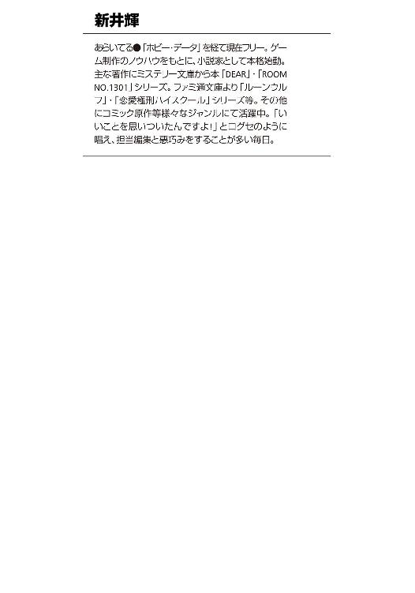
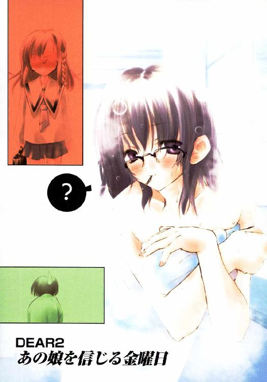
DEAR2
あの娘を信じる金曜日
新井 輝

富士見ファンタジア文庫
本作品の全部または一部を無断で複製、転載、配信、送信したり、ホームページ上に転載することを禁止します。また、本作品の内容を無断で改変、改ざん等を行うことも禁止します。
本作品購入時にご承諾いただいた規約により、有償・無償にかかわらず本作品を第三者に譲渡することはできません。
本作品を示すサムネイルなどのイメージ画像は、再ダウンロード時に予告なく変更される場合があります。
本作品は縦書きでレイアウトされています。
また、ご覧になるリーディングシステムにより、表示の差が認められることがあります。
口絵・本文イラスト 久瀬たかし
目 次
俺は本当に鈍いヤツらしい。
だから、きっと俺はまた繰り返すことになった。そんな気がする。
青山正吾
プロローグ そして俺はまた〈天使〉に出会った
目を覚ますと、あまり座り心地のよくないパイプ椅子に座っていた。
薄暗い青い光の中、小さなステージから差す光を見て、青山正吾は、
──また、寝てしまったみたいだ
とぼんやりと考えたりする。
「......あれ？」
しかしすぐに、そんなわけはないと気付いた。
劇場で寝過ごしてしまったのは、もう三週間も前のことのはずだった。
今日は十一月十三日。正吾が二度目のデートで演劇を観に行ったのは、十月十九日のこと。市ヶ谷一美に先日のお礼だと言ってもらったチケットの日付はしっかりと覚えている。
劇の内容はちょっと上級者向けというかマニアックというか、正吾には少し難しくて、途中で飽きて眠ってしまったのだった。
その時、隣に座っていたのは、他でもない乃木坂秋葉だった。十月一日のあの日から、正吾が付き合うことになった彼のクラスメイトだ。
しかし今、隣に座っているのは秋葉ではなかった。正吾にとっては秋葉よりずっと昔から知っている顔の女性がそこで眼鏡に光を反射させていた。
「優姉？」
正吾は昔からの呼び方で彼女を呼んだ。
彼女は高島優子という名前の正吾の従姉妹だった。年は十九で、近所に住んでいることもあって正吾にとっては実の姉のような存在だった。
「............」
優子は話しかけられても何の反応もしない。
まるで時が止まっているかのようだった。彼女は身じろぎ一つせず、そこに座り続けている。
「そうか、ここは......」
何も答えない優子を見ているうちに、正吾はある事実に気付いた。
ここは、普通の世界ではない。この間とは随分と印象が違うが、あの不思議な世界だ。
精神と時の世界。〈天使〉のあの娘がそう呼んでいた世界だ。
「って、ことは俺はまた死んだのかな？」
正吾は実感がわかないまま立ち上がり、状況を確認するために自分の服を見る。
学校の制服を着ていた。デートの時に着ていた服は私服だった。ただの夢だというオチでもなさそうな気がしてくる。
制服は妙にヨレヨレとしていて、ところどころ擦れて小さな穴が開いていた。上着を脱いで確かめるが、今度は鋭利な刃物で穴を開けられたということではなさそうだった。
どうやら今度は刺されて死ぬというわけではないらしい。
「それにしても、なんで優姉がここにいるんだ？」
正吾は上着を着直して優子の顔を見る。彼女の顔は少しも変わることなく、ステージの方へと向けられている。青い照明の光が彼女の眼鏡や顔に反射していた。
今、椅子に座っているのは優子だけだった。並んでいるパイプ椅子は座る人もおらず、そのままに置かれているだけだった。
改めて見ると、本当に小さな劇場だった。横に十個、縦にも十個も椅子を並べればもう余ったスペースは残されていない。あとはステージとライトが置かれた階上の小さな出っ張った場所くらいだった。天井も普通の家の二階分の高さもないかもしれない。
ステージの上では、デートの時とはまったく違う劇が行われているようだった。
しかも優子と同じく少しも動かないので、距離を置いて見ていると、まるで写真を貼りつけたかのような錯覚を受ける。少し動いて正吾は、それが立体的に確かに存在するものだと確認できた。
「これ、市ヶ谷先輩だよな？」
ステージ上に市ヶ谷一美が立っていた。緑色の魔法使いの服を着ている。々しい表情で何か大きな声を上げている場面らしい。
その向かいにいるのは、広尾景子らしい。彼女は赤い魔法使いの服を着ている。おそらく、二人はライバルという設定なんだろう。そんなことを正吾は思った。
そんな彼女たちの後ろには、天井から吊るされた流れ星が浮いていた。段ボールにでも描いたようなチャチな星だが、正吾はそれがなんとなく魔法で呼び出されたものなんじゃないかと感じた。
「ゲームのやり過ぎかな」
正吾はぶつぶつと呟きながら、少し劇場の中を歩いて回ることにする。
優子の前を通ってパイプ椅子の間を抜けて照明のためのスペースに近づくと、そこに一人の少女がいた。それは正吾の女友達である真鶴千尋であるらしい。暗いうえに少し高いのでよく見えないが、その面影があった。彼女は普通の制服を着ている。
「裏方は普通の服ってことなのかな？」
何かこの世界にはある種のルールがあるんだろう、ということを正吾は感じていた。
この間、この世界に来た時のことを思い出せば、色々と解決のためのヒントがあるような気がする。今回もきっとそうなんだろうと彼は漠然と感じながら、今度は向かいの照明を操作しているはずの人間を見ることにする。遠目にちらっとみただけで、それが赤井貴博だというのがわかった。背の高い、髪を金色に抜いた男友達。彼もやはり制服を着ているらしい。
正吾はそれからふと、秋葉のことを思い出した。優子がいた不自然さに気を取られていたせいだろうか。それまで秋葉がいないということに気付かなかった。
照明のところにいるのが千尋と貴博で、ステージに一美がいるとなると、自分の身の回りの人間ばかりだ。そこに秋葉がいないというのは、なんだか不安を覚えてしまう。
「今回の件には乃木坂さんは関係ないってことなのかな？」
正吾は秋葉の所在が気になって辺りを見回す。だが彼女は見つからない。
正吾は劇場の右側についている出入り用の扉に気付いてそれを開けようとするが、あいにく少しも動かなかった。
「こっちはダメか......」
正吾はステージの方へ歩いていくことにする。もはや探す場所はステージと舞台裏くらいしかなさそうだった。
ステージに近づくと、一美の奥の方の樹の後ろに誰か隠れているのがわかった。さらに近づくと、一美の妹の双海だと確認できた。
「双海ちゃんだったのか」
いつも一美の陰に隠れているようなイメージのある彼女が、一美ではなく樹の陰に隠れているのは少し意外な気がした。それから正吾はステージの上を探すが、もう誰もいなかった。
それで両脇にある舞台の袖の右の方へと歩く。
「ここにも乃木坂さんはいないな」
右袖にいたのは、正吾のクラスメイトたちだった。
一番手前にいたのは船堀樹里子。彼女は台本を握りしめて、なにやら檄を飛ばしているみたいに見える。それがクラスの文化祭の準備でも率先して活動している彼女の姿に重なる。
少し奥にいたのは篠崎美貴。彼女はタオルを手にステージの方を見つめているらしい。
他にもクラスメイトの姿があるのだが、秋葉の姿は見つからない。
「これは......」
その代わりに気になるものが壁にかかっているのを見つけた。
黒い悪魔の衣装。十月一日のあの時に、自分を二度殺したあの悪魔の衣装がハンガーで吊るされていたのだ。
それを見て正吾は背中に痛みが蘇ったように感じた。だが、それは錯覚に過ぎない。あの刺された日のことは、結局はなかったことになったのだから。
「でも、今回もこれが関係あるってことなのかな？」
正吾はそう呟いて、それが何を意味するのか考えてしまった。だが考えてみても意味はわからない。
「それにしても、乃木坂さんはどこなんだ？」
正吾はさすがに不安になってきた。残る左の方の袖へ行こうとステージへと戻ってきた時、不意に音楽が聞こえてきた。なだらかな優しいテンポの曲だった。
それで正吾はステージの方へと視線を向けた。
すると、ステージの中央へスポットライトが集中していた。そこへ白い光を放ちながら小さな少女がふわりとゆっくりと降りてくるのが見えた。
流れ星のように上から吊るしているわけではなかった。少女は空を飛んでいる。だが、今更正吾は驚きはしなかった。
正吾は彼女が空を飛べることは知っていたからだ。あの自分にもう会うことはないだろうと語っていた自称〈天使〉のトーカが、床に足をつけるとクルリと振り返って自分の方を見た。
彼女の口元がニッと笑いを浮かべる。
「また会えたね、正吾クン」
歌うような響きのトーカの声が聞こえた。
「また会えたね」
正吾はトーカの顔を見つめる。
トーカは正吾が最近つきあうことになった乃木坂秋葉の死んだ妹だった。トーカは死んだ後、この時間の流れとは無縁の精神と時の世界で〈時間的複雑構造体〉の修復担当官というものを務めているらしい。
でもトーカと秋葉はやはり全然違うと正吾は思う。顔の作りは似ていても表情が似ていない。トーカが、いつも笑っているけど不意に無表情になるのに比べて、秋葉は逆だった。笑っているときより無表情の時の方が多い。それは秋葉が十五歳で、トーカが十歳くらいのままにしか見えないという違いだけではない気がする。
「会えて嬉しい？」
トーカが屈託のない笑みを浮かべて正吾に尋ねる。会えて嬉しいのは事実だが、それが何を意味するのかを考えると複雑な気持ちではあった。それでも正吾はうなずきながら答える。
「嬉しいよ。この間はなんか一方的に放り出されたみたいな感じだったし」
「そうだね」
正吾の返事が面白かったらしく、トーカはまた一段と笑った。正吾はそんなトーカの側に歩いてきて立ち止まった。それをトーカは確認すると、少し真面目な顔をしてこう告げる。
「今更、あんまり説明する必要もないと思うけど、正吾クンはまた死んだんです」
「だろうね。でも、ここにいるってことは、また『事故』なんだろ？」
正吾の言葉にうなずきながら、トーカはステージを降りて客席の方にある、さっき開かなかった扉の方へと歩き始める。
「まあ。そういうこと。また事故が原因で三人の人が死んでしまったから、三回やり直す間になんとかしてくださいという感じ」
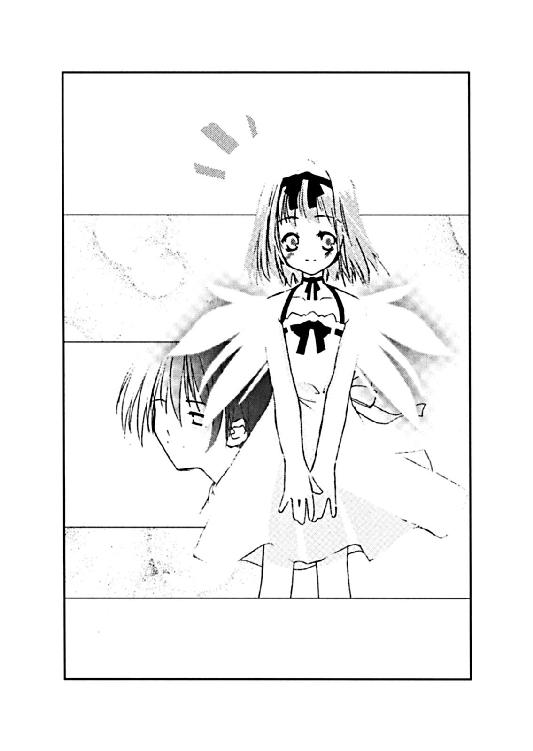
正吾の返事を待つつもりなのか、トーカは静かにその場に立ち止まった。
「三人の人ね」
正吾は言われて思い出す。この間は、自分と乃木坂秋葉、市ヶ谷一美の三人だった。
一人は自分として、後は誰なんだろうか？ そんな疑問が浮かぶ。
「もしかして、乃木坂さんじゃないよな？」
質問というよりは独り言のような口調で正吾が呟く。トーカはいつもの調子でそれに答える。
「ヒントはなし。あんまり予備知識を与えると余計な混乱の元だし」
「それはわかるけど」
言われて正吾はトーカが随分と達観していることに改めて気付かされた。
考えてみれば、この間の十月一日の事故の時だって、大切にしているはずの自分の姉が死んだというのに、トーカは少しも動揺してはいなかった。
正吾がそんなことを考えている間に、トーカは真面目な顔をしてルールの確認を始める。
要するに前回と同じではあるのだが、リアルタイムで何度となく重要なルールを忘れた正吾のために、釘を刺してくれているのかもしれない。
「今回も事件の犯人と言える人と正吾クン以外は、自分の意志で運命を変えることはできません。これはこの間、正吾クンが気付いたように、自分の意志で運命を変えている人がいれば、それが犯人だということを意味しています」
「でも、それによる推理は間違ってたけどね」
「ルールの解釈としては間違ってはなかったのにね」
正吾の言い方がおかしかったのか、またトーカは笑顔に戻った。それとは逆に正吾は不意に真面目な顔になる。
「この間も思ったけど、どうして俺なのかな？ 俺が当事者だっていうのは大体察しはつくけど、他の人の方がいいんじゃないのかな？」
「どうして、そんな風に思うの？」
「いや、だって俺はこれといった特技もないし、頭もいい方じゃないと思う。問題を解決するのに向いている人間じゃないって思うんだけど」
「まあ、事件を解決するためだけなら、別に正吾クンじゃない方がいいのかもしれないなあって私も思うよ」
「......やっぱりそうだよな」
「でも、私は正吾クンに頼みたいの。上手くやってくれなくてもいい。正吾クンが選んだ運命なら、それでいいと私は思っているから」
そんな風に言われて正吾は照れてしまうのを感じた。
「......ありがと」
「違う人を呼んで初めから説明するのも面倒くさいし、正吾クンの方がいいんだよ」
「なんか、ちょっと複雑な気持ちだな」
言われてトーカがまたニコリとした笑顔を浮かべて正吾の周りをすたすたと歩き始めた。なんの意味があるのかわからないが、右手の人指し指を伸ばし左右に同じリズムでふりながら彼女はまた話を続ける。
「他の人は面倒くさいっていうのは半分冗談だけど、正吾クンに任せたいっていうの本気で言ってるんだよ。この間もあんまりスマートとは言えない方法ではあったけど、ちゃんと正吾クンは修復してみせてくれたし」
正吾はそんなトーカの言葉に不意に不安を覚える。
「もしかして、俺のせいなのかな？」
「え、何が？」
驚いたのかトーカが立ち止まった。
「今回、こうして事故が起こって呼び出される結果になったのは、もしかしてこの間の事故の修復の仕方がまずかったからじゃないかなって思ったんだけど」
「それは、そうとも言えるし、そうでないとも言えるかな」
「どういうこと？」
「もともと事故が起こる時点で、〈時間的複雑構造体〉──まあ、正吾クンのわかるように言えば運命みたいなものだけど──の設計に問題があったわけ。この間はそれを、取り返しのつかない破綻を避ける範囲で修復したんだよね。でも設計上の欠陥まで直ったわけじゃないから、今回もこうして事故が起こってしまったわけ」
「ってことは、やっぱり俺のせいなのかな......」
「えっと、そうじゃなくて、どの道、なんらかの事故は起こったとは思うの。正吾クンの選んだ運命のせいで、また正吾クンが巻き込まれるような事故が起こったというのは事実かもしれないけど」
「うーん」
正直言って、トーカが何を言っているのかは正吾にはわからなかった。その〈時間的複雑構造体〉に関する予備知識がないのだから、わかりようもないのだが。
「いずれにせよ、事故が起こったのは正吾クンのせいじゃなくて、そもそも欠陥があったせいなの。だから正吾クンは自分の思うようにやってくれれば、それでいいから」
「でも、もっと上手くやっていれば、今回の事故は避けられていたんじゃないのかな」
「そういう可能性はあるけどね。でも、それは正吾クンが気にするようなことじゃないから。どっちかといわなくても私や、この世界の人たちのせいだよ」
「......そうなのかな」
トーカが必死にフォローするのが正吾には逆になんだか気になってしまった。
トーカが噓をついているとは思わないが、自分を責めまいとしてくれているという気がしてしまう。それが逆になんだか正吾には辛かった。
「そうなの。だから気にしないで」
それはトーカも同じだったらしい。正吾の様子を見てトーカも少し暗い表情を浮かべる。
少し重苦しい沈黙を感じて、正吾は少し話題を変えることにする。
「あ、そうだ。ごめん」
「え？」
「この間、恩返しならお姉ちゃんにしてって言われたのに、なんかあんまり仲良くできてない」
「みたいだね」
トーカは小さく呟くと、にこっと笑った。慌てて言訳する正吾が面白いと思ったらしい。
「正吾クンって本当にバカみたいに素直だよね」
「......またそういうことを言う」
「あ、別に悪口じゃないよ。すごくそういうところ良いなって思ったから言ったの。でも、そうだな。あんまり、そういう言い方はして欲しくなかったかな」
「なんで？」
「そうじゃないってわかってるけど、なんだか恩返しのためにお姉ちゃんと付き合い始めたみたいな気がする。だから恩返しとか、そういうの気にしないで欲しいかな」
「そうかもしれない。ごめん」
「そうやってすぐ謝るのも、正吾クンらしいけど」
トーカはそう呟くと、また真面目な顔に戻った。
「というわけなんで、そろそろお話はこの辺で終りにしよう」
「あ、うん」
「お姉ちゃんのことも、今回のことも、私は正吾クンは正吾クンらしくしてくれればそれでいいと思ってるから。だから、申し訳なく思ったりしてくれない方がうれしいかな」
トーカは今度は笑顔を正吾に向けると、空に向かって指を伸ばした。それは正吾にとっては、もう見慣れた仕草だった。元の世界へと戻すための予備動作だ。
「わかったよ。その正吾クンらしくってのが何かイマイチわからないけど、思うようにやってみる」
「うん。頑張ってね」
トーカはそう言って、扉の方へ指を指した。ガタンと大きな音がして、扉が揺れたように感じられた。
「今回はこの扉から戻って」
トーカにそう言われ、正吾はじっと扉を見て、それから気になっていたことを尋ねることにした。
「そういえば、乃木坂さんはどうしてこの世界にいないのかな？」
「ヒントはなし」
「......それじゃ、あの左袖の中はどうなってるのかな？」
正吾はトーカの登場のせいで確認できなかった場所のことを確認することにする。遠目にその場所を見ると、誰かの視線がそこからこっちに向けられているのを感じた。
あそこには、やはり誰かいるらしい。それが正吾にはわかった。しかしトーカはそんな正吾にハッキリとこう答えて、扉の方を指さした。
「お姉ちゃんはいないし、あそこにいるのは今の正吾クンは知らない人だから」
「今は知る必要がないってことか」
正吾が小さくうなずくと、トーカもそれを見てうなずいて見せた。
それで正吾はもうこれ以上、ここに留まるのもなんだと思ってドアのノブに手を触れた。
途端、床と壁がふわりと崩れてその向こうから強い陽射しがさしてきた。
無数の三角の破片がそんな光の中で舞い上がっていく。いや舞い上がったわけではないのかもしれない。正吾がゆっくりと落下を始めたのかもしれない。
「頑張るよ、トーカ！」
床がなくなり落ちていきながら、正吾は遠ざかるトーカに叫んだ。
トーカが手を振っていた。何か喋っているようにも見えたが、声はもう聞こえなかった。そしてそれに気付いたところで、正吾の意識はそのままこの世界から消えて行った。
第一章 結局、また死んでしまう俺
目を覚ましたのは膝の痛みのせいだったかもしれない。
気付くとズキズキと膝が痛みを訴えていた。別に寝ているうちに、ぶつけたというわけではない。背が伸びている反動だろうと正吾は思う。
最近はそんなことが多い。あまり背の高くない正吾にとっては嬉しいことのハズだが、やはり痛いのはあまり嬉しくはない。
「しかし、また随分と早く起きちゃったな......」
目覚まし時計はまだ鳴ってはいなかった。
トーカと会った日には、早く目が覚めてしまうものなのかもしれない。
まだ時計は六時過ぎだった。この間のときに比べれば、睡眠時間はむしろ多そうな気がする。遅くまでゲームをしていなかったのは幸いだった。
それから正吾は下の方でごそごそと音がするのに気付いた。それで、あることを思い出す。
今日もこの間と同じく両親は家を留守にしているのだ。
町内会の福引きでペアの旅行券が当たったとかで、正吾を置いてまた嬉しそうに温泉旅行に出かけてしまったのだ。だから昨日から両親はいない。
階下にいるのは、高島優子だった。食事くらいはちゃんと作ってあげるべきだろうと、両親が世話係のような感じで、彼女を呼んでくれたのだった。
昨晩の食事を作った優子は、今日の朝ご飯とお弁当のためにと正吾の家に泊まっていた。下の方の物音はきっと優子がその準備をしているためだろう。
「じゃあ、もう少し寝るかな」
呟くと、また急激に眠くなるのを感じた。
今回は自分で朝ご飯を作らなくていいんだ。そんな気持ちが正吾を油断させたのかもしれない。彼はそのまま、あっさりと眠ってしまうのだった。
いつもと同じ不愉快な音を立てて、目覚まし時計は正吾を眠りから覚まそうとしていた。
時間はもう七時半。そろそろ起きなければいけない時間だと、正吾はぼんやりと思う。
「......やっぱり二度寝はやめよう」
今度は膝だけでなく体全体が痛いような気分だった。寝方が悪かったらしい。
「この間もそう思ったはずなのにな」
正吾はブツブツと呟きながら白と黒のタイルパターンの毛布からのそのそと出て、何故か静かになっている階下へと降りていく。
「......優姉。何しに来たんだよ」
居間に行くとテーブルの上に優子が顔を乗せて寝ていた。眼鏡をかけたまま寝ている辺り、本当は寝る気はないがそのまま眠ってしまったというパターンのようだ。
料理の腕は確かなのだが、朝は血圧が低いので動きが鈍い。正吾は昔からの付き合いで知っているはずのその事実を今更のように思い出す。
「朝は俺が作った方が良かったかな......」
話しかけても寝たままの優子を見ながら、正吾はそう呟く。それからテレビをつけ、冷蔵庫の上の六枚切りのパンを手に取った。
「あれ、正ちゃん、どうしたの？」
優子が目を覚ましたのは、トースターがチンと音を立てた時のことだった。コーヒーもすでに入っており、パンの香ばしい香りにその苦い香りが混じって漂っている。優子が目を覚ましたのは、お腹が減っていたからかもしれない。
「どうしたのも何も、学校に行かないといけない時間だから朝ご飯を作ってたんだけど」
呆れたという態度を隠そうともせず、正吾はじっとその従姉妹の方を見つめた。
普段は黒くすっきりと長い髪も、寝癖でボサボサになっているし、顔はいかにも眠そうだ。口も少し上を向いてだらしなく半開きになっていて、よだれが垂れかけている。
「優姉。よだれ......」
ぼ──っとしたままの優子に正吾は自分の口元を指さして教える。優子は正吾が指さした場所を自分も指さしたりなどする。
「俺じゃなくて、優姉だよ」
「......あ、私？」
状況を理解してないらしい。優子は自分の口元を指さすだけで、それ以上は何もしようとしなかった。正吾は仕方なく台所から布巾を取ってくると、彼女の口元に押し付けた。
「よだれを垂らしかけてるから、これで拭いてください」
短く区切るような口調で正吾は改めて釘を刺す。さすがに優子は理解したのか、うなずくと自分で拭き直した。
「あらら、ごめんなさい。私、ちゃんと目覚ましはかけたんだけど、ここに来たらまた眠くなっちゃって......」
「まあ、その辺は見ればわかったけど」
正吾は焼けたパンとコーヒーを優子の分もテーブルに置いて、優子の向かいの席に座った。
「ごめんなさいね。正ちゃんの朝ご飯作るために呼ばれてたのに、私の分まで作ってもらって」
「まあ、いいよ。別にパン焼いてコーヒーを入れるくらい自分でもできるし」
「それは、まあそうなんだけど」
ちょっと寂しそうな不満そうな顔で優子は正吾を見つめる。しかし目はまたすぐに細くなり、どうにも逆らえない重いまぶたに負けて、優子はまた眠ってしまいそうになる。
「......優姉、シャワーでも浴びてくれば」
「そうした方が、いいかしら？」
おっとりした口調で質問なんだかわからないことを優子は呟く。
「まあ、もう今朝はすることないし、どっちでもいいんだけど」
「じゃあ、ここで寝てもいい？」
「それは、ちょっと止めた方がいいかなあ」
実を言えば優子は別に眠くなくても少しとぼけたところがある。さらに今は猛烈に眠そうなので、とぼけ具合はかなり堂に入ったものだ。
「......じゃあ、何か話をして」
「は？」
「黙ってると眠くなるじゃない」
「それはそうかもしれないけど」
正吾は少し考えて、ちょっとテレビの方に注意を向けた。テレビではちょうど天気予報の時間になっていた。
どうやら今日は終日晴れているらしい。言われて外を見れば気持ちのよさそうな陽射しが差し込んできていた。
「二日連続で、晴れか。とりあえず一安心だな」
「二日連続？ ここのところずっと晴れてるじゃない」
「......文化祭の話だよ、優姉」
「ああ、文化祭ね。なるほど、なるほど。でも、あれ......正ちゃん昨日も文化祭二日目って言ってなかった？」
「そんなこと言うわけないし、それに優姉が昨日来たのは遅かったし、ろくに話もしてなかったと思うけど」
「......そう言われてみればそうね。まだ私、寝ぼけてるみたい」
「みたいじゃなくて、そうだとしか思えないけど」
「でも、良かったね。晴れで」
優子はそう言ってニマッとした笑みを浮かべる。
「なんで？」
「だって正ちゃん、約束してるんでしょ？」
「約束って......」
約束。その言葉には正吾も心当たりはあった。しかし優子がその話題をしてくるとは予想外だった。
「乃木坂さんって言ったっけ？ その娘と後夜祭のキャンプファイアーを一緒に見るって約束してたじゃない」
「な、なんで知ってるんだよっ！」
慌ててしまい思わず声が大きくなる、でも優子の方はのんきな調子のままだ。
「昨日、電話してたじゃない。それにこの間、正ちゃんが学校から帰るところも見たの。あの、小さくて眼鏡かけてて、この辺に三つ編みしてる子が乃木坂さんなんでしょ？」
優子は自分の左の髪を結ぶような仕草をする。正吾はといえば、普段はぼ──っとしているくせに、どうでも良いときだけ妙に鋭い、この従姉妹の行動力を改めて知ってなんとも照れ臭い表情を浮かべてしまう。
「どうして、そういうことは、ちゃんとチェックしているかな、この人は」
「いいじゃない。いいことじゃない。好きな人がいて、相手も自分が好きなんて、とってもいいことだと思うけど」
「そういうことじゃなくて。なんで、そういうことはしっかりチェックしているのかなって思ってるんだけど」
「別にそんなに頑張ってチェックしているわけじゃないけど、偶然、なんか聞こえたり見たりしちゃうのよね。これが」
「人が電話しているのを聞くのは、偶然じゃないと思うけど、優姉」
「そうかしら？」
「そういう優姉はどうなのさ。彼氏とかいないの？」
「私はいないわよ。どうせ、浪人生だしね。恋をしてる暇なんてないんだから」
「その辺もよくわからないんだよなあ。優姉は時輪台大学付属高校に通ってたんだろ？ なんで外の大学受けて、浪人生してるの？」
「その辺は自分でもよくわからないのよねえ。頑張って中学受験したのに、気付くと外の大学に行くつもりになってて、しかも今は浪人生。なんでかしら？」
「なんでかしらと言われても、聞いてるのはこっちだし......」
正吾は寝ぼけている優子とこれ以上話しても無駄だろうと思って話題を切り上げる。
時計を見るとちょうど八時五分前になろうとしていた。
「片づけはしておくから、マジでシャワーを浴びてくれば？」
「そうねえ。そうしようかな」
優子はユラユラと危ういバランスで立ち上がる。それから、おもむろにパジャマの下を脱ぎ始める。
「優姉！」
「え、何？」
「何じゃないよ。なんで、居間でパジャマを脱ぐんだよ。おかしいだろう？」
「......そんなにおかしいかしら？」
「おかしいよ。かなりおかしい。第一、俺が見てるんだから。わかってるの？」
「別に正ちゃんに見られても私は気にしないけど」
「俺は気にするんだよ」
「私は大丈夫よ。だって、正ちゃんは私の弟みたいなもんだし」
「だから、俺が気にするって言ってるの！」
「そう。じゃあしょうがないか。別にうちでは当たり前なんだけどなあ」
本当はまだ合点がいってないというような感じのまま、優子はまたユラユラと揺れながら歩いて居間を出ていった。
「とりあえず、誰か来ている時には優姉は呼ばない方が良さそうだな。何言われるかわかったもんじゃないし......」
皿を片づけながら、正吾はブツブツと呟く。
そしてちょうど片づけが終った頃、玄関のチャイムが鳴るのが聞こえた。
時計を見ると八時三分前。お客が来るには変わった時間だな。そう思いながらも正吾は玄関へと向かい、来客を出迎える。
「おはよう、正吾クン」
乃木坂秋葉だった。普段とは違ったセーラーっぽい制服を着ている。それは文化祭の企画の一つ、制服コンテスト用の服だった。
「あれ、迎えに来てくれたの？」
「うん。ちょっと朝早く目が覚めてしまったんです。駅前で待ってても良かったんですけど、待ってるよりは来た方がいいかなと思って。もしかして邪魔だったですか？」
「いや、そんなことないし、嬉しいけど......」
「けど？」
「まだ、俺、準備が終ってないから、悪いけど上がって待っててくれるかな」
「あ、はい」
秋葉は正吾に言われて玄関に、靴を脱いで上がる。
「お邪魔します」
「あ、今、両親、旅行中なんだ。だから気にしないで上がっていいから」
「そう、なんですか」
言われて、秋葉はなんだか少し驚いたようだった。それから玄関に置かれた一組の靴に目を向ける。
「この靴。正吾クンのお母さんのですか？」
尋ねられて正吾は少し驚いてしまう。それはもちろん、彼の母の靴なんかではなく、優子の靴だったからだ。
「正吾クン？」
そんな正吾に気付いて秋葉がもう一度尋ねた。
「それは、俺の姉さんみたいな人の靴で......」
正吾がそう言いかけた時だった。風呂場の方から、ゆっくりとした大きな声が響いた。
「ねえ、正ちゃん、バスタオルはどこ？」
「......えっと」
答えねばならない質問がどっと増えた。そんな気がして正吾はまた言葉につまる。
状況を理解できず説明を求める秋葉の視線が正吾に突き刺さる。そこにさらに答えを求めて優子の声が近づいてくる。
「ねえ。どこにあるの？」
玄関から入って角を曲がる辺りから優子の顔が見えた。
「あら、お客さんだったの？」
状況を理解していない優子の言葉。正吾は結局、どうしていいかわからず途方にくれるしかできなかった。
○
「もしかして、怒ってる？」
「別に怒ってません。あの人は正吾クンのお姉さんみたいな人で、旅行中のご両親の代わりに正吾クンの朝ご飯を作りに来てくれただけ。それでなんで私が怒らないといけないんですか？」
事態は一応の収拾はついたが、感情的には許せない状況ではあったらしい。秋葉は怒っていないと口では言っているが、普段より態度が明らかに硬かった。
「本当、なんでもないんだよ。優姉は昔からああいう人でさ」
「私は怒ってません。だから、言訳なんて必要ないです」
「それはそうだけど、でも、なんか怒っているみたいに見えるし」
正吾は秋葉の後ろを追いかけるように学校へと向かっていた。少し揉めていたこともあり、いつもより登校が遅くなったかもしれない。そのせいか秋葉の歩きも普段よりもさらに早くなっているように感じる。
秋葉はもう喋らず、正吾も一人で話し続けるわけにもいかずで、二人は押し黙ったままスタスタと歩き続ける。続く沈黙に正吾はどうしたものかと思うが、どうにも適当な言葉が浮かばなかった。
（どうして、こうなっちゃうんだろうな......）
二人がこういうレベルのケンカをするのは珍しいことではなかった。
この間の『事故』の時以来、付き合うことになった二人ではあったが、どうにも間が悪く、すぐケンカになってしまうのだ。
「私、優子さんのことで怒っているわけじゃないですから」
そんな沈黙を破ったのは秋葉だった。しかし学校にかなり近づいた歩道橋の上でのことだ。
「......じゃあ、他のことなのかな？」
「正吾クンのご両親が旅行に出かけてるって話」
「え？」
「正吾クン。ご両親が旅行だって言ってくれなかったじゃないですか」
「別に秘密にしてたわけじゃないけど......言う必要ないかなって思ってただけで」
「両親がいないから朝ご飯を代わりに優子さんに作ってもらうって話なら、私、今日、作りにいっても良かったのに。そう思ったんです」
「......そうか」
言われて正吾は確かになんで気付かなかったんだろうと思う。
だが、今更どうにもなるわけでもない。やり直しの一回目だとわかったところで、もう目が覚めた時点で手遅れなのだからどうにもならない。それも同時にわかった。
「ごめん。迷惑をかけたくないと思ってて......気付かなかった」
「じゃあ、いいです。それなら、いいですから」
秋葉は急に穏やかな顔に戻ると、正吾の手首を摑んだ。
「急ぎましょう。準備もあるし、皆、待ってるから」
「あ、うん」
正吾は秋葉に引かれて学校へと駆け出した。
正吾は何かひっかかるものを感じていた。急に機嫌の良くなった理由もイマイチ釈然としなかった。でも、彼女はきっとそんなに怒ってなかったんだろうと思って、その場は納得することにしてしまった。
「いい加減にしてくれませんか、先輩？」
二人の穏やかな気分を吹き飛ばしたのは、そんな言葉だった。
時間はもう八時二十分を過ぎていた。普段ならともかく、文化祭当日であることを考えるとかなり遅い時間だった。
体育館への渡り廊下に、市ヶ谷一美と広尾景子の二人がいた。今回の文化祭での演劇部のヒロインを巡って争っていた二人だった。
二人が仲が悪いのは今に始まったことではない。しかしよりによって文化祭当日にもなってケンカしているのはさすがに具合が悪そうだ。正吾はそんな二人の姿を見て、あの不思議な世界のステージの上にいた魔法使い姿の二人のことを嫌でも思い出してしまう。
「当日になって今更、台本をどうこうなんてできるわけないってわかりません？」
一美の怒りの声がまた聞こえてくる。景子の声は小さいのか正吾と秋葉のところまでは聞こえては来なかった。
「......とめた方がいいのかな？」
秋葉の顔を見て正吾が尋ねる。秋葉はちょっと考える間をおいて、
「大丈夫だと思います。きっと」
「そうかな......」
「市ヶ谷先輩も広尾先輩もそんなに仲が悪いことないと思いますし」
「俺はいつもケンカしているって印象なんだけど」
「でも、なんて言うか、二人がケンカしている理由はちょっと違うような気がするんです」
秋葉はそこまで言うと言葉につまったようにまた間を置いた。
「あの二人はただ少しでもいい演劇をしたいってだけだと思うんです。それで妥協点が違うから衝突してしまうんじゃないですか？」
「妥協点......？」
なんだか難しい言葉が出てきたな。正吾がそんなことを思っている間に、秋葉は教室に行かないとだめだとせかしまくる。
「とりあえず、あの二人は大丈夫ってことにしておくか」
この間の『事故』の時の当事者と最重要容疑者だった二人のケンカ。気にならないといえば噓になってしまうが、確かに秋葉が言うように二人はそんなに仲が悪いわけでもないのかもしれない。そんな気もした。
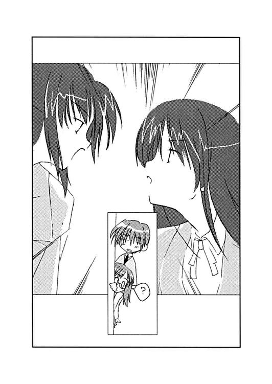
昇降口に入ると、文化祭二日目への期待で空気がごちゃついているように感じられた。
なにやら段ボールを抱えて走り回る生徒達の姿も見えた。九時からの一般入場へ向けて急いでるのだろう雰囲気が嫌でも伝わってくる。
「......ちょっと遅くなりすぎたかな」
「みたいですね」
階段を上ろうとしたところで、壁に向かって人が集まっているのが見えた。この忙しい雰囲気の中で立ち止まって集まっているのは、かなりのショッキングな出来事でも起きたとしか思えない。正吾は気になって、そっちへと歩いていこうとする。
「何かあったのかな？」
「どうなんでしょう？」
秋葉は正吾を追いかけるように歩き始める。
人だかりから離れる生徒の姿が見えた。その顔に笑みが浮かんだかと思うと、こらえるような仕草をして、二人とすれ違っていく。
「さっきの人、私たちを見て笑ってませんでした？」
不安げに秋葉が尋ねる。正吾は否定も肯定もできず、人だかりの中にあるだろう答えを求めて進んだ。
「......千尋の仕業だな」
一目見て正吾は理解した。
壁にはビラが貼られていた。
文化祭ベストスクープ募集！ と大きく書かれた派手なポスターだった。別にポスター自体は問題ではない。問題は写真とそこに書かれた文字だ。
「このカップルみたいな素敵な写真をあなたも撮ってみませんか......？」
秋葉が状況を理解できないままその問題の文字を読む声が聞こえてきた。その上の写真は、正吾と秋葉がデートしている時のものだった。
最初のデートの時、十月四日の日曜日のこと。出かけた先で千尋と会ってしまい、撮られてしまった写真だった。よくよく考えれば、その日曜日は千尋が取材に行こうと誘っていた日だったので、それを断ったことに対する彼女のささやかな復讐だったのかもしれない。
「まったく......」
正吾はポスターを剝がしながら、その日のことを思い出してしまう。
正吾は初めてのデートということで、秋葉とまともに会話もできなかった。そのせいで、途中から合流した千尋の方が気安いこともあって、ついつい彼女と話してしまったのだ。
それが原因で秋葉はかなり不機嫌になってしまって、しばらく大変だった。なのに、それを今更こんな形で思い出させられるとは──。
「ところで教室に急いだ方がいいんじゃないですか？ 真鶴さんのことはここでどうこう言っても始まりませんし」
秋葉が黙ったままの正吾の腕を引く。集まっていた生徒達がそんな二人を見てちょっと笑い声を上げるのが聞こえた。それで正吾はその場を離れ、急いで教室へと向かうことにする。
「寄り道しすぎたかな？」
正吾は階段を上りながら、自分とは対照的に、すでに盛り上がり始めている周りの気配を感じて小さく呟いた。
「でも、大丈夫です。今年は皆、率先してやってくれてるから」
秋葉の言葉に、正吾はちょっと去年のことを思い出した。誰も協力してくれず、一人で頑張っていた秋葉。それを手伝ったのが自分だったのが、今、こうして二人が付き合っているきっかけだったのだ。
秋葉も黙ったのを見て、正吾は同じことを考えているのかななんてことを思ったが、確認する時間はあいにくなかった。
「遅いよ、秋葉っ！」
階段を上り終えたところで、二人がやってきたのに気付いてクラスメイトが話しかけてきた。ちなみに、正吾のクラス、一年一組の出し物は喫茶店だった。すでに準備が進んでいるらしく、コーヒーやケーキの香りが教室から流れてきていた。
「ごめんなさい。ちょっと寄り道してて」
「青山君が寝坊したんでしょう？ そうじゃなきゃ、秋葉がこんなに遅れるわけないもんね」
そう言って正吾の方に視線を送ったのは、船堀樹里子だった。特に悪意を感じる視線でも口調でもなかった。だらしない彼氏をもって大変ねえみたいな気持ちはあったかもしれないが、それとて何か少し羨ましいといった気持ちの現れという気がした。
「まさか秋葉が寝坊ってことはないだろうしね。ダメだよ、青山君、あんまり秋葉に迷惑をかけたら」
そう言って正吾の方を見て笑ったのは、篠崎美貴だった。
この二人だけでなく、正吾と秋葉の周りはこの一か月でかなり変わっていた。文化祭への準備が本格化したということもあるかもしれないが、正吾はクラスではそれなりに注目されていたことを知ったのもここ一か月のことだった。
時輪台大学付属高校には、正吾や秋葉のような付属中学からの持ち上がり組と、高校からこの学校に入った高校入試組がいる。貴博や千尋や樹里子は時輪台第二中学に通っていた、高校入試組の生徒である。
「あれ、そういえば秋葉、コンテスト制服じゃない」
樹里子がそう言って、普段と違う彼女の制服を指摘する。言われてクラスメイトたちの視線がどっと秋葉に集まった。
「このかわいい制服を見せようとして寄り道してたんだ。秋葉もけっこう乙女～」
美貴がそう言って秋葉の方に微笑んで、それから正吾の方をまた見る。
「青山君、ちゃんと気付いて誉めたんでしょうね？」
「え、えっと......それは......」
「......青山君って、本当鈍いんだから」
美貴が頭を抱えるポーズでボソリと呟いた。正吾は鈍いという自覚は確かにあったが、言われて確かにあんまりにも鈍すぎたと気付く。
「そういうことばっかしてると、誰かに秋葉をとられちゃうわよ」
なんだかお姉さん口調でそう言われて、正吾は返す言葉がない。
「私は正吾クンの鈍いところ嫌いじゃないですから」
秋葉はなんとも微妙なフォローを入れてきた。
「......ありがとう」
「良かったじゃない。鈍いのはもう公認なんだから」
美貴がそう言って笑うが、正吾はとても笑う気分ではなかった。それがおかしかったのか、美貴がさらに笑うのが見えた。
「あ、そうだ秋葉。七組の市ヶ谷さんが例のもの持ってきてくれたわよ」
樹里子が言いながら秋葉を連れて教室の奥の方へと向かった。そこは文化祭用に作った更衣室だった。
「青山君さ──」
そんな秋葉たちに注意を取られている間に、また美貴が正吾に話しかけてきた。
「実は青山君て、けっこうクラスの女の子から狙われてたって知ってた？」
「......いや、知らないけど」
「樹里子が妙にそういうことに詳しいんだけど、聞いただけでも三人は青山君のこと密かに狙ってたらしいよ」
「......信じがたい」
「本当だよ。それに、これは私の推測だけど」
「？」
「樹里子も青山君のこと好きだったんじゃないかな。前からすごく気にしてたし、クラスの娘が青山君のこと、どう思ってるか詳しいし」
「そんなこと言われても全然実感ないけどな。俺、クラスで仲よかったの、貴博と千尋ぐらいだったし」
「まあ、なんかちょっと近寄りがたいところはあったけどね。あんまり喋らないし。でも、ちょっと話してみたら、なんか青山君て、結婚指輪とかいつもしてくれそうなタイプって感じだよねって気がした」
「なにそれ？」
「なんていうか奥さんのこと大事にするタイプ？ 赤井君はさ、結婚しても指輪隠して、合コンとか行きそうだけど、青山君は絶対そういうことしなさそう」
「誉められてるのか馬鹿にされてるのか、なんとも微妙な感じなんだけど」
「誉めてるんだよ。誠実でいい人っぽいって」
「......そうかな」
美貴は悪意のない笑みを浮かべているからきっと言ってる通りなのだろうとは思うが、どうにも心に引っ掛かるものを感じないでもない。
「って、そう言えば、貴博と千尋は？」
「赤井君は、あっちで頑張ってコーヒー豆を挽いてる。真鶴さんは......どこだっけ？ もう来てたはずなんだけどな」
「新聞部の方かな」
「かもね。真鶴さん、エプロンつけるの嫌がってたし」
「エプロンか......」
正吾がそう呟いた時、ちょうど秋葉がエプロンを着て戻ってきた。市ヶ谷双海が持ってきてくれた「例のもの」とは、秋葉が今着ているエプロンだった。全体的に青と白のストライプだが、レースの多い飾り気の多いエプロンだった。それを秋葉は上着を脱いで白いブラウスの上に着ている。
「大丈夫ですか、これ？」
秋葉が居心地悪そうに尋ねた。正吾はそれを見ているだけで、はっきりと言葉にせず、黙ってうなずくだけだった。
「青山君はあまりのかわいさに言葉も出ないって」
着替えを手伝って戻ってきた樹里子が正吾のそんな態度を笑いながらそう評した。
「そうなんですか？」
不安そうに秋葉が尋ねてきて、正吾は慌ててうなずく。
「うん。似合ってると思う」
「なら、いいんですけど。ちょっとレースとか派手じゃないですか？」
なおも不安そうな秋葉。しかし正吾の返事よりも大きな声がそこに割り込んでくる。
「おお。似合ってる、似合ってる。さすが双海ちゃん、大したもんだ」
その声は貴博だった。双海の演劇部での衣装係の腕を買って、秋葉のためのエプロンを作ってもらったのは他ならぬ貴博だった。
「市ヶ谷さんのエプロンの出来の良さは認めるけど、その言い方はないんじゃない？」
美貴が不服そうに貴博の方を見る。
「そうかな？ 乃木坂を誉めるのは、正吾に任せるの。俺はそういう主義」
「だったら、青山君が誉めるのを邪魔しちゃだめでしょう」
「それはそうか」
貴博は笑うと、正吾に近づいてきて、バンバンと背中を叩いた。
「さあ誉めろ、正吾！」
「......いや、なんかそういう風に改めて言われると、ちょっと」
「何言ってんだよ、学校新聞で全校生徒に交際宣言したくせに、今更照れるなって。今日だって、ベストスクープ賞の見本写真だったし」
「あれは千尋が勝手にやっただけで......」
正吾がその件で言訳しようとするが、その前に樹里子が割って入る。
「はいはい。そこ、男同士で盛り上がってないで。それにもうそろそろ準備始めないとだめだしその辺にしておきましょう。特に青山君は、まだ何にもしてないんだから、遅れた分も合わせて働いてね」
「......はい」
それで正吾は樹里子に連れられ、裏方の手伝いをさせられることになった。
「じゃあ、また後で」
そう言った正吾に、秋葉が質問を投げる。
「お昼、一緒に食べにいけますよね？」
「あ、うん。大丈夫だと思う」
○
「なあ、船堀。俺はいつまで、こうやって豆を挽き続けないといけないわけ？」
十一時を過ぎても、貴博の仕事は変わることはなかった。正吾にとっても状況は同じで、彼は皿を洗う係という仕事の内容が違うだけのことだ。
「まあ、お客さんが来なくなるまでかな」
そして船堀樹里子もあまり変わりなく、彼女の場合は貴博のようにブツブツと文句を言う裏方の男たちを見張るのが仕事だった。
「俺、こういう地味な作業を続けるのって苦手なんだよ」
「そういうの得意な人はあんまりいないから大丈夫」
「大丈夫じゃないだろ。それは」
それでも貴博は樹里子に言われるままに、作業を続けている。まあ話して気分が紛れているということなのかもしれない。
「それにしても、なんで船堀さんはこんなところで裏方やってるわけ？」
とりあえず洗うべき皿を片づけると、正吾は一休みとばかりに樹里子に尋ねた。
「それは俺も疑問だな」
貴博も正吾の質問に興味を持ったらしい。
「あら、どうして？」
「船堀さん、可愛いと思うけどな」
「おだてたって、サボってるのを見逃したりしないわよ」
ちょっと鋭い目つきで樹里子は正吾の方を見る。なんかまずいことでも言ったかなと正吾が黙ったのを見て、貴博がフォローを入れる。
「まあ、クラスで一番ってことはないけど、かなり可愛い方だと俺も思うけどね。少なくても篠崎よりは可愛いんじゃないかな」
「彼女のいる男は随分と酷いことを平気で言うのね」
「俺は事実をありのままに言う主義なの。千尋が戻って来ないから、エプロンも余ってるんだし、ウェイトレスをしてくればいいと思うけど」
「私に余りものがお似合いってこと？ って、まあその辺はいいけど。私は、秋葉にウェイトレスをして欲しかったの。だから裏方を買って出たってわけ」
「なるほど」
「彼女、今日のために色々頑張ってくれたし、もっと讃えられてもいいと思う。だから、目立つところで活躍して欲しかったの。私がこういう仕事しないと、秋葉がここにいることになったでしょ」
「それはそうかもしれない」
正吾は樹里子の言葉に素直に納得し、気付かなかった自分の鈍さを改めて感じる。
「でも、その方が良かったとか思ったりもしてる？」
樹里子は正吾が少し落ち込んだのを見て取ったのか尋ねてきた。
「......正直言うと、ちょっとそう思ったかも」
正吾の言葉に樹里子と貴博が笑う。しかし正吾は不意にこの光景に不安を覚える。
──何か、マズイコトが起こるんじゃないか？
正吾は直感する。だが何かはわからない。嫌な予感がするだけだった。
「正直過ぎだぜ」
貴博がそう言ったところで、篠崎美貴が入れ終ったコーヒーを補給に来た。
「何が正直なの？」
「正吾のヤツが、どうせ裏方をやるなら船堀より乃木坂と一緒にやりたかったってさ」
「それは正直だよね」
美貴が笑いながら、コーヒーの入ったポットを手に取った。しかし持ち上げたところで手からそれが落ちる。いや、取っ手が取れかけていたのだ。支えを失ったポットがそのまま机に落下して、ぐらりと揺れて貴博の方へコーヒーが飛び散るのが見えた。
正吾はその後、どうなるかを思い出し、驚いている三人より先にすでに動き出していた。
「......参ったね」
汚れた制服のズボンを見ながら貴博はブツブツと呟く。
「裏方とはいえ、ジャージはないわよね」
樹里子はジャージに着替えた貴博を見ながら、笑いをこらえるのに必死の様子だった。
「でも、ヤケドしなくて良かったわ」
「その辺は正吾の素早い対応のおかげではあるけどね」
貴博は苦笑を浮かべている。自分にコーヒーをこぼされたと思ったら、素早くズボンを脱がされたのだ。嬉しいと言えるような状況ではない。
「まるで、ああなるのを知ってたかのような対応だったわよね。普段はのんびりしているのに青山君って面白いわよね」
樹里子が正吾の方を不思議そうに見た。正吾は何も答えることもできず、なんとなく笑うくらいしかなかった。
まさか「知ってました」と言うわけにはいかなかったからだ。
「ちょっと出かけてきていいかな？」
裏方の仕事が落ち着いてきたのは、それから数分後。その時には貴博の挽いたコーヒー豆ももう十分な量になったようだった。
「......まあ、いいんじゃないの」
貴博はそれで皿洗いの方の手伝いをしていたが、忙しさは感じてなかったらしい。素直にそう答えていた。どうせ、あと三十分もすれば午後の当番のメンツと入れ替わることになっている。まあ問題ないだろうという判断もあったのかもしれない。
「じゃあ、ちょっと出てくる」
「うぃ」
貴博の比較的やる気のない返事を聞いて、正吾は持ち場を離れ教室の外へと抜け出す。
（乃木坂さんには言っておいた方が良かったかな？）
正吾はまだトーカに会ったことを誰にも言ってなかった。朝、秋葉とケンカになったというのもあったが、実は自分が無駄に運命をいじりすぎてしまったんじゃないかという不安の方が強かった。
別に黙っていろと言われたわけではなかったが、影響を考えたなら確かに黙っておいた方が良かったに違いない。そもそも、トーカやあの世界の存在自体、誰かに話してはいけなかったのかもしれない。
詳しいことは知らないが、この世界はあの世界の住人によって、設計され操られているみたいな印象もある。その辺の事情を知ったら大騒ぎを始める人とかもいるような気もする。
だからといって自分一人でどうにかなるのかと言われると、確かに不安は残る。でも、できるなら自分一人で、しかもこの間よりもスマートに事故を回避したい。そう正吾は考えていた。
「どこに行くつもりだ？」
自分を呼び止めるらしい声が不意に聞こえた。それで正吾は反射的に振り向く。
そこにいたのは一人の少年だった。彼ははっきりと正吾に怒りの視線を放っていた。
気のせいだろうか。さっきまで騒がしかったはずの校内が急に静かになってしまったような気さえする。
すれ違う人込みのなかで、少年の姿だけがはっきりと見えるような気さえした。
──誰なんだ？
見覚えのある顔ではなかった。随分と背の低い少年だ。年も正吾より下なのは間違いなかった。少年であろうとは思うものの顔立ちはどこか中性的、いやむしろ女性的という気もした。
「えっと、君は誰だっけ？」
正吾は素直に自分を睨む少年に尋ねた。しかし少年は質問には答えない。
「お前が青山正吾だったんだな。でも、俺はお前のこと、絶対に認めないからな」
「え？」
──どういう意味だろう？
正吾が驚いている間に、少年の姿が人込みの中に消えていくのが見えた。
消えていく。そんな言葉が正しい。視界から消えたというより、まるで存在が薄くなって消えていくように正吾には感じられた。そのせいだろうか、さっきまであれほどハッキリと感じていた彼の気配がスッとなくなり、正吾はその少年を完全に見失ってしまった。
「誰だったんだ？」
──あの少年は誰だったんだろう？
それを考えてもわからなかった。どころか、今となっては本当にいたのかどうかさえ、なんとなく疑わしく思える。
幻覚でも見ていたかのような気分に正吾は捕らわれていた。
今日という日に、あの理解に苦しむ少年が自分の前に現れたのは偶然だろうか？
──俺はお前のこと、絶対に認めないからな
少年の言葉。あれはどういう意味だろうか？
「トーカの仲間？」
考えているうちにそんな突飛な考えが浮かんだ。トーカは正吾を選び、今回の事故を回避しようと考えているが、それを快く思わない者がいたりするのかもしれない。
だが、すぐになにか違うんじゃないかとも思った。快く思わない者がいる可能性は確かにある。でも、だからって直接的に行動したりはしないはずだ。それができるなら自分が今の状況に置かれたりはしないだろうし、トーカがこっちの世界に来ることだってできるはずだ。
だが、あの少年が自分と同じように、事故の回避のために選ばれた人間であるという可能性は捨てきれない気もする。
ということは、あの少年が犯人ということだろうか？ もしそうなら、さっきの出会いは一種の挑戦状だったのかもしれない。ただならぬ敵意もそうだとすれば理解できる。
「......でも犯人って、そういうタイプじゃないような気がするんだよな」
正吾は改めてそれを思う。前回がそうだったし、トーカがあくまで事故だと言っていることを考えると、あんなに敵意を帯びた人間が犯人というのはしっくりこない気がした。
そう思いたいだけなのかもしれない。でも、それが正しい気がした。
「とりあえず、一つ確認しておこう」
正吾は気持ちを入れ替えると、当初の目的通り、ある少女を探すことにした。
その少女の名前は市ヶ谷双海。前回の事故の犯人だった女の子だった。
しかし双海はどういうわけか見つからなかった。
双海がいそうなところといえば、姉の一美がいるところだ。そう当たりをつけた正吾だったが、どうやら間違っていたらしい。
「......私もさっきから探してるんだけど」
一美がいたのは体育館だった。午後からの演劇の発表に向けて準備中だと考えれば、一美がそこにいるのは自然なことだった。しかし一美も双海がいなくて探しているという話を始めたのは、どうも不自然な展開だった。
「まあ、双海の仕事はほとんど終ってるから問題はないといえばないんだけど」
「でも、いないってのは気になりますね」
「そういうこと」
一美は劇の準備に余念がないという感じで、他の部員達の動きに目を配っている様子だった。
「もしかして、また何か起こってるわけ？」
不意に一美が鋭く指摘してきた。
「......どうして、そう思うんですか？」
「この一か月くらい、青山君が双海に興味を持ってそうな感じはなかったし、この忙しい日にわざわざ探しているってのが変じゃない？」
「なるほど」
さすがにこの辺、一美は鋭いと思う。話す気はなかったが、無理に隠すのもどうかという気がして、正吾は一応、伝えておくことにする。
「実はまあ、市ヶ谷先輩の言う通り、また事件に巻き込まれてるんです」
「で、双海がまた犯人じゃないかと思ってるわけ？」
「そんなに疑ってるわけじゃないけど、一応、確認しておこうかなって思っただけです」
「まあ、順当よね。その判断は」
一美は大切な自分の妹が疑われてるというのに、嫌な顔をするわけでもない。少なくとも理屈では納得しているらしい。
「ということは、まだ最初のやり直しの最中ってことかしら？」
一美がそんなことを尋ねてきた。
「はい、一回目です。やり直しの一回目。だから、まだ何にもわかってないんですけど」
「まあ、そうでしょうね。そうじゃなきゃ、双海を疑ってないと思うし」
一美は正吾よりずっと頭の回転が早いらしい。それが質問一つでわかってしまう。
正吾は改めて、なんで自分が事故を回避するために選ばれたのかと気になってしまった。
「青山君」
少し暗い顔をしたのに気付いたのだろうか。一美が少し語調を弱めて正吾に語りかけた。
「え、はい？」
「双海のこと助けてあげてね。双海がまた犯人ってことはないと思うけど、きっとあの娘、事情を知ったら気に病むと思うから」
そう語る一美の表情は少し和らいで見えた。普段の気丈な顔つきとは明らかに違う。
「わかりました。それは約束します」
「その代わり、私にできることなら協力するから」
その言葉に正吾は今朝のことを思い出した。景子と一美が言い争っていた一件。その辺りを確認しておいた方がいいと思って、正吾はその話題を切りだすことにする。
「そういえば、先輩。今朝、また広尾先輩とケンカしてましたよね」
「またって、あなた......まあ、そうだけど、それが何か？」
「あれって何が原因なんですか？」
「事件と関係があるの？」
「いや、わからないですけど、気になったので聞いておいた方がいいかな、と」
「まあ、いつものことといえばいつものことなんだけど、劇の台本を途中で変えた関係でね」
「台本を変えた？」
正吾は演劇に詳しくないが、なんか大変なことなんじゃないだろうかと感じる。一美の顔を見ると真剣な雰囲気でやはり想像通りなのだろう。
「私が探してきた人に台本頼んだんだけど、途中で......って言っても、一か月くらい前だけど突然やっぱり変えたいって言われて、それで変更することになったわけ。でも私、その変更後のが気に入らないから、それを直したのよ。で、ちょっとケンカにね」
「それで広尾先輩に今日もそのことを言われてたってわけですか？」
「まあ、そういうこと。あの人の言い分もわかるんだけどね。確かに台本を書いた人の気持ちを優先するべきだって言われればそうだとも思うし。でも私は、作り手の都合で面白くない話はするべきじゃないと思ってるわけ」
「でも、最初の台本は面白かったわけですよね？」
「そりゃそうよ。だから、私、ヒロイン役をやりたいって思ってたし」
「でも、その書いた人が直したのはつまらないんですか？」
「まあぶっちゃけて言えば、そうね」
一美はどっちかというと物事をはっきりとさせたがる方ではあるが、さすがに言葉を口にするのは抵抗があったらしい。少し苦い顔をしている。
「確かに直した結果、構成とかは良くなったけど、なんか嫌な話になったのよね」
「......と言いますと？」
「まあ、どうせ使わないことになったから、話しちゃうけど、大体こんな話なのよ。直したバージョンっていうのは......」
そう言って一美はかいつまんで劇の内容を語り始める。
「主人公はとある国の王子様なんだけど、となりの国のお姫さまがずっと昔から好きだったのね。でもお姫さまはそれを知らないで、ある日、別の国の王子様と結婚することになるわけ」
「それじゃ主人公のその王子様はどうなるんです？」
「立場のない主人公の王子様は、悪魔を呼びだして、ほら、あの双海が着てたあの服のヤツね。それで別の国の王子様を呪い殺してもらおうと思うんだけど、逆に自分の命を落としてしまうってわけ。で、お姫さまはそんなことは知らず、結婚して幸せに暮らすって感じで」
「......はあ」
かいつまんでいるからだろうか？ 正吾には何が面白いのか全然わからない。ただなんとなく、嫌な話だなあという気だけがしてしまう。
「面白くないでしょ？」
「......何がいいのか全然わからないですね」
「だけど、広尾先輩は台本を書いた人を尊重してそれでやれって言うわけよ」
「最終的にはどんな話になったんですか？ それと比べないとなんとも言えないような気もするんですけど」
「最終的には......って、そういうのは観てのお楽しみ。知ってると面白さも半減でしょ？」
「それはそうですね」
「とにかく、ヒロイン役の私が言うのもなんだけど、自信作だからちゃんと観に来てよね」
「はい、今回は無理かもしれませんが」
正吾がそんな感じで、生返事をすると一美はふと何か考えごとをした顔になった。
「そういえば、青山君って一年一組だったわよね？」
「そうですけど」
「私が台本頼んだっていう娘、一年一組なのよ。知ってるかしら、船堀樹里子さんっていうんだけど？」
「船堀さんが、台本を？」
正吾は言われて、かなり意外に感じてしまった。大して仲が良くないということもあるが、そんな話は聞いたことはなかった。樹里子はこの一か月はむしろクラスの出し物の準備に熱心だったという印象しかない。
「知ってるわけね？」
「あ、はい。文化祭の準備に熱心で、乃木坂さんのために裏方に徹してくれたりしてます」
「そう。なら、いいんだけど」
一美はそう言って、少しほっとしたような顔になった。
「どうしたんですか？」
「私のせいで彼女がずっと嫌な思いをしてるんじゃないかなって心配してたのよ。でも、青山君の見るところ、そういうわけでもないんでしょ？」
「......俺の見るところというのが、どれだけあてになるかわからないですけどね」
「そうね」
一美は正吾の言葉がおかしかったらしく少し笑うと、また真剣な顔に戻る。
「それにしても、双海はどこに行ったのかしら......って、なんだか乃木坂さんがあなたを探しているみたいだけど」
一美がそう言って、体育館にやってきた秋葉を指さす。言われて正吾はそんな彼女の存在に気付く。
「せっかくの文化祭なんだし、一緒に回ったりした方がいいんじゃない？」
「貴博を放っておいてる市ヶ谷先輩に言われると、ちょっと疑問ですが」
「ま、それはそうか」
一美は砕けた感じの笑みを浮かべると、正吾に別れを告げる。正吾もその場を離れることを決めて、自分を見つけたらしい秋葉の方へと向かった。
「どうしたの？」
「どうしたのはこっちのセリフです。一緒にご飯を食べようって言ったのに、気付くと教室にいなかったのは、正吾クンの方じゃないですか」
秋葉は少し怒っているようだった。はっきりとはわからないが、そんな雰囲気が正吾にも伝わった。
「そうだったね。ごめん」
「何してたんですか？ 市ヶ谷先輩と話してたみたいですけど」
「えっと......ほら、今朝、ケンカしてたのが気になって、聞きに来たんだ」
一美にばれてしまった時点で、秋葉にも言うべきかもしれない。そんな気もしたが、正吾はやはり黙っておくことにする。大きな影響は与えたくないという気持ちがまだ強かった。
「で、どうだったんですか？」
「なんか劇の台本を二度......だったか直したんだって。しかも一か月前に。それで台本を書いてくれた人を尊重するべきかどうかでケンカしてたらしい」
「そうだったんですか」
正吾は秋葉の顔を見ていたが彼女が本当に納得したのかはよくわからなかった。たださらに尋ねる様子は見せなかったので、この話題はそこで切り上げた。
「ところで、お昼、何食べようか？」
「なんでもいいですけど。でもケーキとコーヒーは嫌かな」
「じゃあ、焼きそばでも食べようか。あんまり美味しくないだろうけど」
「こういうのは一緒に食べるのが楽しければ、味はあんまり関係ないと思います」
「そうだね。じゃあ、そうしよう」
正吾がそう言って、体育館を出て渡り廊下に出る。
そして二人が、ちょうど今朝、一美と景子がケンカをしていた辺りについた時、また何か運命が形になろうとしていた。
「正ちゃん！」
正吾は自分を呼ぶ声に気付いた。そして確認するまでもなく、その声の主が誰か理解する。
正吾のことを『正ちゃん』と呼ぶのは一人しかいない。高島優子。彼の従姉妹だ。
「優姉、なんでここに？」
「ほら、朝ご飯作ってあげられなかったから、お昼ぐらい作ろうかなって、お弁当を持ってきたんだけど」
そう言って優子は荷物から二つお弁当を取りだす。
「ほら、ちゃんと二つ持ってきたから......」
ゆったりした優子の行動を見ているうちに、秋葉が急に大きな声を上げた。
「一緒にご飯を食べるって約束をしてたなら、なんでそう言ってくれなかったんですか？」
「え、いや......」
さっきまで静かだった秋葉が激しく怒っているのがわかった。何が彼女を怒らしているのか正吾には全然わからない。そしてそれが理解できないままでいる正吾を見ていて、秋葉は黙り込むと、そのまま走っていってしまう。
「乃木坂さん！」
正吾は呼び止めようとしたが、秋葉は止まらない。そしてすぐに人込みの中、校舎の方へと消えてしまった。
「正ちゃん、私、もしかしてまた何かマズイことしたかしら？」
取り残された形の優子がそんなことを尋ねる。のんびりした性格の優子もさすがになにか感じるものがあったらしい。
「......かなり」
正吾は小さく呟くと、またどうしてこうなってしまうんだと思ってしまう。
「せっかくあの娘の分も持ってきたのに、なんでかしらねえ」
しかし優子はそんな正吾の考えなどわかるはずもなく、そんなことを呟いていた。
○
「それはショーゴが悪いよ。全面的に」
「そうかな......」
秋葉を探したものの完全に見失った正吾は、新聞部の部室である書道室にやってきていた。そして行き場を失ってしまった哀れなお弁当はといえば、散々振り回された揚げ句、真鶴千尋の胃袋に収まることとなった。
「じゃあ、他に誰が悪いの？」
「そう言われると返す言葉もない」
「でしょ？」
そう言いながら、千尋は二つ目の卵焼きを箸でつまむ。
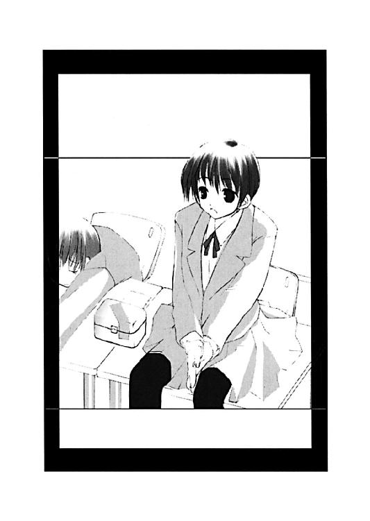
「第一、彼女のために作ってもらったお弁当を、私とはいえ、他の女の子に食べさせるのもどうかと思うよ」
「じゃあ、食べるなよ」
「ま、それはそうなんだけど。これ、美味しいから」
千尋はなんだか矛盾したことを言いながら、さらに次の卵焼きを口にする。
「それにここにいるのも、やっぱりダメだよ」
「......ダメかな」
「うん。ダメ」
「こんなこと相談できるの、千尋しかいないと思ったんだけどな」
「それは嬉しいけどさ。でも、ちょっとおかしいよ。ショーゴ、秋葉より私と話している方が楽だとか思っているでしょ？」
「そうだな。もっと秋葉と話したいのに、上手く話せないって気はする」
「でしょ？ ショーゴはさ、楽な方向に逃げてるんだよ。この間のデートの時だって、そうだったよね。せっかくのデートだったのに、途中で私と合流してからは、私とずっと話してた」
言われて正吾は、秋葉と初めてのデートの日のことを思い出す。土曜日は忙しいってことで、次の日曜日に出かけた二人だったが、たまたま取材のために訪れていた千尋と出会ってしまい、正吾は千尋とばかり話していたのだ。もちろん秋葉と話したくなかったわけではない。でも、なんか話しやすい千尋の方とばかり話してしまっていた。そのせいで、次の日からちょっと秋葉とぎこちなくなってしまった気がする。
「今だってそうだよ。秋葉が仲直りしようと思って、ショーゴのこと探してて、ここに来たらどうするつもり？」
「......そう言われると確かにマズイ気がするな」
正吾には返す言葉もない。確かに千尋が言うように頼る相手を間違っているし、今はそんなことをしている場合じゃないという気がしてくる。
「ショーゴは私に安易に逃避しているんだよ。そりゃ、私はショーゴの友達だし、困っているなら助けてあげたいとは思う。でも、そんなに簡単に頼られるとやっぱり困るよ」
「そうだな......」
正吾は言われて、また昔のことを思い出した。
十月一日のやり直しの途中、千尋は落ち込んでいる自分を励ましてくれた。それを自分は覚えてて、慰めてくれるのを期待してここに来てしまったような気がする。
「まあ、そんなに気にしなくてもいいとは思うけどね。どうせ、ショーゴは直感の人なんだから、あれこれ心配せず、直球で頑張ればそれでいいと思う。秋葉だって、それ以上は望んでないだろうし」
「......そう言われると、俺、すっげー頭悪そうなんですけど」
「あれ、知らなかったの？」
千尋がニヒヒという感じの笑みを浮かべた。正吾はそれで、また考えさせられてしまった。
トーカも同じようなことを言っていた。
正吾は自分らしくあればいい、と。でもそうあることで、秋葉を傷つけ怒らせていいことにはならない気がする。
俺は俺だからそれで納得して欲しい。そう言えれば楽なのかもしれない。でも、それこそ安易な逃避なんではないだろうか？ そんな風にも思えてしまう。
「でもさ、それ言ったら、千尋も逃げている気がする」
「え？」
その時の千尋はなんだか必要以上に驚いて見えた。
「なんで、千尋はずっとここにいるんだ？」
「そりゃ、私は新聞部だから」
「悪いけど、ここはそんなに人が必要には見えないけどな」
正吾は改めて辺りを見渡す。新聞部の発表会をしてはいるが、お客も少なく、堂々とさっきからお弁当を食べてても咎められることもないこの状況。千尋がフルタイムでここにいる必要など到底あるとは思えない。
「千尋は教室にいるとウェイトレスをやらされるのが嫌だから、ここに逃げてるんだろう？」
「そ、そんなことないよ」
露骨に慌てながらそういう時点で、正吾には千尋が噓をついているのがハッキリとわかる。
「なんで、そんなに嫌がるわけ？」
「だって、私は女の子らしくないもん。あんなフリフリのエプロン着て『いらっしゃいませ～』とか愛想を振りまきたくないし」
「そうかな」
正吾はじっと千尋を見つめる。
「な、なに？」
「千尋は自分で言うほど、女の子らしくないことないと思うけど」
「そんなわけないじゃん。そりゃ私は秋葉よりオッパイ大きいし、ウェストも細いけど、なんというか色気がないから。足はメリハリないし」
そう言って千尋は足を振ってその辺をアピールする。
「......そうなのかな。その辺はイマイチよくわからないけど。でも、俺は千尋はエプロンも似合うと思うし、千尋のウェイトレス姿、けっこう見てみたいかな」
「それで、私を笑うつもりなんだ？ ショーゴはけっこう意地悪だ」
「そうじゃなくて、真面目な話だって」
正吾は誉めてるつもりだが、千尋は逆に気分を害したみたいだった。
「そういうのは、秋葉に言ってあげなよ。私に言うことじゃないってば。どうせショーゴのことだから、ちゃんと秋葉のことを誉めてあげないで、怒らせてるんでしょ？」
「そういう言われ方もどうかなって気はするけど、事実かもしれない」
「それにねショーゴはきっと秋葉のことを誤解していると思う」
「え？」
「秋葉はクールに見えるけど、本当はそんなことないんだよ。感情表現が下手なだけで、人一倍、感情的なの。その辺わかってる？」
「わかってると言いきるほどの自信はないな。でもだったら、なんで千尋は学校新聞で付き合ってることを告知したり、今日だってベストスクープ賞の募集で俺たちの写真を使うんだよ。乃木坂さん、嫌がってたぞ」
「だから、いちいち言葉を真に受けるなって言ってるのがわからないかな。秋葉はそうは言ってても、すごく嬉しいに決まってるじゃん。でも、ショーゴがあんまり喜んでいるように見えないから、自分にフォロー入れてるんだよ。ここはそんなに喜ぶところじゃないんだよって」
「......そうなのかな」
聞いてるうちに正吾は今日はひたすらに鈍いヤツだと言われているような気がしてきた。事実、鈍いとは思っていたが、ここまで具体的に指摘されるとさすがにめげる。
「たとえば、美貴。篠崎美貴っているよね。彼女、実はショーゴのこと好きなんだよ。気付いてた？」
「いや、むしろ今日、船堀さんが俺のこと好きだったんじゃないかって、篠崎さんに教えられたくらいだし」
「そう言って、美貴はショーゴの反応を見てたんだよ。どうして、それがわからないかな？」
「そうだったのか......」
正吾はなんだかもうわけがわからなくなってきた。美貴と話してた限りではなんとなく、彼女は貴博のことを好きなんじゃないかと思ってたくらいだった。しかし千尋にそう言われると、実はそうだったんじゃないかという気もしてくる。
「......というのは、まあ噓なんだけど」
「は？」
「いや、言ってみただけなんだけどね。でも、そういう風にあんまり言葉をそのまま真に受けるのもどうかっていう気はする。素直なのはショーゴの良いところではあるけど、あんまり素直すぎるのは逆に残酷な時もあるよ」
「......かもしれない」
正吾はそれ以上話すのは止めて、しばらく弁当を食べることに集中した。千尋はなんだかんだいってもう食べ終っていることに気付いたからだ。しかし千尋は正吾が酷く傷ついたと感じたようだった。それで少し優しい口調に戻る。
「ショーゴ。でも、本当に辛い時は、相談してよね。私はショーゴの数少ない友達だから」
「あ、うん。ありがとう」
正吾は弁当を食べ終えると、それを片づけ、千尋が食べた分も受けとるとその場を後にしようとする。
「元気になるなら、パンツくらいなら見せてあげるからさ」
帰ろうとする正吾に千尋が笑いながらそんなことを言う。正吾はその言葉に、繰り返しの時の中で消えてしまった千尋との会話を思い出してしまう。
「エプロンは着れないけど、パンツを見せるのは大丈夫なんだ......」
「元気になるならって言っただけで、別に本当に見せるかどうかは別だし」
「まあ、それもそうか。で、今日も青と白のストライプなわけ？」
「え、なんで知ってるの？」
「いや、別になんとなくそう思っただけ。じゃあ、ありがとな、千尋」
正吾は赤面している千尋を残して、書道室を出た。
と、その途端、右の視界に一人の少年の姿を感じた。そしてそれを正しいと裏づけるように敵意ある声が響いてくる。
「随分と余裕だな、青山正吾」
そこには少年しかいなかった。四階にはあまり人がいないとは思っていたが、本当に他に誰もいないのは不気味な気がした。さっきまで人がいたはずの新聞部の部室からも、人の気配が消えていた。
だが、少年から受ける印象に変化はない。怒りの表情で彼は正吾を睨んでいる。
「君は誰なんだ？」
「俺のことはどうでもいいだろう？ お前が今、置かれている状況をもう少し考えた方がいい」
「どういう意味だ？」
「わからないようだから、考えろって言ってるんだよ」
少年は正吾に対して蔑んだような笑みを浮かべていた。
「乃木坂秋葉を探した方がいいんじゃないのか？ こんなところで別の女と話している暇があったらさ」
少年が何も答えない正吾へ語りかけ続ける。
少年はなんだか妙に事情に通じているように思えた。やはりさっき考えたように、彼が今回の犯人だからだろうか？ それとも、もっと違う何かなのか？
「誰なんだ、君は？」
考えてみてもわからず、それだけを正吾は尋ねる。しかし少年はまた嘲笑を浮かべるだけで、廊下を歩いて、階段を降りて行く。
「待て！」
正吾は気付いて追いかけるが、四階とはうって変わって混んでいる三階の廊下の人込みへ少年は消えていった。初めて会った時と同じく、どこかへといなくなってしまったのだ。
「本当にあれは誰なんだ？」
正吾は呟きながら、秋葉がどこに行ったのか考えて不安を覚えた。あの少年が探した方がいいと言っていたのも気になる。
まさか、また秋葉も事件に巻き込まれて死んでしまうのだろうか？ その考えが初めて、正吾の心に浮かんだ。不必要に影響を与えたくないと思っていたが、考えてみればその危険性だってあったのだ。
もし秋葉が当事者なら、はっきりと伝えておいた方が良かったはずだ。
双海が今回も犯人かもしれないとは考えたのに、どうしてその可能性には思い当たらなかったのだろう？ 前回の反動でどうこうということを気にしていたのに、今回も死ぬ人間が同じかもしれないという考えがどうして浮かばなかったんだろう......。
正吾はそう考えるとその場に留まっていることもできず、人込みの中をひっかかりながら教室へと走った。
「貴博、乃木坂さんは？」
「いや、戻ってきてねえけど」
貴博は、正吾の真剣さとは対照的にノンビリした表情を浮かべていた。事情を知らない貴博からすれば、ケンカでもしたという程度の考えしかなかったのかもしれない。
「そろそろ演劇部の劇の時間だし、先に体育館にでも行ってるんじゃないのか？」
「......体育館か」
言われて正吾はそうかもしれないと少し思う。しかしあの状況の後、秋葉がのんびり劇を見に行ってると思ったわけではない。
ケンカした場所に秋葉は戻ってきているかもしれない。そう思ったのだ。
「どうしたんだよ、なんかあったのか？」
さすがに自分との温度差を感じたらしい。貴博が心配そうに正吾に尋ねる。
「詳しい事情を話してる時間はないけど、また乃木坂さんが死ぬかもしれないんだ」
「......しゃあねえな。一緒に探してやるよ」
貴博はそんな簡単な説明で状況を理解できたらしい。
「俺は体育館の方に行ってくるよ。乃木坂さんと別れたのは渡り廊下のとこだったから」
「じゃ、とりあえず、そこに行くか」
「ありがと」
正吾たちは教室を抜けだし、階段を降りる。その途中、ちょうど二階の踊り場のところで、船堀樹里子が息を切らして階段を上って来た。
「青山君！」
なんだか酷く興奮しているらしい。しかし彼女の顔は青かった。
「......どうしたの？」
正吾は思わず自分の名前を呼ばれて立ち止まる。だが、貴博はそのまま駆け続けた。
「先に行ってるぜ！」
そんな貴博を見送りながら、正吾は落ち着きを取り戻しつつある樹里子に尋ねる。
「何かあったの？」
「秋葉が、秋葉が連れてかれちゃったのよ」
「誰に？」
正吾は尋ねながら、あの少年のことを思い浮かべていた。ついに嫌な予感が実現しつつあるのを正吾は感じていた。そろそろ、事故の瞬間が近づいているということらしいのがわかる。
頭痛がして、何かを思い出しつつあるのが正吾にはわかった。
「悪魔みたいな格好をした人が、秋葉を連れていったの！」
「悪魔？」
想像していた以上の言葉に正吾は、思わず固まった。
「悪魔だって？」
「ヒラヒラした黒い服を着た人だったと思う。その人が秋葉を捕まえると、そのまま走り出したの。私、追いかけたんだけど、見失ってしまって......ごめんなさい」
「いや、船堀さんが謝ることじゃない。俺が目を離したのが悪かったんだ」
言いながら正吾は安易な慰めを求めて千尋のところに行ったのを後悔していた。千尋が言った通り、正吾は見つからなくても、秋葉をちゃんと探し続けるべきだったのだ。千尋と話しながら弁当を食べている場合ではなかったのだ。
「俺は体育館の方を探してみる。その服は演劇部の衣装なんだ。何か手がかりがあるかもしれない」
「それじゃ私は演劇部の部室の方を調べてみるわ。もし見つからないようなら、そっちに後で来てくれる？」
「わかった。それじゃっ！」
正吾は樹里子と別れると、階段を二段飛ばしで駆け降りていく。一階の廊下はごった返していたが、それでも彼はそのまま体育館を目指した。
「雨？」
外に出てすぐに正吾は天候の変化に気付いた。いつの間にか雨が降り始めている。
天気予報では今日は晴れのはずだった。そんなことを優子と話していたことを思い出す。そしてさらに雨で正吾は思い出すことがあった。
十月一日。事件が起こる前に降ってきた雨。今の正吾にとっては雨は人の死を予感するもの以外の何物でもなかった。
「乃木坂さん......」
正吾は渡り廊下を走りながら小さく呟いた。
秋葉の姿はない。彼女がここに戻ってきていたとしても、今はいるわけもない。誰かわからない悪魔の姿をした人間に彼女は連れていかれてしまったのだから。
貴博の姿ももうなかった。彼はおそらく一足先に体育館に向かったのだろう。そう思って正吾は渡り廊下を駆け抜ける。
「なんだ？」
入っただけで正吾は違和感を感じた。
どんよりした空気が体育館に漂っていた。がやがやとした声が前の方、ステージの奥から聞こえてくる。
と、その時、正吾の後ろでガサリッと音がした。正吾は反射的に振りかえる。
「市ヶ谷先輩？」
渡り廊下の横を一人の少女が走っていくのが見えた。背丈や髪形からすると市ヶ谷一美に見えた。しかし劇が始まる寸前の彼女が制服で、しかも渡り廊下の横を走っている理由はわからない。彼女なら今頃、衣装に着替えて劇の準備中のはずだ。
「人違いかな」
不気味な不安が正吾を捕えていた。とりあえず一美らしき少女のことは忘れて、正吾は声のするステージの奥へと駆け出した。
すでに体育館は劇を見るための客を迎える準備が終りつつあった。パイプ椅子が整列されていて、客が来るのを待っている。しかし正吾には劇が始まりそうな気はしなかった。
何かを思い出しかけているのかもしれない。劇が中止されることになったのを、正吾は知っているんじゃないかと思う。
そして何がここで起こっているのかを正吾は思い出せるような気がしてきた。
はっきりと覚えていないが、正吾には最初の十一月十三日の記憶があるはずだった。
「......何が起こってるんだ？」
思い出せないが、何が起こっているのかを知る時間は確実に迫っているのがわかる。
ステージの袖の部屋へと通じる扉は開いていた。遠目にもそこに随分とたくさんの人が集まっているのがわかる。
人だかりの手前の方に貴博の姿が見えた。
「どうして？」
近づくと、誰かのそんな声が聞こえた。
「なんで、こんなことに......」
そんな声も聞こえた。声はかすれ気味で、泣いているらしいことが正吾にはわかった。
「貴博、何があったんだ」
部屋に飛び込んだ正吾は、質問の答えを聞くまでもなく状況をある程度理解できた。
むせ返る臭い。それは正吾があの運命の十月一日に何度か嗅いだ臭いだ。
人の血。しかも生半可な量ではない出血をした時に漂う臭いだ。それを嗅いだだけで口の中に鉄の味が充満したような気分になる。
「まさか......」
正吾は集まっている演劇部員をかき分けて臭いの中心を見るために進んだ。
何があるのか正吾は知っていてもおかしくなかったはずだ。だが、今はそれを見て確かめるしか方法はなかった。
「乃木坂さん？」
正吾は思わずその名を呼んだが、倒れていたのは秋葉ではなかった。
背の高い長髪の少女が倒れていた。演劇部の女帝と言われた広尾景子だった。
演劇のための舞台装置が倒れて彼女を下敷きにしたらしい。
舞台の背景用の裏に組んであった工事現場の足場のようなものが崩れてバラバラになっていた。さらにその上に乗っていただろう小道具の数々も散乱している。
広尾景子はその下で大量の血を流していた。木目調の床板の上に血が溢れていた。
「広尾先輩......」
正吾はその事実に気付いて、自分がなぜ一美と景子が言い争っている場面を気にしていたのかやっと理解した。
そして、どうしてこうなるのを止められなかったんだろうと思う。自分は知っていたはずだ。なのに、気付かずこういう結果を選んでしまった。それが正吾には許せなかった。
これこそ、ただの事故なのだ。景子がたまたま崩れるところにいたのが不幸だっただけなのだ。それをどうして止めることができなかったのか......。
「あれ......？」
だが、正吾は不意に目の前の光景に違和感を覚えた。
倒れている景子の手が不自然に開かれていた跡があった。
何かを握りしめていたらしい。倒れてきた何かを摑んでいたのだろうか。いや、それにしては拳は強く握られていたように見える。
「......正吾。乃木坂は見つかったのか？」
貴博の声が聞こえた。正吾を追いかけてきたらしい。すぐ側まで彼は来ていた。
「いや、見つかってない」
「そうか」
貴博は何か言いかけて、口をつぐんだ。それから正吾をその場から連れ出す。貴博は現場を離れたのを確認すると、改めてさっき言いかけたことを口にした。
「乃木坂じゃなくて良かったな」
正吾は素直にはうなずけない。確かに死んだのが秋葉ではなくてほっとしたのは事実だったかもしれない。でも、だからって景子が死んだのを喜ぶ気持ちになどなれない。
それに、トーカの言葉を思い出せば、まだこれは始まりに過ぎないのだ。
「あと、二人死ぬかもしれないんだ。一人は俺だから、もう一人、誰かが......」
正吾はそう言うと、ふと一美のことを思い出す。景子が死んだ現場には一美はいなかった。ということは、さっき入口のところで見たのは本当に一美だったのかもしれない。
「貴博、市ヶ谷先輩はどこにいるんだ？」
「一美？ 一美がどうかしたのか？」
「いや、さっき渡り廊下の横を走っていったのが見えた気がしたんだ......人違いだったかもしれないけど」
正吾はさっきはさほど気にしなかった一美らしき少女の後ろ姿を思い出していた。それを聞いた貴博は何か少しだけ考えて、それで短く答えた。
「きっと人違いだろう」
「それじゃ市ヶ谷先輩はどこにいるんだ？」
「一美は......たぶん、双海ちゃんを探しているんだと思う。今朝からずっと姿が見えないって気にしてたみたいだったし」
「そうか、そうだったよな」
言われてみれば、確かにそのとおりだという気がする。さっきの場所にも双海はいなかった。朝からずっとどこにも彼女がいないというのも気になるといえば気になる。
しかし正吾はそんな貴博とのやりとりに違和感を覚えていた。なぜか、貴博が噓をついている。そんな気がしてしまう。
「そんなことより、乃木坂は？」
貴博が思い出したように、そのことを口にする。
「船堀さんが言ってたんだ。乃木坂さんが悪魔の格好をしたヤツに連れてかれたって」
「どういうことなんだ？ この間の事件となんか関係あるのか？」
「関係ある......ような気がする」
なんかの偶然では済まない。そんな気分が正吾を支配していた。
「とにかく、乃木坂さんを探さないと」
「そうだな」
そして正吾と貴博は校舎の方へと戻った。
秋葉の姿も悪魔の姿も校舎のどこにも見つからなかった。
正吾はその不気味な悪魔の存在に、あの少年のことを思い出していた。彼は、まるで他の人間には見えていないかのようだった。怒りの視線を放つ少年が不思議と秋葉を連れ去った悪魔の姿と重なった。
──どういうことなんだ？
正吾の心は焦るばかりだった。理解できないことが多すぎる。
行方不明なのは秋葉だけではない。一美も双海もどこにもいない。あの不思議な少年ももうどこにもいない。
文化祭という特別なイベントの最中だからだろうか。正吾は次第にそこが本当に通い慣れた校舎なのかすら怪しく思えてきた。
「誰かいるのか？」
階段を上り終えたと思った時のことだった。さらに上の方から物音がした。正吾は思わず強い口調でその音の方へ声を上げていた。
「......誰かいるなら、返事をしろっ！」
貴博が隣で身構えるのを感じた。誰かいるのは確かなようだ。貴博もそれを感じているらしいのが伝わってきた。
屋上へと通じる階段。屋上への扉は閉まったままだし、途中には机が積まれていて上れないようになっているはずだった。そんなところに人がいるのは、いかにもおかしい。
が、いるのは確かだった。正吾は貴博と目配せをするとそのまま階段を上った。そんな変なところにいるとすれば、何か後ろ暗いところがあるヤツだ。
今、自分たちが探している人間だったりするのかもしれない。
「誰かそこにいるんだろ？ いるんなら返事をしろ！」
影が机の向こうを動いた。人影だ。確かに誰かいるらしい。それに気付いて、貴博が右に行くと手で合図をした。正吾は左から行くことに決める。
「返事をしろ。しないなら、力ずくで引っ張り出させてもらうぜ」
貴博が改めて強い口調でそう告げた。途端、弱々しい声が返ってきた。
「もしかして赤井さんですか？」
「そうだけど......」
そう言いかけて、貴博は思い当たる人間がいたのか急に肩の力を抜いた。正吾も気付き、必要以上の緊張を解く。
「双海ちゃんなのか？」
「あ、はいです」
影の主は双海だった。声にはおびえた調子は混じっているが、誰かに捕まっていたりするというわけではないらしい。単に、貴博や正吾の声がおっかなかっただけのようだ。
「なんで、そんなところにいるんだ？」
貴博が机の下を抜けて、双海のところへと向かう。正吾もそれを追いかける。
その間、双海の返事は聞こえなかった。こんなところで何をしているのか、双海は答えたくないらしい。
「......それはその」
言いよどんだ声が聞こえるだけだった。
「一緒の人は青山さんだったんですか」
机の下を抜けてやってきたのが正吾だと気付いて双海がそう言った。声には少し安堵の色が混じっているような気がした。
机の奥の広いスペースに出ると、双海がはっきりと見えた。普段よりもずっとおどおどしていて、なんだかさらに小さく見える。それにどこか印象が違うと正吾はすぐに気付いた。
「髪形、変えたの？」
「......あ、はい」
普段は両脇で髪を縛っているのに、今日の双海は後ろで髪を縛っていた。まるで一美と同じ髪形に見える。
「ところで一美、見なかった？」
貴博が双海に尋ねる。双海は黙って首を横に振る。
「見てないです」
「じゃあ、広尾先輩が死んだのは知ってる？」
「え？」
貴博の言葉に少し震えていた双海は急に固まったように動かなくなった。
「広尾先輩、舞台装置の下敷きになって死んだんだ。きっとそのうち、校内放送で流れると思うけど」
貴博が言葉を続けるが、傍目にも双海には何も聞こえてないという感じだった。信じられないという驚きに双海は固まったまま身動き一つしない。
「双海のせいですか？」
双海の口が動いて、そんな疑問を投げ掛けた。
「双海のせいなんですか？」
質問ではなかったのかもしれない。その答えを求めているわけでもないのかもしれない。双海は急に動き出すと、何も聞きたくないと全身で示すように手で耳をふさぐ。
「双海が殺したんです。先輩がお姉ちゃんをいじめるから......」
「何言ってるんだよ、双海ちゃん」
衝撃の発言が理解できず、それでも貴博が彼女に手を差し伸べようとする。しかし気付いて、双海は慌ててその手を払う。
「......双海ちゃん？」
貴博の顔に疑惑の色が浮かぶ。
「双海ちゃん？」
正吾も、双海に話しかけるが、彼女はじっと正吾の方を睨むだけだった。その瞳には涙がにじんでいた。
単に感情的になっているだけなんだろうか？
それとも彼女が言う通りなのか？
そもそもなぜ双海はここにいて、隠れていたのか？
また新しい疑問を抱えて、正吾の頭は混乱を始める。
「正吾。双海ちゃんのことは俺に任せてくれ」
そんな正吾に気付いて貴博が呟いた。
「お前は乃木坂を探さないとならないんだろ？」
「......でも」
「この間は俺はあんまり役に立てなかったけど、今回は任せてくれよ。それにやっぱり乃木坂を助けに行くのはお前の仕事だろ？」
言われて正吾は貴博から双海の方に視線を移し、また貴博の方に戻す。
「わかった。そうさせてもらうよ」
そして正吾はまた机の下を抜けて階段を降りる。
どこを探せばいいのかわからないと悩んだ時、正吾は思い出した。樹里子が演劇部の部室で待ち合わせようと言っていたことを。
見つからなかったら、とりあえずそこで待ち合わせようと彼女は言っていた。ちょうど四階まで来ていたので、正吾はそこに向かうことにした。今日はただの倉庫と化しているはずの、演劇部の部室である美術室へと。
「......あれ？」
樹里子は部室の前にはいなかった。
演劇部員ではない樹里子が中に入れたりするものだろうか？ そんな疑問が浮かぶ。しかし入れたのだろうとすぐに気付いた。
扉が少し開いていた。どうやら鍵はかかっていないらしい。誰か部員が何かを取りに戻ってきていたのかもしれない。
しかし、だからって中で樹里子が待っているというのは不自然な気はした。
待ち合わせるのにわざわざ視界の悪い奥まった所を選ぶだろうか？
単に来るのに時間がかかったから、樹里子は痺れを切らして自分だけで他のところを探しに行ってしまった。そう考える方が自然という気がした。
「どういうことなんだろう」
また新たな疑問を正吾は感じながら扉に手をかけた。演劇部が使うことを考えて、扉のガラス窓の部分には黒い厚紙が貼ってあり、中は覗けないようになっている。
正吾は扉を開けようとして、腕が動かなくなるのを感じた。
何かまた嫌な予感がする。それはあの十月一日、神社の敷地で扉を開こうとした時の感覚に似ていた。
この先で自分が死ぬ。それが正吾にはなんとなくわかった。今回がそうなのかはわからない。前回、きっとここで自分が死んだのだ。それを記憶は忘れてしまっていても、恐怖として心が思い出したのを感じる。
「じゃあ、乃木坂さんもここで死ぬのか？」
動かない手の代わりに頭と口が動いた。だが、その質問には正吾の心は揺れなかった。何となくそうでないと知っているような気がした。
じゃあ、誰が死ぬのだろう？ 新たな疑問が浮かぶ。秋葉でないなら誰が......。
「市ヶ谷先輩か......」
そう呟いて一美、そして貴博のことを正吾は思い出す。体育館からどこかに消えた一美。彼女が演劇部の部室に戻ってきている可能性は十分に考えられた。
そう思うと体が動いた。
「市ヶ谷先輩！」
そして叫んでいた。一美がそこにいるものだと思って。
「うわっ！」
扉を開けた途端、黒い影が上から降ってきた。その影の中に悪魔の笑顔を正吾は見た。
「......なんだ？」
しかし、ただの衣装だった。だが、今の正吾にとっては悪魔の抜け殻のようにさえ思えた。
「なんでこんなところに、これが......」
頭上に落ちてきた衣装をどかして広がった視界。正吾はそこに想像してなかった光景を見た。
少年が血を流して死んでいた。あの自分に怒りの視線を投げていた少年が血まみれで、うつ伏せに倒れている。おびただしい流血だった。傷は首元だろうか？ いずれにせよ一美の時とは比較にならないほどの大量の血が床を染めていた。
「船堀さん？」
そして部屋にいるのはその少年だけではなかった。部屋の奥に一人の少女が縛られて座らされていた。目は布で覆われ、目隠しをされている。
「青山君？」
少女が自分の名前を呼んだことで、正吾はそれが船堀樹里子だと確信する。
「一体、何があったんだ？」
正吾は樹里子の背中から上へ伸びる縄の存在に気付いた。それを追いかけるように視線を走らせると、縄は天井へと伸びており、天井の一点から壁の方に置かれたロッカーへと繫がっている。よく見れば、縄だけでなく透明な糸が天井に張り巡らされていた。さっき悪魔の衣装が落ちてきたのも、扉へと繫がった糸に仕掛けがあったらしい。
「......ここで待ってたら、悪魔の格好をしたヤツがまたやってきたの」
樹里子の言葉はたどたどしかった。その時の恐怖を思い出しているからだろうか？ 貴博や正吾をこき使っていた毅然とした口調はどこにも感じられない。
「私、ここに縛られて......そしたら誰かが入ってきたと思ったら、私に気付いて悪魔の格好をしたヤツと取っ組み合いになったみたい」
正吾はその言葉を聞いて、状況を想像する。
そこで取っ組み合いをするべきだったのは、自分だったのかもしれない。そんな考えに捕らわれた。どこかで時間が狂ったせいで、この誰かわからない少年が代わりに死んでしまうことになったのかもしれない。そんな気もした。
樹里子の言葉も途中で止まっていた。それは正吾が何も言わないからかもしれない。しかしそれ以上に、少年が死んだのを想像して続けるのが怖くなったんだと正吾は感じる。
「船堀さん。今から助けるから」
せめてもと思って正吾が部屋に足を一歩踏み入れる。だが、樹里子はその気配を感じて慌てて大声を出した。
「青山君、入ってこないで！」
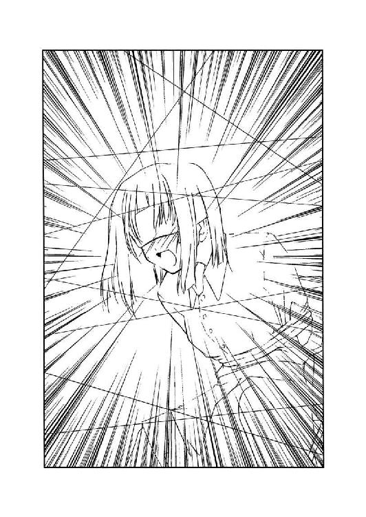
真剣さが樹里子の声にはあった。それで思わず、正吾は足を止める。
「......え？」
「悪魔がなんか仕掛けを残していったみたいなの。私を助けようとしたら、作動するって言ってた。だから、入ってこない方がいいと思う」
樹里子の声は震えていた。正吾はそれを聞いて、誰かを呼びに行った方が良いだろうか、とも思った。
一人で悪魔の残した仕掛けに立ち向かうのは無理があるかもしれない。糸や縄に秘密があるのはわかるが、ざっと見ただけではどんな仕掛けなのかはわからない。
「......でも、なんとかやってみるよ」
正吾はしかし意を決して部屋に入ることにする。それに気付いて樹里子がまた止める。
「止めて、青山君まで死んじゃうわ」
「死ぬかもしれない。でも、俺のせいでもう二人も人が死んだ。自分の命を惜しんでいる場合じゃないんだ」
「......青山君？」
樹里子には正吾が何を言ってるのか理解はできないだろうと思った。
だが、そんなことは今気にしている場合ではない。もし、この少年が自分の代わりに死んだのなら、三人目に死ぬのは自分ではなくて、船堀樹里子ということになるのかもしれない。
それだけは、なんとしても食い止めなければいけない。正吾はそれを強く思う。
このまま広尾景子と名も知らぬこの少年を死なせたまま終るわけにはいかない。もちろん船堀樹里子まで死なせるわけにはいかないのだ。
「死ぬなら俺が死ねばいいんだ。俺のせいなんだから」
そう口にすると体の震えが止まるのを感じた。見えない糸にひっかかることのないように慎重に正吾は歩く。
「青山君？」
正吾の足音が聞こえたのに不安を覚えたのか、樹里子が正吾の名前を呼ぶ。
「大丈夫、君は助けるよ」
心配する彼女を励ますように極力、自信を持って語りかける。しかし頭の中ではどうすればいいのかと正吾は考えていた。
「来ないで。来ちゃダメよ！ 青山君、死にたいの？」
「死なないで済むならそれでもいいんだけど、そうも言っていられないんだ」
悪魔は何を残していったのか？ それは部屋の中に入ってもわからなかった。それでも正吾はゆっくりと樹里子のところへと歩き続ける。
その距離が三メートルくらいまで近づいた時だった。静かだったその部屋に音が響いた。それは広尾景子の死を告げる校内放送だった。
正吾からすれば、すでに知っている内容だったが、それでも注意がそっちに逸れた。
「広尾先輩が？」
小さな呟きが聞こえた。樹里子の声だろう。正吾の注意が彼女の方へと戻った。
途端、どこかで小さなプツリという音が聞こえた。最初は気のせいかもしれないと思う。だがすぐに実際の出来事だとわかった。
樹里子の背中から伸びていた縄が緩むのが見えた。それに合わせてガタンと右と左から音が聞こえてきた。
「な？」
何が起こっているのか正確に把握することは正吾にはできなかった。わかったのは、急に視界が暗くなったということだ。
何かが頭上から落ちてきた。それはわかった。
正吾だけに限ったことではなかった。目の前の樹里子の頭上へも黒い影が落ちていくのが見える。
「船堀さん！」
思わず叫んで身を固めたが、正吾は右上から強い力を受けて膝が折れた。だがそれを確認する間もなく今度は左からも圧力を受ける。
「ぐっ」
床に叩きつけられる衝撃に思わず声が漏れた。仰向けに引き倒された。視線の先に見えたのは五つの不気味な影だった。それが見る間に大きくなっていく。
それから思わず目をそらしたからだろうか。視界の下の方に樹里子が見えた。正吾は倒れたまま、樹里子の頭上に降った荷物が彼女の頭にぶつかるのを見ていた。見ていたという程の長い時間ではなかったのかもしれない。
しかしはっきりと見えた。
荷物の重みが彼女の首をおかしな方向に曲げた。目隠しをされて縛られたままの彼女に避ける術があるはずもなかった。
正吾は、また叫ぼうとしたが途中で途絶えた。
倒れていた正吾もまた、落下してきた荷物を避けることはできなかった。
一つ、また一つと荷物が降ってきた。一つは正吾の足を砕き、もう一つは彼の左手を砕いた。さらに降ってきた荷物は彼の内臓を破壊して、次は彼のろっ骨を砕いた。
声も上げることができなかった。だが、そんな必要もないのはすぐにわかった。視界全体を覆うようにもう一つ降ってくるのが見えたからだ。
そして次の鈍い音とともに、正吾は十一月十三日の二度目の死を体験した。
○
「......かなり、ショッキングな死に方だったな」
暗い劇場の中で正吾は目を覚ました。座り心地の悪い椅子に座っているのを感じることができた。どうやら、またあの世界に戻ってきたらしい。
この間は刺されてじわりじわりと死んだ。痛みはあることはあったが、むしろ意識が遠のいていって死んだ。だが今回はかなり突然にプツリと意識を途絶えさせられる死に方だった。
正吾は椅子に座ったまま、体を順番に動かした。砕けたはずの足も左手も動いた。内臓もろっ骨も痛くない。もちろん、顔面には傷もない。
だが服がボロボロなのは、一回目の前にここに来た時と一緒だ。
なるほど、こんな死に方だったからか。それを正吾は理解するが、やはりあまりいい気分とは言えなかった。
それでも正吾は立ち上がり、この不思議な世界を改めて見回す。
何も変わらないままの劇場。見回す途中、正吾はステージ左の袖の視線の主が、あの少年だろうと理解した。確かめようとも思ったが、その必要をあまり強くは感じなかった。
「大丈夫、正吾クン？」
トーカはまたステージにふわりと降りてきた。彼女が現れると、この世界は明るくなる。
「......まあ、なんとか」
「今回はちゃんと覚えているみたいだね」
「まあ、忘れたいという気持ちもかなりあった気はするけど......」
正吾は苦笑しながら、激動の『今日』のことを回想する。
色々わからないままの一日だった。正直、何が疑問だったのかすらよく覚えていない。細かい疑問はショックで忘れてしまった。そんな気もしていた。
「結局、乃木坂さんはどうなったんだろう？」
自分の死のショックが抜けると、正吾はそのことを思い出した。
連れさられた秋葉。彼女を見つけられないまま、自分は死んでしまった。それに気付いて、正吾の心は沈んでいく。
双海の時もそうだった。自分は秋葉に対して一番優しくしないといけない。そう思っているのに、気付くと目の前のことで頭がいっぱいになっている。
樹里子のことにしても、誰かに任せて、正吾は秋葉を探しに行くべきだったのかもしれない。そうすれば正吾があそこで死ぬこともなかったし、樹里子を死なせることもなかった。そんな気がした。
「俺ってなんでこうなんだろうな。乃木坂さんが怒るのも当然だよな」
「でも私は船堀さんを見捨てるような正吾クンは好きになれないと思うよ」
トーカが正吾の考えを読んだようにそう呟いた。
「それで死んじゃうのはまずかったかもしれない。でもお姉ちゃんだって船堀さんを見捨てて自分を助けに来たって知ったら悲しむんじゃないかな。お姉ちゃんは根っからの委員長だから」
「そうかな......」
トーカの言葉はなんとなく意外な気がした。彼女がそんな意見らしい意見を言うのもなんか驚きを感じた。
「前にも言ったけど、正吾クンは正吾クンらしくやってくれればいいと思う。正吾クンの良いところは、思ったことをまっすぐ実行できることだと思うから、私が信じて期待している部分はそこだから」
「それは千尋にも言われた」
正吾は苦々しくそれを回想する。それでトーカも少し暗い表情を見せた。
「俺は直感の人だから考えるよりもまず行動した方がいいんだみたいなことを」
「それはそうだと私も思うよ」
トーカはまた笑ってみせる。
「でもさ、やっぱり市ヶ谷先輩とかの方が良かったんじゃないかな」
「大丈夫だよ。正吾クンはちゃんとやれるよ。あんまり根拠はないけど、できると思う。今は無理でもまだ二回チャンスがあるんだから」
「今回はさすがにでも自分の鈍さが嫌になったって気はするんだよな」
正吾はいたたまれなくなり、トーカから視線を外す。しかしトーカはそんな正吾の視線の前へと入り込んでくる。
「正吾クンは鈍い自分が嫌い？」
「嫌いというか、そうでなければなあって思う」
それが正直な気持ちだった。でも、そうでない自分を想像することはできそうにない。
「大丈夫だよ、正吾クンは」
「え？」
「ちゃんとなれるよ。正吾クンは自分の望む自分になれるよ。それは私が保証する」
「......鈍くない俺になれるってこと？」
「それはどうかはわからないけど、きっとなれるよ。正吾クンは自分の望む自分に」
「それってどういう意味なのかな？」
どうもトーカの話が読めない。正吾はそれで彼女に聞こうとするが、トーカはそれにはすぐに答えず、指を天に向かって伸ばした。
「すぐには無理だけど、きっとその意味も正吾クンはわかるよ。だから、正吾クンは正吾クンらしく頑張って！」
トーカはそう言って、また扉を指さした。また扉が揺れて、帰る準備ができたことを正吾に告げる。正吾はそれを確認するとうなずいてトーカの方を見た。
「頑張るよ、今度こそ」
正吾がノブに触れると、また壁と床が崩れて空へと上っていく。正吾はその中でまた闇へと落ちていく。どこまで続くかわからない闇へと。
「正吾クンらしく頑張って......か」
正吾の気持ちは周りの景色が闇だけに染まっていくのに対して、少し明るくなったような感じだった。それがトーカの言葉のおかげだったのかは、正吾にはよくわからない。それを確かめようにも正吾にはもう十分な時間はなかった。
そして正吾の意識は闇に溶けるように、この世界から消えてなくなった。
第二章 それでも、下敷きになる俺
目が覚めると、当たり前だが膝が痛かった。
寝ている間に伸びようとしていたせいなんだろう。正吾は布団に入ったまま、どうしたものだろうかと思う。
──自分らしく頑張る
なんだか簡単なようで酷く難しいことを求められているような気がする。
もっとも、一美のような知性を自分に求められても困るのは事実なので、そういう意味ではまだ楽なのかもしれない。
幸運なことに時間はたっぷりとあった。六時過ぎに目覚めることができるのは、もう変わらない自分の『運命』なのだ。学校へ行くまでに、準備できることは色々とありそうだった。
だが、いざとなると何をどうすればいいのかはわからなかった。できるはずでも、やる意志がなければ、方法を思いつかなければ、なんの役にも立たないことを正吾は思い知らされる。
「......とりあえず、起きよう」
うとうとしてきたので、このまま眠ってしまいそうだった。それで正吾は慌ててベッドから抜けでて、伸びをする。それから気合いを入れるために、顔を三回叩く。
「で、どうするかな？」
一階で物音がするのが聞こえた。優子が起きて朝食の準備を始めようとしているらしい。気付いて正吾は気持ちを切り替えて、階下へと降りる。
「もう寝てるし......」
居間に入ろうとして正吾はすぐに気付いた。優子は正吾が降りてくる間にもう寝ている。
正吾はその光景を見ながら、この間とは少し状況が違うことに気付いた。
この間は少なくとも家を出るまでは他人の運命に干渉する機会はなかったが、今回はもうすでに機会に恵まれているのだ。
「とは言え、優姉に何か頼んでもなあ......」
どうも優子に頼んだ方が良さそうなことというのはなさそうだった。
あるとすれば「お昼はいらないから」と頼んでおく（？）くらいのことかもしれない。
「テレビはつけない方がいいのかな」
優子はテーブルの上で寝ていた。頭の寝癖が跳ねている具合まで同じである。
正吾はすでに天気予報を見る必要もなかったし、と気付いてテレビをつけるのは止める。当りもしない天気予報など見る必要はない。今日がどういう天気なのかは正吾はちゃんと知っている。
晴れ後雨。ということは......そう考えて、上手く事故を回避したとしても、秋葉と約束したキャンプファイアーはお流れになってしまいそうだと正吾は気付く。
「参ったな」
いくら運命を変えるチャンスを与えられていても、別に超能力があるわけではない。
天気を変えるのは無理だ。できるのは実際に体験した『今日』を覚えておくというくらいで、しかも少々記憶力には自信がないのだから、なんとも頼りない。
「あれ、正ちゃん、どうしたの？」
テレビはつけなかったが、優子は途中で目を覚ました。どうやらテレビではなく、トースターの音で目を覚ますのが優子の運命であるらしい。
「どうしたのも何も、学校に行かないといけない時間だから朝ご飯を作ってたんだけど」
正吾は記憶の通りの言葉を優子に告げる。もっとも時間的にはずっと早いはずだった。しかし優子は前回同様、寝ぼけた顔で半開きの口からよだれをたらす。
「優姉、よだれ」
正吾は言いながらも説明してもわかってもらえないことを思い出し、優子のために台所から布巾をとってくる。あまり手順を省略しない方がいいのかもしれないが、当事者でもない優子の運命なら少しぐらい変えても、すぐに元通りに戻るんじゃないかという気もした。
「あらら、ごめんなさい。私、ちゃんと目覚ましはかけたんだけど、ここに来たらまた眠くなっちゃって......」
案の上、前回同様の展開になる。正吾はそれを確認し呆れた感じで呟く。
「まあ、その辺は見ればわかったけど」
それから、これも前回同様、このタイミングで彼女に焼き上がったパンとコーヒーを渡し、彼女の向かいの席に座った。
「ごめんなさいね。正ちゃんの朝ご飯作るために呼ばれてたのに、私の分まで作ってもらって」
「まあ、いいよ。別にパン焼いてコーヒーを入れるくらい自分でもできるし」
「それは、まあそうなんだけど」
この辺も全く同じだった。正吾は、これをもう一回やるのかと思うとちょっと何だか間が抜けているなあと感じる。どこまで忠実にやる必要があるのかは正直わからない。
そんなことを考えていると優子は少し寂しそうな顔をして、それからまた睡魔に襲われて寝はじめてしまう。
正吾はそんな優子を見て、一回目の己の失敗を思い出した。この時、優子にシャワーを浴びるようにと言ったせいで、なんだか朝からつまずいてしまったような気がする。なので、このまま様子を見ることにした。黙っていれば、また優子は寝てしまうかもしれない。
「正ちゃん、ここで寝てもいい？」
いかにも眠そうな顔で優子が尋ねてきた。
「部屋に戻って寝たらいいんじゃない？ 朝ご飯のことなら俺は自分でできるし」
「そうねえ。そうしようかしら」
優子はそう言ってフラフラと立ち上がろうとする。
と、そこで正吾はさっき考えていたことを伝え忘れていることに気付いた。
「あ、そうだ。お昼はいいから」
「......あら、どうして？」
ゆっくりと、なんだかゾンビみたいな動きで優子が振り向きながら尋ねる。
「彼女と焼きそばでも食べようかなと思ってるから」
「ああ。なるほど」
優子は振り返ったのとは逆の動きで正面を見ると歩き出そうとするが、不意に立ち止まって、それでも面倒なのか振り返らず、話を始める。
「そうか今日は文化祭なのよね」
「ま、そうだけど」
「それで、正ちゃんは後夜祭で彼女とキャンプファイアーを一緒に見るって約束なのね」
寝ぼけてはいるが、なぜか前回と同じ話題を優子は始める。これもまた運命の為せる業なのかもしれない。
「乃木坂さんって言ったっけ？」
どうも順番は違うが、それでも全部言わないと気が済まないらしい。正吾は黙って、優子が全部言うのを待つことにする。こっちが言わなければ途中で終るんじゃないかという考えもあったが、そうでもないらしい。
秋葉の外見やら、恋は素敵だとか、結局、全部一人で優子は話してしまう。こうなると、自分が前回話していたことはそもそも何だったんだろうという気持ちになる。
（つまり俺はいてもいなくても、優姉はこの話をするってことなのかな）
自分の存在意義について改めて考えさせられてしまうが、正吾は気分を入れ替えて優子にもう一度寝ることを提案する。
「話はその辺にして、もう寝たら？」
放っておいても動きそうにないので、正吾は優子を寝室に使っている母親の部屋まで連れていった。
「それじゃ、おやすみ、正ちゃん」
○
八時五分前。
秋葉が来るのは八時三分前だった。正吾は手早く朝食の片づけを済ますと、自分の部屋に戻り着替えて、また階下へと降りて待っていた。
時間はあったが、あまり進展はなかった。急いで学校へ行って戻ってくるというのも考えたが、鍵が開いてないかもしれないと気付いて、それも止めてしまったのが原因かもしれない。
「そろそろかな？」
居間の時計を見ると、八時三分前になろうとしていた。正吾は玄関の扉を開けて外に出ようとする。
すると、まさにチャイムを鳴らそうとしていた秋葉がいた。
「正吾クン？」
「おはよう。そろそろ来る頃かなと思ってたんだ」
正吾は驚く秋葉に向かって笑う。
「え？」
驚いて短く呟くだけの秋葉。正吾はさらに、そんな秋葉に一言告げる。
「コンテスト制服、似合ってるね」
「ええ？」
そんな風に驚く秋葉は、明らかに照れているように見えた。
「......そういうのは正直に言わなくてもいいと思います」
ちょっと不満そうに秋葉がいうのが聞こえた。彼女は正吾の後を歩いている。正吾はといえば、少し横を見るような感じで小走りに学校に向かっている。
正吾はここまでの道のりで、秋葉にトーカにまた会ったこと、そしてこれが二度目のやり直しであることを告げていた。正吾がタイミング良く飛び出してきたのは、素敵な偶然ではなく、知っててわざとやっただけということまで話したのは蛇足だったかもしれない。
「それじゃ、この制服のことも本当はなんとも思ってなかったりするのかな」
ちょっとしょげた風に秋葉が呟く。正吾は慌てて立ち止まって、フォローを入れる。
「本当に似合ってると思ってるよ。一度目は上手く言葉にできなかったけど、今回はちゃんと言えたし、来年からそれが正式な制服になると嬉しいかな」
「来年......でも、クラス替えになったら、私たち離れてしまうかもしれませんね」
「だとしても、一緒に学校に行くことはできるし、それになんとなくだけど、きっと同じクラスなんじゃないかって気がする」
「同じクラス。だといいですね」
秋葉は小さく笑った。今日の秋葉はなんだか随分と表情が多い。正吾はそう感じた。もしかしたら、ちゃんと見てなかったから見逃していただけなのかもしれないが。いずれにせよ、秋葉が笑ってくれたので、正吾も釣られて笑ってしまう。
「いいよね。そうなるといいよね」
それから正吾はもう少しペースをあげようと秋葉に提案する。
「もう少し急ぎたいんだけどいいかな？」
「どうしてですか？」
「朝、未然に防ぎたい事件が二つ起こるんだ」
「事件......ですか？」
トーカに会ったということはそういうことなんだと秋葉はそれで思い出したようだった。
秋葉はうなずくと、バッと駆け出す。正吾も負けまいと走ることにする。
駅前のロータリー辺りまで来ると、普段より早い時間なのに、やはり学生が多かった。
文化祭当日ということで皆、気合いが入っているというのがわかる。一回目とは違うそんな空気を感じながら正吾は秋葉と一緒にゆっくり歩いている生徒たちを追い抜いていく。
「楽しいですね、こういうのも」
生徒達の一団を十分に離したところで、秋葉がそんなことを呟いた。
「乃木坂さんは、走るの好きなの？」
なんかマズイことを言ったらしい。秋葉の顔が急に曇る。
「......走ること自体はそんなに好きじゃないですけど」
「でも、なんか楽しいってのはわかる。俺もなんか楽しいし」
「ですよね」
正吾は秋葉の返事を確認すると、またもう少しペースをあげた。前方にお目当ての人間を見つけたからである。
「千尋！」
歩道橋のところで、小走りで歩く千尋に追いつく。
「ショーゴ、どうしたの？」
走って追いかけてくる正吾と秋葉に気付いて、千尋は歩道橋の上で二人が来るのを待っていた。それで正吾はちょっとペースを落として秋葉の方を見る。
「大丈夫ですから」
「ま、もう目的は達せそうだから、これ以上は急がなくてもいいかな」
正吾はそれでゆっくりと階段を上る。秋葉がそれでも辛そうだったので、彼女の鞄を受け取ってそれで千尋と合流した。
「わざわざ呼び止めて何事かと思ったら、秋葉との仲むつまじさのアピールとはショーゴもなかなかに侮れない感じだね」
千尋はやっと追いついてきた二人を確認すると、そう言ってまた歩き始める。
「そういうわけじゃないんだけど」
「で、なんの用？」
「用というのは、ベストスクープ賞の話だ」
いきなりその単語が出てきて千尋はあきらかな動揺を見せる。漫画なら後ろに大きく「ぎくりっ」とでも書かれるシーンのような顔をしている。
「......な、なな、なんのことかなあ？ 私には身に覚えがないんだけど」
「露骨に動揺しながら、それでもとぼけられると思っているあたりが甘い」
「く、なんか今日のショーゴは鋭い」
悔しさを覚えながらの独り言。秋葉が気付いて、尋ねる。
「ベストスクープ賞ってなんの話です？」
千尋が言葉につまる。正吾はそれを見て取って自分で説明することにする。
「新聞部が文化祭での出来事を写真に撮ってくださいって募集するつもりなんだ」
「それぐらいは普通だと思いますけど」
「で、その見本写真に、千尋は俺と秋葉のデートの時の写真を使うつもりなんだ」
正吾の言葉に秋葉も千尋も別の理由ではあったが動きが止まった。
「ショーゴがなんでそれを知ってるわけ？ これは新聞部のトップシークレットなのに」
先に動いたのは千尋だった。
「当事者に黙って勝手にことを運ぶなよ」
「別に良い写真なんだし問題ないと思うけどな。二人が付き合っているのはもう周知の事実なんだし、今更何も問題ないでしょ？」
「だったら、せめて確認しろよ。っていうか、周知の事実にしたのはそもそも誰だ？」
「いや、あの時はちゃんと秋葉には確認とったし」
「『俺がいいと言ったらいい』と言った場合は、俺に確認とって初めてＯＫだって......」
「そうとも言うけど、結果オーライってことで、今回のこともオールライト」
「じゃあ、昨日頑張って作ったビラ五十枚たちはどうなるのよ。せっかくの活躍の場を与えられず、このまま腐っていけばいいって言うの？」
「五十枚も刷ったのか......」
正吾が呆れ果てて黙ったところで、秋葉がやっと思い出したように動き始める。
「いいんじゃないですか、別に」
「え？」
「私は別に構いませんけど」
「いいの？」
それを確認して俄然、千尋は元気になる。というか偉そうになる。
「ショーゴこそ、ちゃんと確認した方がいいんじゃない？ 秋葉はいいって言ってるよ」
「でもさ......」
「私は真鶴さんに応援してもらってるみたいで嬉しいかな。ちょっと恥ずかしいとは思いますけど」
秋葉がそんなことを言うと、正吾としてはこれ以上は言いがたい。それを確認して千尋はニヒヒと笑いながら、さらに釘を刺す。
「数少ない友達として、彼女との仲を応援してあげている私の気持ちがわからないなんて、ショーゴって友達甲斐のないヤツだよね」
「......それは、どうにも信じがたいんだけど」
「あ、そんなこと言うんだ。私、傷ついちゃうぞ」
「......それも怪しい」
「だって秋葉、どう思う、この態度？」
千尋は笑ったまま、秋葉に尋ねる。
「そうですね......ちょっと素直じゃなくて可愛いかもしれませんね」
「だってよ、ショーゴ」
「......わかりました。好きにして下さい」
正吾は観念して肩を落すと改めて歩き始める。
この件はどうやらヤブヘビだったらしい。でも、もう一件の方はなんとかしなければいけない。それは確かな気がした。
「そう言えば、あと一件っていうのはなんなんです？」
そんな正吾の態度に気づいて秋葉が尋ねてくる。
「市ヶ谷先輩と広尾先輩のケンカを止める」
「......そんなのいつものことだと思うけど」
千尋がそう茶化すが、秋葉は逆に真面目な顔をする。
「また、市ヶ谷先輩が死ぬんですか？」
「今度は広尾先輩の方なんだ」
二人の真顔トークに、千尋もさすがにふざけている場合ではないらしいと気付く。
「それって、この間の時みたいな話？」
「そう。広尾先輩と俺と船堀さん、それに見知らぬ少年が死ぬんだ」
「見知らぬ少年って誰？」
「いや、知らないから見知らぬ少年なんだけど......」
正吾がそう言った時、秋葉が言葉を挟む。
「正吾クン、今回は四人死ぬんですか？」
「え？」
「広尾先輩に正吾クンに船堀さんに、その少年。四人ですよ」
「おかしいな、トーカは今回も三人死んだから三回だって言ったのに......どういうことなんだろう？」
「それはきっと、こういうことじゃないかな？」
千尋がそう言ってまた話題に加わってくる。
「ショーゴがドジだから、やり直したら死ぬ人が増えた」
「......うぅ。そう言われると否定しきれない自分が辛い」
「詳しいことはわからないけど、その少年ってのがなんか変な気がする。無関係な人間が巻き込まれて死ぬのはちょっと違うんじゃないかな」
「それはそうかもしれない」
とはいえ、この間も一美と自分がどれほど関係あったのかは正直、正吾にはわからなかった。
友達の彼女。なんとも微妙な距離だ。それで良いなら、他の人でも十分に関係あると言えないこともないような気がする。
「いずれにせよ、とりあえず広尾先輩と市ヶ谷先輩を探すのが先ですね」
悩んでいる正吾に秋葉はそう指摘する。
「渡り廊下のところでケンカするはずなんだけど」
そう正吾が呟くと、千尋がカメラを取り出し、なんだか嬉しそうに走りだす。
「千尋、ケンカを止めるんだぞ！」
「......そうだっけ？」
なんか違う目的があったらしい。正吾は呆れながらも、走って千尋を追い抜くと学校へと向かった。それに千尋と秋葉が続いた。
「なんか、こういうの楽しいよね」
後ろの方で千尋が笑っている声が正吾に届いた。
○
「時間的には、まだ大丈夫なはずなんだけどな」
正吾たちが校門をくぐったのは、なんだかんだで八時十五分頃のことだった。
「じゃ、私はビラ貼りの仕事があるから」
千尋は大丈夫らしいという気配を知ると体育館の方ではなく、昇降口の方へ駆け出した。まあ、それが普通といえば普通の行動なのだが。
「......千尋のヤツ、逃げたな」
「逃げたって、どういうことです？」
「千尋はエプロン着るの嫌でずっと部室にこもるつもりなんだよ」
「そうなんですか」
ちょっとうつむき加減に秋葉がそう呟く。
「どうしたの？」
「いえ、別になんでも」
「何でもないなら、なんでうつむくの？ 俺、鈍いから言ってくれないとわからないよ」
「......正吾クンは真鶴さんと仲がいいなって思っただけです。悪口言ってるのに、それが悪口に聞こえないのが、なんだか悔しくて」
秋葉の言葉に正吾はちょっと驚いてしまった。そもそも秋葉がそんなことを言い始めたことも意外な気がしてしまう。
「悔しいって、どういうこと？」
「さっきもそうだったじゃないですか。真鶴さんが傷ついちゃうぞって言っても、正吾クンはそれを否定したりして。私はそんなこと言われたら、大変なこと言ったとパニックになってしまう。そんな気がするんです」
「そうなのかな。俺、千尋が本当に傷ついたりするとは思えないんだよ。いや、まあ本当に泣かれたり怒られたりしたことないだけで、実は傷ついているのかもしれないけど。だから、ああは言ってても、そんなことないのかなって」
「そういうことを自然にできる関係なんですよ、正吾クンと真鶴さんは」
正吾はなんとなく秋葉が何を言わんとしているのかわかる気がした。
「乃木坂さんは俺とそういう関係になりたいのかな？」
「それは、どうなんでしょう？」
「俺は乃木坂さんと俺はそういう関係になりたいとは思ってないけど」
「え？」
「千尋も言ってたけど、俺と千尋は友達なんだ。だから、そういう自然な関係は友達だからだと思う。俺は乃木坂さんとは友達になれなくてもいいと思ってるんだけど」
「......そうなんですか？」
「彼氏彼女の関係なんだから、別に友達のようになる必要ないと思う。そう思ってるのは俺だけかな？」
「いえ。そうですよね」
秋葉は改めて「彼氏彼女」という言葉を使われて戸惑った様子を見せる。
「友達と同じじゃ、逆に哀しいよ、俺は」
「そうですよね」
秋葉がゆっくりとそう言ったかと思うと、不意に驚きの表情を浮かべた。
「一美さんがいますよ」
秋葉の指した方を見ると、体育館の方から渡り廊下に一美が出てこようとしていた。それを確認すると正吾は慌てて一美のところへと向かう。
一美はそんな二人に気付いたのか、少し歩くスピードを上げたみたいだった。
「市ヶ谷先輩！」
「どうしたの、二人とも真剣な顔をして」
「隠れて下さい」
「は？」
「隠れて下さいっ！」
「なんで？」
「あと数分すると広尾先輩がここに来るんです。台本のことで、市ヶ谷先輩とケンカになるんです」
「また、なんか巻き込まれてるってわけ？」
一美はそれだけで状況を察したようだった。
「はい」
「でも、なんで私が隠れないといけないわけ？」
「......そんなこと言わずにお願いしますよ」
「冗談よ。青山君には双海を助けてもらった恩もあるしね」
一美はくすりと笑みを浮かべると踵を返して体育館に戻ろうとする。
「にしても、あの人から逃げないといけないのは屈辱だわ」
「......あの、先輩？」
「大丈夫よ。ちゃんと隠れるから」
一美はそう言うとさっそうとした足取りで体育館へと走り去った。
「大丈夫かな？」
「大丈夫じゃないですか？ 一美さんが失敗するところとか想像しづらいし」
「それはそうか」
正吾はそれで納得すると昇降口の方へと向かった。
「広尾先輩がこっちに来るみたいですね」
「間一髪って感じだな」
「何か忠告した方がいいんですか？」
「どうだろう？ 広尾先輩とは面識ないし、上手く説明できそうな気がしない」
「......そうですね」
それで二人は結局、何も広尾景子には告げず、教室へと向かうことにする。
（でも、死ぬのは広尾先輩なんだよな。何か手は打たないとだな......）
そう思って景子を見ると、彼女がキョロキョロと辺りを見渡していることに気付いた。
「何してるんだろう？」
「え？」
「広尾先輩、なんだかキョロキョロしているけど。まさか市ヶ谷先輩をわざわざ探しているってわけじゃないだろうし」
「普段から......仲が悪いというわけでもなさそうですけど」
二人は景子との距離が随分と縮まってしまったことに気付いて、いったん会話を止めてやり過ごす。景子はといえば、そんな二人の存在を知ると、急に堂々と前を向いて歩き始めた。
「......なんだったんだろう？」
景子が離れたのを確認して正吾はまた話を始める。
「そう言えば、もう犯人はわかってるんですか？」
しかし秋葉にそう言われて、正吾はそっちの方へと思考が移った。
「いや、全然。わかってるのは、悪魔の格好をしたヤツが犯人ってこと」
「前回と同じですね」
「それはそうなんだけど、だからって双海ちゃんが犯人ってことはない気がするんだよな」
「市ヶ谷さんとは話したんですか？」
「いや、あんまり。一回目はどこにいるのかわからず、結局、ろくに話せなかったから」
「そう言えば、さっきもいなかったですね」
「さっきいなかったのは、乃木坂さんのせいかもしれない」
「え？」
「双海ちゃん、乃木坂さんのエプロンを届けに教室まで来たらしい。と言っても、俺は少し遅れたのでその時は会えなかったんだけど」
「あ、そういう意味ですか」
「でも今日の双海ちゃんが変なのは確かなんだ。市ヶ谷先輩のところからずっと離れているんだよ。その理由も謎のまま」
「演劇の発表のための集中を邪魔しちゃいけないと思ってるとか？」
「市ヶ谷先輩の性格を考えると、そういう気はしないな」
もちろん双海がそういう気持ちだという可能性は捨てられない。しかし結果だけ見れば、一美は双海を心配してしまっているのだから、むしろ逆効果だろう。
「......それはそうですね」
双海が一美の側を離れる理由。そんなのがそうそうあるとは思えない。二人はそれからじっと考え、黙ったまま昇降口に入り、教室へと向かった。
○
「遅いよ、秋葉っ！」
クラスメイトの出迎えは一回目と同じだった。
若干タイミング的には早かったはずだが、それはあまり関係なかったようだった。階段を上り終えた辺りで、樹里子に話しかけられるのは運命のようだった。
「ごめんなさい。ちょっと寄り道してて」
「青山君が寝坊したんでしょう？ そうじゃなきゃ、秋葉がこんなに遅れるわけないもんね」
その後の秋葉と樹里子のやりとりは全く同じだった。やはり自分が干渉しない限り、運命は元の通りになろうとする性質があるらしい。
「まさか秋葉が寝坊ってことはないだろうしね。ダメだよ、青山君、あんまり秋葉に迷惑をかけたら」
そして正吾が知っている通り、篠崎美貴が正吾に笑いかける。だが、正吾が黙っているのはそこまでだった。口を開いて、運命に干渉することにする。
「遅れたのは乃木坂さんの格好に理由があったりして」
たったの一言で、結果はかなり変わるらしい。正吾の言葉でクラスメイトの視線が秋葉に一気に集まった。
「あ、そういえばっ！」
樹里子が驚きの声を上げる。
「秋葉、今日はコンテスト用の制服じゃない」
「彼氏のために、そんなサービスまでするんだ、秋葉は。ちょっと意外かも」
美貴がちょっと口をとがらせて、でも笑みを浮かべながら、秋葉の方を見る。秋葉はなんだかひどく照れたみたいで、うつむいて何も言えなくなってしまったようだった。そんな様子を美貴は見ていて、正吾の方へと視線を向ける。
「青山君も、なんだかんだでちゃっかりしてるよね」
「なにが？」
「普段はぼ───っとしているのに、秋葉みたいなかわいい娘を捕まえたりして」
「......それは誉め言葉かな？」
「うーん。どっちだろう」
美貴がなんだか微妙な笑顔を浮かべたところで、樹里子が秋葉に質問する声が聞こえた。
「秋葉は、青山君のどの辺が気に入ったわけ？」
「え、ええ？」
「それは私も知りたいなあ」
美貴もその話題に加わる。正吾もそれは聞きたいと思ったものの、不意に嫌な予感に取り憑かれた。そういえば、なんかこのタイミングで秋葉が自分を評していたような気がする。
「えっと......鈍いところかな」
運命のいたずらだろうか。秋葉がそう答えて、クラスメイトたちはそれで一斉に笑いだし、正吾は苦い顔をするしかなかった。
「鈍いところが好きだったのか......」
正吾はその時、自分を見ている視線に気づいた。笑われる対象へ向けられる視線ではない。強烈な憎悪を孕んだ視線。それはあの謎の少年の視線だった。
──なんで、もうこんな時間にいるんだ？
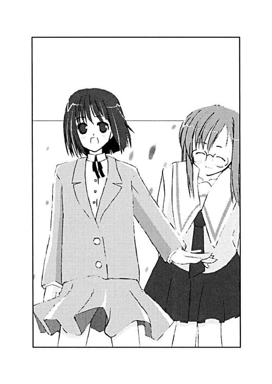
右の視界の隅に彼の存在を感じて、正吾は驚き、思わず振り向いてしまう。しかし少年はさっさとまたいつものように階段を降りて姿を消してしまった。
正吾はそれで一回目の時のことを思い出す。あの時、すでにあの少年はいたのだろうか？ いなかったような気がする。しかし、いなかったとしたら、どういうことなんだろうか？
それにこの時間に、すでにそこにいたというのが、なんとも不気味だった。この学校の生徒ではない彼がなぜ、すでにいるのか......。
「なんかすごい真剣な顔してるよ、青山君」
正吾のそんなシリアスな思考に反して、クラスメイトはやっぱり笑い続けていた。
○
「まだ笑ってるし」
正吾は笑われながら、皿を洗い続けなければならないという理不尽に耐えねばならない状況を強いられていた。
「ごめんなさい。でも青山君の顔を見ると、どうしても......」
船堀樹里子との裏方の作業は前回に比べれば、随分と笑いのある環境に変わっていたと言える。もっともそれが自分への笑いという点で、より快適になったのかというと疑問の残るところではあるのだが......。
「しかし乃木坂も笑わせるよな。彼氏の好きなところ聞かれて、鈍いところだもんな」
貴博が笑いながらコーヒー豆を挽いている。
「......ちくしょう。今度、市ヶ谷先輩に貴博のどの辺が好きなのか聞くぞ」
「一美がそんな質問に答えるわけないじゃん」
「それはそうかもしれない」
正吾は話題が落ち着いた辺りで、改めて樹里子のことを考えた。
樹里子に本当のことを言うべきだろうか？ このまま放っておいたら彼女が死ぬことをしっかりと伝えるべきだろうか？
その判断の根拠を求めて、正吾は一回目の出来事を思い出す。
樹里子は本当のことを言って信じてくれる人間だろうか？ その質問にはイエスとは言いがたかった。まだ必要以上に、このことを話すべきじゃないという気持ちもあった。それで正吾は、どうして樹里子が巻き込まれるに至ったのかを思い出す。
樹里子が巻き込まれたのは、秋葉が連れていかれたのを探してくれたからだった。ということは、秋葉が連れさられない状況さえ作れば大丈夫なんじゃないだろうか......そんな気がした。そう気付くと、大切なのは樹里子に事実を告げることではなく、その元から断つべきだという気がしてくる。
それから、また正吾は前回のことを思い出して、少し先手を打つことにする。
「そう言えば、船堀さん」
「なに？」
「ありがとう」
「何のこと？」
「いや、船堀さんがこうして裏方を引き受けてくれたからさ、乃木坂さんが表でウェイトレスをしてられるのかなって思ってさ」
正吾のそんな言葉に樹里子はかなり面食らった様子を見せる。
「青山君がそんな風に考えていたなんて、かなり意外」
「俺も意外だな」
貴博も樹里子の尻馬に乗る。
「貴博。時々、お前は本当に友達なのか心配になるよ、俺は」
「でも、そうやって改めて言われると、ちょっと嬉しいかな。別に誰にわかってもらうって気はなかったけど、少なくとも一人は理解してくれる人がいたってことだし」
樹里子は正吾の方へ微笑みかける。いつもキツイことを言っている彼女には似つかわしくない表情だったかもしれない。そんなことを思った途端、急に意地悪い表情へと変化する。
「でもさ、そんなに油断してると危ないかもよ」
「え、どういうこと？」
「市ヶ谷さんが持ってきてくれたエプロンとびっきり可愛いし、秋葉は他の人に狙われちゃうかもしれないじゃない」
「......それは考えてなかった」
正吾が顔を引きつらせると、樹里子と貴博がまた笑い始めた。その笑いの意味を正吾は理解して、また振り出しに戻ったという気がしてしまう。
「どうせ俺は鈍いですよ」
「......まあ、そんなに気にしなくても。少なくとも、皿洗いは素早いみたいだし」
「あんまり嬉しくないなあ」
正吾はブツブツと言いながら、とりあえず目の前の皿を片づけ終える。
「ちょっと出かけてきていいかな？」
「なんか用があるの？」
「ちょっと双海ちゃん......市ヶ谷さんに会いに行きたい用があって」
「エプロンのお礼？」
「まあ、そんなところ」
「赤井君はどう思う？」
樹里子は判断に苦しんだのか、貴博の方に質問をする。
「まあ、いいじゃねえの。俺もコーヒー豆はもう飽きたし」
正吾は貴博の言葉を聞くとさっさと行動を開始する。
「じゃ、あとよろしく」
そう言って出かけようとしたところで、正吾はふと一回目のことを思い出した。それでコーヒーを沸かしているポットの取っ手の部分を見る。
「どうしたんだよ、正吾？」
そんな行動に貴博が気になったのか尋ねてきた。
「この取っ手が取れかけているから、直しておいた方がいいんじゃないかなと思ってさ」
言われて樹里子が、確かめるようにポットを持ち上げる。取っ手がぐらついていて、何かの拍子にとれてしまいそうになっている。
「青山君って、妙なところで鋭いのね」
樹里子がポットから正吾の方へ視線を向けて不思議そうな顔をしていた。
「......それは普段は鈍いってこと？」
「まあ、そうなるかな」
樹里子はそう言いながら、ポットを机の上にゆっくりと置いた。
「じゃあ、俺は出かけてくるから」
正吾はそう言って一度教室を裏から出ると、また表から入り直す。出かける前に、秋葉の姿を探しておいた方がいいと思ったのだ。
「乃木坂さん」
見つけて呼びかけると、秋葉はトレイを持ったまま正吾の方へと駆けてくる。
そんな彼女を追いかける客の視線に気付いて、正吾は樹里子の言っていたことも冗談とも言いきれないかもしれないと思ったりもした。
「どうしたの？」
「今からちょっと双海ちゃんのところへ行ってくる。すぐに戻って来れると思うけど、お昼は一緒に行きたいから待っててくれるかな？」
「あ、それは大丈夫。二人とも午前中で一応仕事は終わるし、一緒にご飯食べようと思ってたから。でも、お弁当とか作ってくれば良かったですね」
「いや、いいよ。せっかくのお祭りなんだから、あんまり美味しくない焼きそばでも一緒に、『本当にまずいなぁ』とか言いながら食べたいし」
正吾が本当にまずそうな顔をしたのが面白かったのか、秋葉が笑みを浮かべる。
「そうですね。でも市ヶ谷さんの居場所わからないんでしょ？」
「きっと屋上への階段のところにいると思うんだけど......違うかな」
「なんの話？」
二人の会話が気になったらしく、美貴が割り込んでくる。
「青山君、屋上への扉は閉まってるよ」
「それは知ってるけど、ちょっと用があってね」
「用ねえ。秋葉みたいな可愛い彼女をおいてでかけるなんて、なんとも、のっぴきならない感じだけど」
美貴はそう言って秋葉の方へと視線を移す。秋葉は自分に話題が振られたと気付いて、少し考えてからこんな風に答えた。
「私、正吾クンのこと信じてますから、色々な意味で」
「色々な意味で？」
正吾と美貴は二人して疑問を浮かべるが、秋葉は逆に変なのかと思ったようだった。
「変ですか？」
「ちょっと変かな、やっぱり......」
○
「双海が殺したんですか？」
状況を説明した後、双海が言ったのはそんなことだった。
双海は正吾の予想通り、一回目の午後にいた場所にいた。しかしまだ午前中の十一時過ぎだと考えると、彼女はほとんどずっとといっていい程、この場所にいたということになる。
「俺はそう思ってないけど......。でも双海ちゃんが自分でそう言ったのは事実なんだ」
「でも、そうなのかもしれないです」
双海が小さく震えるのが見えた。正吾は屋上へと続く扉の前、階段のところに双海を座らせ、自分もその横に座った。
「なんで、そう思うのかな？」
「双海は大事なお姉ちゃんを殺そうとしたから、憎い広尾先輩なら本当に殺してもおかしくないと思うんです」
「......本当に？」
「そう言われると双海はわからないです。でも、殺したかもしれないって思うと、そうじゃないって言えないです。だから、きっと殺したんです」
双海は泣きそうな顔をして、小さく小さく呟きを繰り返す。それはまるで何かの呪文のように正吾には聞こえた。
「双海ちゃんは、夢で天使を見たのかな？ トーカって名前の小学生みたいな天使なんだけど」
正吾はいたたまれなくなり、少し話題を変えてみた。すると、双海は不思議な顔をして正吾の方を見返した。
「双海はトーカなんて天使は見たことないです」
「え？」
「双海が見たのは、エイミって名前の天使です。その人はお姉ちゃんみたいに大人っぽい優しい天使でした」
「エイミ......？」
言われて、正吾はそういえばと思い出す。トーカと話している時に、時折、なんだか電波を受信しているみたいな顔をしていたことがあった。あれは他の天使と交信していたんじゃないかと思ったのだ。それに考えれば、トーカが自分のところに来ている以上、双海のところには別の天使がいっていたと考える方が自然のような気がする。
「でも、とにかく天使が夢に出てきたのは確かなんだね？」
「はいです。エイミって天使で良いなら、夢に出てきたです」
そうハッキリと断言されて、正吾はちょっと考えてしまった。
トーカの言葉を信じるなら、今回も他の天使に呼び出されている人間が犯人ということになる。そして双海が呼び出されていたのなら、それは双海が犯人という結論にしかならない。
「やっぱり、双海が殺したんですか？」
正吾がどうしようと考えてる姿に、双海はさらに不安を覚えたらしい。はっきりと正吾がそう考えていると感じたのかもしれない。双海は今にも泣きだしそうな顔をしている。
「そうかもしれない。トーカや天使たちがなんで双海ちゃんを犯人と言ってるのかはわからないけど、夢に出てきたのなら、それは双海ちゃんが犯人ということだと思う」
正吾は双海を見ながらハッキリと告げた。途中で双海は驚き、そしてうつむいてしまう。それでも正吾は双海の方を見て続ける。
「でも、それはあくまでやり直す前の話だから」
「......どういう意味ですか？」
「もし双海ちゃんが広尾先輩や船堀さんを殺したとしても、もう殺させないから。だから大丈夫だよ。それをなんとかするために、俺はトーカに呼び出されたんだし」
正吾にそう言われて、双海はまた正吾の方を見るように顔を上げた。
「青山さんは、どうしてそんなに双海に優しくしてくれるんですか？」
「え？」
「この間もそうだったですけど、双海にはどうして青山さんに優しくしてもらえるのかわからないです」
「この間って......だって......」
そう言いかけて、正吾は自分が大きな勘違いをしているのに気付いた。
それは二度目のやり直しの十月一日の時と同じパターンだったのかもしれない。一度目のやり直しの時に一美と話したせいで、正吾はうっかり彼女と知り合いだと思い込んで話しかけてしまった。考えてみれば双海とまともに話をしたのは二度目のやり直しの時だけで、三度目の時はろくに話をしていない。
「そうか。だから双海ちゃんはあの時、かばわれる資格がないって言っていたのか......」
「青山さん？」
「俺、双海ちゃんと話してたつもりだったけど、双海ちゃんにはその時の記憶がなかったんだよね。なんで気付かなかったんだろう？」
「どういうことですか？」
「俺は二度目の十月一日の時、双海ちゃんと話したから、俺は友達のつもりでいたんだ。双海ちゃんも、それを否定することを言ってくれなかったから、ずっと勘違いしてた」
「二度目の十月一日ですか？ それも覚えてないです。双海はきっとそうやって色々忘れて自分を誤魔化している弱虫なんです」
「そうかもしれない。でも、双海ちゃんがそうやって不安を感じているのは悪いことじゃないと思う。それに、これはトーカからの受け売りなんだけど、きっと双海ちゃんは変われると思う。ちゃんと望んだ自分になれると思う」
「......双海には無理そうです」
「大丈夫だよ。さっきも言ったけど、俺はそのためにトーカに呼び出されたんだと思うし、双海ちゃんはちゃんと変わっていると思う」
「そうですか？」
「最初の十月一日は、市ヶ谷先輩と俺と乃木坂さんを双海ちゃんは殺してた。でも最終的には、誰も殺さないで今日まで来たんだ。それまでの双海ちゃんじゃない。だから、今日だってきっと変えられるよ。一度目は、広尾先輩も俺も死んじゃったけど、もうそんなことにはさせない」
「でも、それは全部、青山さんがしたことです。双海は何もしてないです。そんな双海が変わるなんて思えないです」
双海はまたうつむいた。正吾は哀しげな彼女の姿にしばらく言葉につまってしまう。
「双海、この間、お姉ちゃんに味方だって言われて嬉しかったんです。でも、後で考えたら、なんだかすごく哀しくなったんです。世界中を敵に回してもお姉ちゃんは双海を守ってくれる。でも双海はそんなお姉ちゃんに何ができるですか？ 双海は守られるだけで、お姉ちゃんの敵を増やすことしかできないですか？ そんな双海が守られる価値があるですか？」
「双海ちゃんにだってできることはあるよ」
「......そんなこと何もないです」
双海はうつむいたまま涙を流し始めたらしかった。たどたどしかった口調がさらに怪しくなっていく。
「双海には何もできないです。青山さんやお姉ちゃんみたいに、何かできるなんて信じられないです」
「双海ちゃんは、乃木坂さんのエプロンを作ってくれた。少なくともそれは確かだと思う」
「え？」
「乃木坂さん、双海ちゃんのエプロンを着てすごく嬉しそうだった。それってすごくいいことだと思うけど、それは双海ちゃんにとってはできることには入らないのかな？」
言われて双海は泣いたままの顔を上げて正吾の方を見た。しかしその目は赤く涙が溜まっていて視線が合っていないようだった。
「本当ですか？」
「俺はこんなことで噓なんて言わないよ。あんまり正直にものを言いすぎるんでクラスメイトに笑われてるくらいだし」
「そうですか。じゃあ双海が頑張ったのは無駄じゃなかったですね？」
「うん。それは俺が保証するよ」
「良かったです。本当に良かったです」
双海はそう言うとまた泣き始めた。でもそれは哀しみの涙ではなかったようだった。
「すごく眠かったんです。赤井さんに頼まれたから頑張ったですけど、乃木坂さんのことよく知らないし、途中でどうでもいいじゃないかって思ったりもしたんです。でも、頑張って良かったです」
「双海ちゃん、また一つ頼んでいいかな？」
「なんですか？」
「何か具体的な行動はしないでもいいから、信じて欲しいんだ。もう大丈夫だって。具体的な行動は全部、俺がするから。普段は鈍くて何もできないから、こういう時には頑張らないとだめだしね」
「青山さんがそう言うなら、そうしてみるです」
「ありがと」
正吾はそう言うと立ち上がって、改めて双海の方を見た。双海はその視線に気付いて正吾の顔を見つめる。
「なんですか？」
「いや、考えてみると全部、双海ちゃんのおかげなのかなって今、気付いた」
「どういう意味ですか？」
「俺、双海ちゃんを助けるために頑張ってたんだな。その結果、貴博と友達になれたし、乃木坂さんと付き合うことになったんだなって」
「......ありがとです」
「え？ いや、感謝するのは俺の方だよ。ありがとう、双海ちゃん」
そして正吾は双海が元気を取り戻したのを確認すると、その場を離れようとする。
「元気出してね」
「はい、元気出すです」
そしてそんな言葉に送られて、机の下を抜けた時だった。正吾の頭上から声が聞こえた。
「お前はどういうつもりなんだ？」
それはあの少年の声だった。相も変わらず怒りの視線が正吾を睨んでいる。
「ど、どういうつもりって？」
「そんなこともわからないヤツに話す言葉はないな」
「......なんなんだよ。本当に何言ってるかわからないんだけど」
正吾はそう言いながら机の下を抜けると立ち上がって少年の方を見る。元の背の高さの違いもあって、少年の顔はずっと下に見える。
「説明したって、鈍いお前にはわからないよ」
少年はそう言うと踵を返して、走り出した。飛ぶように階段を降りる。正吾は追いかけるが少年の方が断然早かった。あっという間に見失ってしまう。
「一体、あれは誰なんだ？」
これだけ度々、自分の前に現れる以上、単なる偶然の一言で解決するのは難しい気がした。運命の仕業と思おうにも、彼の登場の仕方はいつも違っているように思える。
「どういうことだ？」
正吾はそこでふと改めて少年が奇妙な存在であることに気付く。
さっき確認したように、今回も犯人は双海のはずだ。しかもその自覚が弱い。ということは事実上、意識的に運命を変更できるのは、今は自分しかいないということになる。なのに、なぜあの少年はことごとく予想外の行動をしているのか？ もしかして最初に感じたように、何か特別な存在なのだろうか？
「いや、でもそれならトーカが何か言ってくれてもいいはずだよな」
「正ちゃん、トーカって誰？」
「トーカっていうのは......」
言いかけて、正吾は不意に自分の思考に割って入ってきた相手の存在に気付いた。改めて考えるまでもなく、横を向くとそこには優子が立っていた。しかもどうも手に弁当を持っている。
「......優姉。なんでここにいるの？」
「正ちゃんのクラスに行ったら、正ちゃんなら理由はよくわからないけど、屋上に上る階段にいるはずだって言われたから」
「篠崎さんの仕業か......というか、なんでお弁当持ってるわけ？」
「ほら、朝ご飯作ってあげられなかったから、お昼ぐらい作ろうかなって、お弁当を持ってきたんだけど」
優子の言うことを聞いているうちに正吾は意識が遠くなって卒倒しそうになっていた。
「お昼ご飯はいらないって言わなかったっけ？」
「あら、じゃああれは本当のことだったの？ 夢の中で言われたような気はしたけど、起きたら布団の中だったから、やっぱり夢かなとか思ってたの」
「優姉......今度は書き置きを残すことにするよ」
「そうしてくれると助かるかも」
そんな優子の返答に、正吾は自分の鈍さは一族にかけられた呪いか何かではないかとさえ思ってしまう。しかし正吾は次の瞬間には自分は他の呪いもかけられてるんだろうかと疑う羽目になってしまう。
「正吾クン、その人は？」
秋葉だった。どうやら、いつまで経っても帰ってこないので心配になって来てくれたらしい。しかし何にせよ、間が悪い。
（一回目もこうなったし、こういうタイミングで優姉が来るってのが運命なのか......）
どうしていいかわからず混乱する正吾。そんな正吾に代わり、普段は動きの鈍い優子が事情の説明を始めたりする。
「私は正ちゃんのためにお弁当を持ってきた......」
「優姉。勘弁してくれよ」
「正ちゃん、私、もしかしてまた何かマズイことしたかしら？」
「......かなりね」
状況が飲み込めないままの秋葉に正吾が改めて、優子を紹介する。
「この人はここの卒業生で、俺の従姉妹。高島優子さん。俺の姉さんみたいな人だと思ってくれればいいと思うんだけど」
そんななんとも苦しい感じの正吾の心境など少しも気にせず優子は秋葉に挨拶する。
「どうも高島優子です。あなたが正ちゃんの彼女の乃木坂さんよね」
「あ、はい。乃木坂秋葉です。秋の葉っぱと書いて秋葉です」
「秋葉。素敵な名前ね。正ちゃん、乃木坂さんのこと、乃木坂さんってしか言わないから、下の名前は初めて聞いたみたい」
「そう、なんですか......」
秋葉も優子の独特なペースには翻弄されているみたいだった。それに気付いたのかどうかはわからないが、優子が持参した弁当を秋葉に渡す。
「これ、二人で食べてもらおうと思って持ってきたから食べてね」
秋葉は渡されたお弁当がどうやら二人分だと気付いて当然の疑問を口にした。
「あの、優子さんの分は？」
「ないみたいね」
「みたいねって......」
「優姉はこういう人だから、いちいちツッコマなくてもいいからさ」
たまらず正吾はそう言うと秋葉の手を取る。
「優姉。お弁当、どうもありがとう」
「あ、ありがとうございます」
そして正吾たちは優子を置いて階段を駆け降りていく。
「あの人、放っておいていいんですか？」
「たぶん。というか、普段からある意味大丈夫じゃない人だしな......」
「それって......」
秋葉はそれ以上何も言えずに黙った。仕方なく話題を変える。
「このお弁当はどうするんですか？」
「後で食べよう。今はちょっと気になることがあるから」
「気になることってなんです？」
「さっき、また例の謎の少年に会った。双海ちゃんと話し終えて階段を降りようとしたら出てきて、追いかけたら逃げた」
「そういえば市ヶ谷さんの方はどうだったんですか？」
「どうやら今回も双海ちゃんが犯人らしい。ただ、やっぱりこの間と一緒で自覚はないらしいんだ。でも、もう双海ちゃんが誰かを殺すことはないと思う」
「ということは、その少年は犯人じゃないってことですよね？」
「それはそうなんだ。一回目の時には死んでたし、犯人ってことはないとは思うんだけど......でもなんか行動が変だ」
「そうですね。なんで、その少年はそんなに自由に行動できるんですか？」
「わからない。双海ちゃんが自覚がない以上、意識的に運命を変えられるのは、俺しかいないはずなんだけどな」
「じゃあ、その少年が犯人なんですか？」
「でも、双海ちゃんが犯人なのは間違いなさそうだし」
正吾は一階まで降りると辺りを見回すが、やはり少年はどこにもいそうになかった。
それでふと気になって体育館に向かうことにした。まだ時間ではないが、考えてみれば広尾景子を助けるための作戦は何も立てていなかったのに気付いたからだ。
「......あいつだ」
進んだ渡り廊下の先で正吾は、例の少年を見つけた。正吾の言葉に気付いて秋葉もそれを目で追う。
「どこですか？」
「今、体育館に入った」
「よく見えなかったですけど」
秋葉は少年の姿をはっきりとは見られなかったらしい。正吾はそれで、少年を改めて不思議な存在だと感じた。まるで、自分だけが彼の存在を感じているような、そんな気分にすらなった。
「なんで、よりにもよって、体育館にあいつは向かったんだ？」
その疑問を口にすると、正吾は自分の脈が激しく打つのを感じた。
これは偶然だろうか？ なぜ正吾の知らないところで、こんなにも予想外の出来事が起こるのだろうか？
時計を見るとお昼を少し過ぎていた。この時間、一回目は正吾は秋葉を探し回っていた気がする。その間の少年が何をしていたのかは正吾は知らない。だから、そう感じるだけだろうか？ しかしそれにしては奇妙だ。
あの後、千尋と別れて新聞部の部室を出たところで、少年と出会った。体育館と新聞部の部室にどんな関係があるというんだろう？ 彼はなんのために行動しているというのだろう？
考えてもわからないまま、正吾は体育館へと急いだ。いずれにせよ、事故現場に誰かが近づくのは避けた方がいい。そんな気がしてた。
「青山君、双海を見なかった？」
体育館に入ってきた正吾を見つけてやってきたのは一美だった。
「双海ちゃんは、校舎の方にいましたよ。屋上への階段のところに」
「......なんでまた、そんなところにいるわけ？」
「わかりません。聞くの忘れました。というか、ここに中学生くらいの男の子が入ってきませんでしたか？」
「青山君は、その条件に入りそうな気がするけど」
「先輩......」
「いや、さっきから人の出入りは多いし、私にはなんとも言えないけど」
一美はそう言いながら改めて館内を見渡す。ゲームのしすぎで視力が低下している正吾よりは頼りになりそうな感じだが、それでも少年の姿は見つからないようだ。
「その子が今度の犯人なの？」
「違うとは思うんですが、なんだか奇妙な存在みたいで......」
正吾がちょっと事情を説明しようとした時、秋葉が驚きの声を上げた。
「もしかして、あの子じゃないんですか？」
言われて正吾が秋葉の指さす方を見る。そこには確かに例の少年がいた。彼は舞台の袖の部屋へと入ろうとしていた。
「なんなんだ、本当に......」
正吾は吐き出すように呟くと、そのまま彼を追いかけた。だがまだ随分と距離があった。体育館の端から端までの距離だ。それをつめる間に彼は部屋の中に消えてしまう。
「あの子なの？」
後から追いかけてきた一美がそう尋ねた。秋葉は二人の足にはついてこられないらしい。
「ええ。あの袖の部屋のところに組んだセットがありますよね？」
「そうだけど、それが？」
「広尾先輩はその下敷きになって死んだんです。劇が始まるちょっと前の時間に」
「まだ、それまでは随分あるみたいだけど」
「だからですよ」
「あの子が何か細工をして、その結果、景子先輩が死ぬってわけ？」
「その可能性も考えられます」
そんな話をしている間に、袖へと続く扉にたどり着き、正吾はその扉を開いた。
中にいたのは例の少年一人だった。正吾の登場に驚いて、その場で固まっていた。
緊張して空気が止まったようだった。正吾も肩に力が入るのを感じる。
「そんなところで何をしてるんだ？」
正吾はさすがに笑って許せる状況ではないと感じていた。真剣な顔で少年の方を睨む。
しかし少年の方はといえば、正吾の質問には答えず、小さくこんなことを呟いた。
「また違う女と仲良くしてるのかよ」
少年がゆっくりと下って行くのが見えた。彼は知らず知らずのうちに、広尾景子が死んだ場所へと足を進めていく。
部屋の奥へと進む少年。後ろに壁に沿って置かれている演劇の舞台のセットが見えた。
──あれに広尾先輩は下敷きにされたんだ
正吾は鼓動が速くなるのを感じる。
「それ以上、下るなっ！」
思わず正吾は叫ぶが、耳を貸す少年ではなかった。
「マズイわね」
一美が呟いて息を吸い込むのがわかった。一気に飛びかかるつもりだろうか。
「ちょうど、あの辺で広尾先輩が死んでたんです」
そんな一美に注意を促す意味で正吾が言う。
「あの場所で誰かが死ぬのが運命かもしれない？」
「そんな気がします」
「じゃあ、私は踏み込まない方がいいのかな」
言いながら一美は少年を追って部屋に飛び込んだ。気付いて正吾も後を追う。
「なんなんだよ！」
少年は二人が真剣に追いかけて来るのを見て、しばらく逃げたが逆に足を止めた。
「!?」
距離三メートルくらいと見るや少年は迫ってくる正吾に向かって飛びかかる。
正吾は少年の衝突で後ろへと吹き飛ばされた。体勢を立て直すことはできず、仰向けに倒れる。
「青山君！」
一美が叫んでいた。正吾はその理由を自分が倒されたからだと思った。
しかしすぐに違うことがわかった。自分がどこに今いるかを正吾は理解したからだ。
──ここは、広尾先輩が死んだところだ
頭は回っていたが、体の方はそうはいかなかった。倒れたショックか体に力が入らない。
そして正吾の考えを証明するように、視界の先で巨大な影が次第に大きくなっていくのが見える。それがどういうものかは、じっくり見るまでもなく正吾は知っていた。あの広尾景子を下敷きにした舞台のセットだ。
──もしかしたら、俺のせいかもしれない？
なんだか場違いなほど、頭の中は冷静だった。
改めて確認するまでもなく、運命を変えられるのは正吾だけのはずだった。ここでは景子が死ぬ運命を変えられるのは自分しかいないのだ。
理解した途端、目の前が真っ暗になる。激しい衝撃が響いて、また体が痺れた。
痛みすら感じる余裕もなく正吾は短くうめいた。
意識はまだあった。だがそれだけだった。死んでいないというだけで、何かできるかというとそうでもない。今の彼にできたのは、それを確認することと、薄れ行く意識の中で自分の名前を呼ぶ声を聞くくらいだった。
もう目は見えない。だからだろうか声だけが聞こえた。
「な、なに死んでんだよ、青山正吾！」
少年の声だろう。それがぼんやりとわかる。
「青山君？」
これはきっと一美の声だ。
「正吾クン！」
足音が止まって聞こえた自分を呼ぶ声。それが乃木坂秋葉の声だと思ったのを最後に正吾の意識は途絶えた。
○
目を開けても暗がりだった。ステージからの青白い光だけが自分を照らしている。
「な、なに死んでんだよ、青山正吾......か」
正吾は何となく少年から最後に聞いた言葉を思い出してしまった。
不思議な言葉のような気がした。あの怒りの視線を自分に向け続けていた少年の言葉にしては印象がどこか違う。
結局、あの少年は何者なんだろう？ 一度目のやり直しを終えた後と同じ疑問を正吾は感じたままなのに気付いて、正吾の心は沈んだ。
二度目のやり直しで一体何がわかったというのだろう？
双海が犯人だということ？ しかしわかっても、それがどういう意味なのかはわからなかった。トーカやこの世界の住人が考える「犯人」は、ちょっと概念として違う。その違いもわからないままだった。
本当に進展がなかった。
広尾先輩の死体を見た時の違和感の理由は？
そもそもなんで広尾先輩はあそこで死ななければならなかったのか？
一美のように見えたが渡り廊下の横を逃げたのは本当は誰だったのか？
そもそも事件に関係あるのか？
双海がなぜ、あの場所に隠れていたのか？
あの少年は誰なのか？
悪魔の衣装を着ていたのは誰なのか？
さらわれた秋葉はどこに連れていかれたのか？
何もわからないままだ。
せっかくのチャンスをろくに活かせないまま、自分はまた死んでしまった。双海に大丈夫だと言っていたのに、何もできないまま死んでしまった。
双海は一美から自分の死を告げられたのだろうか？ その時、彼女はどう思っただろう？
彼女は忘れてしまうのかもしれない。でも忘れないかもしれない。覚えていたら、一体、彼女に何を話せばいいんだろう......。
「いい気になっていただけなのかな」
そう呟くと、正吾は泣いてしまいそうだった。
貴博や秋葉に協力してもらって手に入れたあの最後の十月一日。また今日も、自分はそれを手に入れることができると思っていた。
でも、今回はなんとも無残な結果だった。
あの時は、みんなに助けられてやっとなんとかできただけなのに、今回は自分でなんとかできるなんて思っていたのかもしれない。
それに、どうせ、もう一回あったのだ。それがわかっているのに、どうしてもっと堅実に事実を追及できないのだろうか？ そう考えると正吾は自分がたまらなく嫌になる。
自分の望む自分になれる。トーカのそんな言葉に、自分は躍らされていただけなんじゃないだろうか？ そんな気分にさえなってしまう。
「なれると思うだけで、なれるわけないじゃないか」
双海の分も頑張ってなんとかすると言いながら、実際には自分は何もできずに死んでしまった。それが自分の望む自分だったとはとても思えない。
「自分の望む自分ってなんなんだ？ 全然わからないじゃないか......」
望む自分になるとかいう以前に、自分はどんな自分を望んでいたというのだろう？
やり直しの二回目なのを良いことに、秋葉のご機嫌をとる自分か？ 喜んでくれたのに浮かれて、自分は色々なものを見失ってしまっていたような気がする。それが自分の望む自分だったとは思えない。
それは流されていただけだ。気持ちのいい方へ。楽な方へ。
秋葉が喜んでくれるから、と思って流されていただけだ。それが証拠に、今回は結果はどうだっただろう？
自分は死に、秋葉を悲しませることになってしまった。
──ショーゴはさ、楽な方へ逃げてるんだよ
「千尋が教えてくれてたのにな」
呟くと涙がこぼれた。
──きっと、もっと多くの人がハッピーになれる運命に変えられるよ
「トーカが言ってたのにな」
また涙がこぼれる。
全部が全部もう知ってたし、こうやって思い出せることばかりなのに、とっさになると何もできない。
「なんで、いちいち俺は忘れてしまうんだ？ なんでその時、必要な時に思い出せないんだ？」
こんな自分が嫌だ。正吾は思った。それでまた涙がこぼれる。
──自分の望む自分になりたい
でも無理に決まっている。自分の望む自分なんかいない。そのことにすら気付かないほど、自分は鈍い人間なんだから......。
その時、ステージが明るくなって、ゆっくりと〈天使〉が降りてきた。そんな彼の暗い気持ちを照らすように。
「大丈夫。なれるよ、正吾クンなら」
トーカの声が聞こえた。これは記憶の中の声ではなかった。目の前のトーカの言葉だった。
「なれないよ。俺にはなりたい自分なんかないんだから」
「じゃあ、なんで正吾クンは泣いてるの？」
「え？」
「なりたい自分があるから、そうじゃない自分が哀しくて泣いてるんでしょ？」
トーカの言葉に正吾の思考が一瞬止まった。
「正吾クンは、あの子を助けようとして死んでしまったことを後悔しているみたいだけど、じゃあ事件の真相を知るためにあの子を見捨てる正吾クンの方が本当にいいの？」
正吾は判断できずに答えられない。沈黙が続いて、トーカはまた正吾に尋ねる。
「どうして、無理して一つに決めないといけないの？ 望む自分は一つじゃないといけないの？ 欲張って色々な自分を望んでもいいと思うよ。それで全部手に入るかはわからない。でも、一つでも手に入るなら、望んだ自分になれるってことだと私は思う」
また正吾は何も答えられなかった。
「あの子を助けたかった正吾クン。正吾クンはちゃんと、そんな自分の望む正吾クンになれてるよ。そうでしょ？ 私は噓ついてないよ。ちゃんと正吾クンは自分の望む自分になれてるし、これからだってもっともっとなれるよ」
「あの子を助けたかった正吾クン？ 確かに俺はその自分にはなれたんだよな......」
「そうだよ。お姉ちゃんをもっと喜ばせてあげられる正吾クンにもなれてたよ」
「......なれてたんだ」
「だから、もっともっとなればいいんだよ。また、もっと多くの人がハッピーになれる運命に変えられる正吾クンに」
「なれるかな？」
「なれるよ。正吾クンがそれを望んでいるなら、きっとなれる。ちゃんと望めば、ちゃんとなれるよ。正吾クンは、私が選んだとびっきりの人なんだから」
「......ありがと、トーカ」
正吾は小さく呟くと涙を拭って立ち上がった。そしてもう一度、今度は大きな声で言う。
「ありがとう、トーカ」
「感謝はいいの。私は正吾クンたちが幸せになってくれればそれでいい」
トーカはそう言って正吾に笑顔を向ける。にっと口元が笑う。
「俺、もっとちゃんと人を幸せにできる自分になりたい。
俺、これ以上、秋葉を悲しませない自分になりたい。
俺、ちゃんと双海を励ませるような自分になりたい。
俺、余計なことで千尋を心配させないで済む自分になりたい。
俺、貴博にちゃんと頼られるような自分になりたい。
俺、もっともっと色々な自分になりたい」
「なれるよ。正吾クンなら。正吾クンの良いところは、思ったことをまっすぐ実行できることだから」
「なるよ。それで、今回の事故もちゃんと回避してみせる。それがトーカへの恩返しなんだと思うし」
「そうだね。じゃあ、頑張ってね、正吾クン！」
トーカはまた空へと指を向け、それから扉を指さした。また扉がガタンと音を立てる。正吾はその扉のノブに触れ、それを合図にまた劇場は三角の小さな破片へと分解されていく。
ふわりと重力が解けるような感覚が正吾を襲うと、また床が無数の破片になって舞い上がっていく。その中でトーカがまた笑う。
「ありがとう、トーカ」
笑顔で自分を送ってくれるトーカに正吾はそう叫んでいた。
そして正吾はまたゆっくりと闇を落ちて、本当の十一月十三日とも言うべき日へとその意識は飛んでいった。
第三章 ドコにもいない犯人を探して
目が覚めると、また膝が痛かった。
痛みのせいで、正吾はまた何か重要なことを忘れてしまいそうだった。それで、急いで起きようとベッドから出ることにする。
体は起き抜けで言うことを聞かないが、頭の中はすっきりとしていた。トーカと話しているうちに、心だけが先に目を覚ましたのかもしれない。
目覚めの中で正吾の中には、いくつか勘違いしていたんじゃないかという思いを抱えているのに気付く。
特に二回目の死に方。これに妙な違和感を感じる。
「なんでなんだろう？」
でも理由はわからなかった。だから正吾は疑問として心に留めておくことにする。
他の疑問。そう考えたところで、一回目の景子が死んだ時のことを思い出す。何かが握られていたらしき手。あれは何だったのか？ それも謎のままだった。
二回目、早々に死んでしまったせいで、謎は山積みなのだと改めて感じる。
「待てよ......」
正吾は上半身を起こしながら、小さく呟いた。そして一つの考えを口にした。
「もしかしたら、俺はそんなに間違っていなかったのかもしれない」
正吾は二度目の十月一日のことを思い出す。
あの時、一美の死を食い止めようとした自分はどうなっただろうか？ その記憶を遡るうちに正吾の考えは確信へと変わっていく。
「ひょっとすると、事故っていうのは......」
正吾はそう呟くと、ばっと飛び起きて着替えて、出かける準備をすると一階へと降りる。
「どうしたの、正ちゃん？」
そんな正吾に気付いたらしい眠そうな優子の声が聞こえた。
まだ時計は六時過ぎ。なのに急いで出かけようとしている自分はいかにも変だ。だが正吾には急いで向かわねばならない場所があったのだ。
「今すぐ出かけたいところがあるんだ」
「出かけたいところ？」
優子は居間から出てきて扉のところに寄り掛かりながら、またそんなことを尋ねた。
正吾が訪れたのは市ヶ谷一美と双海の姉妹の家だった。場所はなんとなく貴博から聞いていたので知っていた。記憶を頼りに探して、それほど苦戦もせずに見つけることができた。
「青山君、こんなに朝早くどうしたってわけ？」
そのせいか、一美もまだ出かける準備を済ませてはいなかったらしい。部活の関係で早くに出かけるつもりだったに違いないが、玄関を開けて正吾を出迎えた一美はパジャマ姿だった。
「こんな朝早くに来るってことは、何かあったわけ？」
一美は少し眠そうな顔をして、正吾に尋ねる。それで一美がこんな無防備な格好で外に顔を出している理由がわかったような気がした。
「ええ。しかももう最後の日なんです」
「なるほど。まあ、そんなことだと思ったわ」
一美はそのままの格好でずっと外にいるのもどうかと思ったらしく、正吾を家の中に招く。正吾は少し薄暗い雰囲気の市ヶ谷家に上がる。
華やかな雰囲気の一美のイメージとは随分と違った家だった。飾り気のない内装なのが目につく。薄暗いのは電気がついていないかららしいが、それで正吾は他の家族は何をしているのだろうと思ったりもする。
「家族の方は、まだ寝てるんですか？」
「父さんは出張中。母さんは永眠中」
「は？」
「うちは父子家庭なの。母さんは双海を産んだ時、死んだの。もっとも私も赤ちゃんだったから覚えてないけど」
「......すみません。そうとは知らず変なことを聞いてしまって」
「別に気にしなくてもいいわ。物心ついた時にはいなかったから、私にとっては初めからいないみたいなものだし」
「いや、でも......」
居間に通され席につきながら、正吾は一美がかなり気にしているんじゃないだろうかと思ってしまう。それから少し冷静になると、どうして一美がこういう性格で、双海が一美にべったりなのかわかったような気がした。
「で、今回は何が起こっているわけ？」
一美はそんな正吾の考えを知ってか、本題に入ることを促す。正吾は一から話すために、また一度目から思い出す。
「今回は広尾先輩が舞台装置の下敷きになって死ぬんです」
「景子先輩が？」
「ええ。で、その後、謎の少年が悪魔の格好──演劇部のあの衣装を来たヤツです──に殺されるんです。さらにそいつに縛られていた船堀さんを助けようとして、俺も船堀さんも死んでしまう」
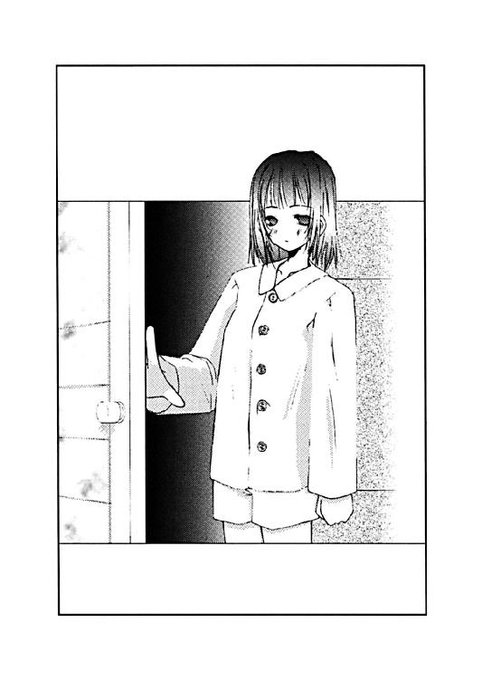
「それだけ聞くと、悪いけど青山君がかなり頭悪そうに聞こえるわ」
「かもしれませんね」
一美は素直に賛同する正吾に苦笑いを浮かべると、少し上を見て考えごとをしている仕草をみせる。それからおもむろに口を開いた。
「船堀さんというのは、もしかして船堀樹里子さんのこと？」
「ええ」
正吾は答えながら、そういえばと思い出す。樹里子と一美が知り合いなのは一回目のやり直しの時に聞いていた。
「演劇部の台本を彼女に頼んだんですよね？」
「ちゃんと知ってるってわけね」
一美は少し歯切れの悪い感じだった。
正吾はまた改めて考えてしまう。船堀樹里子と一美が知り合いだったのは、ただの偶然だろうか？ 一美はあえて口にはしないが、樹里子と一美はあまり仲が良くないのは疑うまでもなかった。台本の関係でもめて、今は半分切れたような状況のはずだ。でなければ、樹里子があんなに熱心にクラスの出し物に協力しているとは思えない。
景子と樹里子。どちらも一美とあまり仲の良くない人間が死んでいる。何かそこには理由があるのかもしれない。
「市ヶ谷先輩。少年の方には心当たりはないですか？」
「少年？ 途中で悪魔に殺されるって少年のことね」
一美はその質問に自分の思考を中断されたらしく、少し顔をしかめる。
「なぜか、あちこちで現れるんですよ。きっと中学生だと思うんですけど、じっと俺のことを睨んでいるんです。なんだか女の子みたいな顔なんですけど」
「とりあえず思い当たる人はいないけど。中学生ねえ......その子、私に関係あるわけ？」
「市ヶ谷先輩とは関係ないかもしれません。俺の前ばっかり現れてたし。体育館にそいつが行った時も、市ヶ谷先輩は気付かなかったみたいだから」
「ということは、その少年は私というよりは、青山君の関係者でしょうね。あなたの恋敵か何かじゃないの。それこそ乃木坂さんのことを昔から好きだったとか」
「そうなのかな？」
一美の言葉には思い当たるところがないわけでもない気もする。
「俺はお前のこと絶対認めないからな──って言われたし」
「乃木坂さんのこと、ひっそり好きな人とかいそうじゃない」
一美はなんだかおかしそうに笑いながら、そんなことを言う。それはまるで正吾が焦るのを楽しんでいるかのように感じられた。
「ところで犯人はわかっているわけ？」
「それでちょっと気になることがあって、ここに来たんですよ」
「というと？」
「一度目、広尾先輩が死んだ後、双海ちゃんを見つけたんですけど、その時、『双海が殺したんです』って言ってたんですよ。それで二度目の時に双海ちゃんに確認を取ったんです。夢の中に天使が出てきたかって？ もし出てきてれば、それはつまり双海ちゃんが犯人ってことじゃないですか」
「それはそうね」
「それで聞いてみたら、双海ちゃんは夢で天使を見たって答えたんです」
「......て、ことは犯人は双海ってことよね」
「俺もそう思ったんですけど、きっと違うんです」
「どういうこと？」
一美がそう言って顔をしかめた時、居間にまた一人誰かがやってきた。
「双海！」
一美の顔に驚きの表情が浮かぶ。一美が呼んだその名前に正吾も居間の入口の方を見ようとするが一美の腕が伸びてきて顔をつかんだ。
「ぐ......な、何を？」
「ちょっと目をつむってなさい」
手で覆われて暗くなった闇の中で一美の声だけが響く。
「......なんなんですか？」
「いいから。いいって言うまで絶対に目を開けちゃだめよ」
「はい」
正吾がそう答えると一美の手が離れるのがわかった。ガタッと音がして一美が席を立つのが聞こえた。
「どうしたの、お姉ちゃん？」
寝ぼけた双海の声が聞こえた。
「......青山君がそこにいるのが見えないの？」
さすがの一美も呆れた口調だった。その言葉に寝ぼけていた双海が、
「あ、青山さんっ！」
急に驚いた声を上げて、ドタドタと音を立ててその場を去ったらしいのがわかる。それで一美はもう目を開けてもいいと正吾に告げる。
「なんだったんです？」
「いや......双海ったら寝ぼけて下着姿でここに来るから」
苦笑いを浮かべながら一美はそのまま台所の方へ歩いていく。
「下着姿で......」
ということは、さっきすぐ側に下着姿の双海が立っていたということか。それをちょっと想像してしまい、なんだか申し訳ない思いに正吾は駆られてしまう。
「双海、昨日は随分遅くまで裁縫してたみたいだから」
「あ、乃木坂さんのエプロンですか？」
「そうそう。すごく真剣に作ってたみたい。ちょっと、父さんのカップだけど良いわよね？」
一美はそう言って、コーヒーを正吾の前に置く。少し大きめの肉厚のマグカップだった。
「あ、すみません」
「それでね、すごく真剣に作ってたみたいだから、誉めてあげてね。あの娘、最近、私が何言っても、お姉ちゃんは優しいからそう言ってくれるけど......とか言うのよ」
そう言って笑みを浮かべる一美は、まるで双海の母親のように見えた。きっと一美は双海の母親であろうとしているんだろうな、と正吾は気付く。
「乃木坂さんも喜んでましたよ。双海ちゃんのエプロン、すごく可愛いですから」
「......あなたと話していると時制がおかしくなるわ」
一美がそう言ったところで、双海が服を着て、居間に戻ってきた。すでに制服を着て、髪形もいつものように両脇で結んでいる。
そんな双海がおずおずと一美の方に回って隣の席に座る。それを見て正吾は今、自分が座っているのはおそらく、二人の父親がいつも座る場所なんだろうと思ったりした。
「おはようございます、青山さん」
「あ、おはよう。双海ちゃん」
正吾はそう答えながら、いつにも増して双海が縮んでいるような錯覚を受ける。確かにさっきのことを考えれば当然のような気もするが。
「双海ちゃんに聞きたいことがあるんだけど」
「......なんですか？」
ビクリと驚きながら、双海が尋ね返した。
「双海ちゃんの夢に天使は出てきた？」
「出てきたですけど......」
双海の返事に一美がちょっと沈んだ表情に変わる。妹が立て続けに事件の犯人候補だというのはさすがにショックだったようだ。
しかしここまでは正吾も予想通りだ。今更、驚くことではないので、さらに質問を続ける。
「それは今日の話だよね？」
「違うです。双海が天使を見たのは十月一日の朝です」
あまりに初歩的なミスだった。双海の返答に正吾はそう思う。わざわざ確認するために会いに行ったのに、結果的には誤解をしに行ったようなものだったと気付く。
「それじゃ、双海は今回の犯人じゃないわけね？」
一美が念を押すように尋ねる声が聞こえた。
「そうみたいですね」
正吾は改めてそれを確認するが、それでもいくつか疑問が残る。
一回目のことだ。双海は確かに、広尾景子が死んだのを自分のせいだと言っていた。あれは自分が今回の犯人だという自覚があったからじゃないのだろうか......？
「双海ちゃん。広尾先輩が今日、死ぬことになるんだけど、何か心当たりはある？」
その質問にまた双海はビクリと驚いて、動きが止まる。
「あるの、双海？」
双海が何も答えないのが気になったのか、一美も尋ねる。
「......あるです。でも人には言えないです」
一美にじっと見つめられて、黙っていられなくなったらしい。双海が今にも消えそうな声で答える。
「青山君がいるから言えないの？」
「そうじゃないです」
「じゃあ、私のせい？」
「お姉ちゃんだからじゃなくて、誰にも知られてはいけないの」
「......どういうこと？」
一美はわけがわからないと思ったようで、正吾の方に助けを求めるように視線を向ける。しかし正吾にだってわけがわからない。
「真剣な話なんだよ。何か心当たりがあるなら、どんなことでもいいから教えて欲しいんだ」
考えてもわからないことは聞くしかない。でも双海は頑なに返答を拒む。
「双海も真剣です。命がかかってるんです。だから言えないです」
「命がかかってる......？」
漠然と輪郭は見えてきた気がするが、それが結局なんなのかは把握できそうになかった。せっかく双海が犯人ではないのがわかったのに、さらに謎が増えてしまった気分だった。
そんな正吾を一美はちょっとと言って居間から連れ出した。
「どう思う？」
「いや、さっぱり」
「ひょっとして誰かに脅されていたりするのかしら？」
「話したら殺すと脅されているってことですか？」
それは確かに可能性としてはある気はした。もしそれが本当なら、一気に事件の真相に近づいたという感じもする。
「でも、そういうことじゃないと思うんですよ」
「どうして、そう思うの？」
「確証はないんですが、景子先輩とその他の人の死は関係ない気がするんです」
「どうして？」
「冷静に思い返すと、直接的なつながりがないんです。それに二回目、俺は景子先輩の代わりに舞台装置の下敷きになって死んだんです。その時はなんて俺は迂闊なんだろうって思ったんですけど、よくよく考えると、それが一つの正解だったのかもしれないなと」
正吾の言葉に一美はしばらく考えてからこう答える。
「防ぐべき『事故』はそっちの方で、後に起こったのは関係がないってこと？」
「全く関係がないってことはないかもしれないですけど、あれは『事故』じゃなくて単なる事件だったんじゃないかと思うんです。乃木坂さんがさらわれたり、悪魔が出てきたせいで、そこに前回と同じ何かを感じたけど、実はあんまり関係ないかもしれない」
「......って、ことは景子先輩が死ぬのと、青山君たちが死ぬのは別の人間の仕業ってことね。双海が脅されているとしても、青山君たちが死ぬのを防ぐのとは関係ない」
「たぶん」
正吾はそれでとりあえず、双海の件は置いておくことを提案する。景子の死に関しては、もっと簡単に防ぎようがあるし、双海を問い詰めることにはあまり意味はなさそうだと思えたからだ。
「そうね。じゃあ、私、着替えてくるから、一緒に現場に行きましょう」
「あ、はい」
正吾はそう言うと居間の双海のところに戻って、一美の準備が終るのを待つことにする。
「すみません」
双海は一美と正吾が何事か相談していたのが気になっているらしい。自分のせいで二人が困っているのは感じ取っているようだった。
「事情があるなら仕方がないよ」
正吾はそう言いながらなんとも言えない居心地の悪さを感じていた。間が持たないので、コーヒーを飲む。それは双海もそうらしく、彼女も黙って朝食をとる。
「............」
「............」
一美が階段を降りてくる音が聞こえるが、どうやら洗面所に向かったらしい。居間にはまだ戻ってきてくれそうにない。
「双海ちゃん」
特に用もないが話しかけてみたりなどする。それで双海はまたビクリとして動きが止まる。それで正吾はじっと双海を見ているくらいしかできなくなってしまう。
「あれ？」
その時、正吾はやっと異常に気付いた。いや正確には異常がないことに気付いたわけだが。
「その髪形どうしたの？」
双海はいつもと同じ髪形をしていた。
正吾の記憶の中では、十一月十三日の双海の髪形は普段と違っていたはずだ。一美と同じくポニーテイルだったはずなのに、双海はいつもと同じ、両脇で縛る髪形にしている。
「どうにもしてないです」
当然といえば当然の返答。いつもの通りなのに、どうしたのと聞かれても双海も困ってしまうだろう。それに気付いて、正吾はわかるように説明を加える。
「今日の双海ちゃんは一美さんと同じ髪形のはずなんだけど」
「そんなことありえないです」
急に強い口調で双海が否定する。
「ありえないって、どういうこと？」
「このリボンは二つ一組でお姉ちゃんに買ってもらったです。だから、いつも双海はこの髪形にするんです」
「......そうなんだ」
本人が言うなら、そうなんだろう──とは思うものの、正吾の中での矛盾への返答にはなりそうにない。双海が今回の犯人ではないとはいえ、彼女にはまだ何か事情がありそうだと正吾は改めて確認する。
「じゃあ、出かけましょう。青山君」
そんなところに一美が戻ってくる。
「もう行くの、お姉ちゃん？」
しかし先に反応したのは双海だった。
「ちょっと調べたいことがあるから。双海は疲れているみたいだから、もう少し後で来なさい」
「双海も一緒に行く」
双海はそう言うと慌てて立ち上がり、自分の部屋に荷物を取りに行く。それを見て、一美はちょっと呆れたように眉を動かすと、彼女の飲みかけのコーヒーを片づけることにする。
「いつも一緒ってのもどうかなって気はするんだけどね」
一美は小さく呟いて台所の方へと向かった。
「いつも一緒か......」
そして正吾はなぜかその言葉が妙に心に引っ掛かるのを感じた。
○
文化祭の朝とはいえ、まだ時間が早いのか、学校にはほとんど人はいなかった。
一美は一足先に職員室に向かって、体育館の鍵を取ってくる。それで待っていた正吾と双海と合流すると、体育館、そして問題の舞台袖の部屋の鍵を開けて中に入る。
止まっていた空気が流れ出すように頰に触れる。
問題の舞台のセットは記憶の通りすでに組み上げられてそこに立っていた。土台のせいで傷つかないようにと、床には青いビニールが敷かれていた。かなり大きいセットの下に敷かれるだけあって、十分な大きさのシートで、余った端の方はクルクルと巻かれている。素材のせいか、少し滑って足元が危うい印象を受けた。
「ここで景子先輩がねぇ」
一美は舞台装置の土台を観察するために近づいていく。崩れて人が死ぬというのに、慎重に近寄るようでもない。どころか、いきなり足の一本を摑んで引っ張って揺らす。
「あ、あぶないですよ」
さすがに驚いて正吾が叫ぶが、一美は冷静に上を見ているだけだった。
「落ちてくるとわかっていれば大丈夫よ、きっと」
言いながら、続けて違う足を順番に揺らして一美は回る。しかし一美の与えた衝撃で崩れそうな気配は少しもなかった。上の方で横につないでいる板が少し音を立て、乗せられていた小道具が一個だけ落ちてくるくらいのものだ。
「崩れそうにないわね」
「そうですね」
確認して正吾もその場に近寄る。衝撃的な場面でばかり見たせいだろうか、どうも細部までの記憶ははっきりしない。どこか記憶と違うというような違和感はあるものの、それが何かまではわからない。
「ということは、この後、誰かが何か細工をするってことかしらね？」
現状では崩れそうにないということは、それが妥当だろうと思えた。
今は大丈夫だが、次第に歪んで崩れるとも考えられるが、一美の行動を見るかぎり、何もしないのに、そんなに急激に変化するという感じではなさそうだった。
広尾景子の死が『事故』であるならば、不幸な偶然の結果であると考えた方が自然だった。悪意ある犯人がどうこうというよりは、この部屋を訪れる多くの人の影響で、土台がゆがんで崩れたという風に考えるべきなのかもしれない。
「だから、まだ家にいなさいって言ったでしょ」
一美のそんな声が聞こえて、正吾の思考は中断する。どうやら双海が眠たそうな顔をしているのが原因らしい。
「......ごめんなさい」
「しょうがないわね。悪いんだけど、青山君、残りは一人で行ってくれる？」
言って一美が鍵を投げてきた。それは美術室、演劇部の部室の鍵だった。
「はい」
正吾はそれを受け取って、ふと貴博のことを思い出した。
「念のために言っておきますけど」
「なにかしら？」
「十一時過ぎに貴博がコーヒーをこぼされてズボンを濡らすことになるんです。コーヒーポットのネジが外れかけているのが原因なんで──」
「それを私が忠告しろって？」
「ええ、まあ」
言いながら正吾は、一美が少し不機嫌そうな顔をしているのに気付く。
「まあ、いいんじゃないの、コーヒーくらいなら」
一美はそんなことを言って、なんだか憂鬱そうな顔をする。
「......なんかマズイコト言いました？」
「そんなことわざわざ言いに行ったら、貴博のヤツ、調子に乗りそうだなって思っただけよ」
一美はまたいつもの強気そうな笑みを浮かべた。正吾はそれを見て少し安心すると、その場を離れることにした。
第二の現場とも言える演劇部の部室。正吾はそこを訪れて、じっくりとこの中を見たのは初めてのような錯覚に陥った。
というのは、一回目の時に見た時とは随分と印象が違っていたからだ。
「......変だな」
あるものは同じなのかもしれない。でも配置が随分と違っていた。自分の方に倒れてきたロッカーにしても場所が全然違う。部屋の右わきの方に集めて並べるように立っている。
自分が死んだ時は、部屋を狭く遮断するように配置されていたはずだ。
「犯人が動かしたってことだろうとは思うけど」
呟いて正吾は八つもあるロッカーの方をじっと見つめた。中身が空だとしても一人で動かすのは時間がかかりそうだと思った。
一体、いつから犯人は部屋を模様替えしていたんだろう？ そんな疑問も浮かんだ。いくら演劇の準備が体育館で進んでいるとはいえ、何か忘れ物をしたと気付いて演劇部員が取りに来る危険はある。そんなに長い時間をかけるのは得策ではなかったはずだ。
樹里子一人を縛って、衣装を捨ててこの部屋を去ったにしては、なんだか念が入り過ぎている気がする。あの部屋中に張り巡らされた糸や縄も、そう考えると違和感を感じずにはいられない。
「準備中に邪魔が入ったから逃げたってことかな？」
だが何の準備だったんだという疑問は残る。
あの場に秋葉がいなかったのも、今考えるとおかしいとしか思えない。犯人が樹里子だけをあそこに残した理由はどこにあったんだろう？
あの少年は殺したのに、樹里子はわざわざ縛ったまま置き去りにしたのはなぜだろう？
改めて考えると犯人の行動はちぐはぐだった。一体、何をしたかったのだろうか？
「とりあえず調べてみるか」
一通り考え終えたところで、正吾は時計を見て、ロッカーを移動してみようと思った。犯人がやったのと同じように部屋を配置することで、何かがわかるような気がしたからだ。
「......む」
ロッカーは持ち上げてみると、そんなには重くはなかった。中の荷物はほとんど体育館の方に動かされているのだろう。とはいえ、ロッカーは一人で持ちあげるには幅が広くて持ちづらかった。
そのせいで一つ運ぶだけで随分と時間がかかった。休みながらだったから二分くらい。それでも、もう一つを運ぶと思うと体力が続く気はしなかった。自分に体力がないだけと言ってしまえばそれまでだが、犯人が超人的な体力の持ち主だとしても、この方法はあまり賢くないというのがハッキリとわかる。
「ということは、やっぱりこれは事故なんかじゃないんだ」
景子の死は事故性が強いが、こっちはかなり事件の臭いがする。誰かの強い作為を感じる。
それが誰の作為なのかはわからない。しかし、こっちには明らかな犯人がいるのだ。そしてその犯人と、今回の繰り返しの相棒は同一人物ではない。それを正吾は確認する。
「事件の犯人と事故の犯人は別にいる」
問題を色々と混同しているせいで混乱していた頭が次第にほどけるように整然としてくるのを正吾は感じた。
秋葉をさらったのは、事件の犯人だ。それを正吾は理解する。
もし双海が脅されているとしても、それはこの件とは無関係なのもわかった。いずれは探さなければいけないかもしれないが、急いで調べるようなことじゃない。それもわかる。
一美らしき体育館から逃げた影も同じだ。とにかく広尾景子の死に絡んでの疑問はとりあえず忘れてしまっていいのだと気付いた。それは悪意なき繰り返しの相棒の仕業であるし、二度の出来事を見ても、無理に運命に干渉している気配もない。
景子の死さえ止めればいい。事故の犯人を無理に探したり、追いつめる必要はないのだ。誰かはわからないが、きっと以前の双海と同じように苦しんでいるだけなのだろうから。
「でも、こっちは別だ」
正吾は息が整うのを感じて、ロッカーを元の場所に戻し始めた。
「こっちは明らかに悪意ある犯人の仕業だ」
しかし誰なんだろう？
以前の時のように犯人の姿を見ていなかったのが悔やまれた。見ていればそれだけでもかなりの手がかりだったのに、今回はそういうものが全くない。
事件と事故の違いに気付けたとはいえ、やはり二回目、事故に巻き込まれて死んでしまったのは、大きなダメージだったという気がする。
でも、手がかりが全くないわけではない。
まず、悪魔の衣装を犯人が着ていたという事実。しかもあの衣装は、実際に劇で使うものだ。ということは演劇部の関係者の目を盗んで、犯人はあの衣装を手に入れたということになる。衣装係の双海が屋上にずっと隠れていたことを考えると、演劇部のかなり中枢にいる人間なのかもしれない。しかし同時にそんなに忙しくない人間ということになる。
それは、たとえば広尾景子みたいな人間かもしれない。事情に詳しく、しかも忙しくはない。演劇部の先輩ならば、衣装を取ろうとしてもさほど怪しまれないだろう。途中でばれてもいくらでも言訳はできそうでもある。
そこまで考えると逆に疑問が浮かんだ。
この人通りの多いこの日、犯人はなぜ秋葉をわざわざさらったのか？ そんなことをしないといけない理由とは一体なんなのか？ そんなことをしないといけない人間とは誰なのか？
結局、正吾には考えてもわからなかった。
○
その頃、乃木坂秋葉は、訪れる家を間違ったかと思って驚いていた。
「......ここは青山さんのお宅ですよね？」
見覚えのある玄関から出てきたのは、見たこともない女性だった。しかもどういうことなのかバスタオル一枚しか身にまとわない服装で、少し曇った眼鏡で自分の方を見ている。
秋葉は予想外の展開にどうしていいかわからなくなってしまう。
「あなたは乃木坂さんよね？」
その言葉で相手は自分を知っていることを知る。どうやら、ここが正吾の家であるのは間違いではないようだった。
「あ、はいそうですけど......」
「あ、私は正ちゃんの親戚で、高島優子。正ちゃんのご両親が旅行中なので、食事を作れって呼び出されて来ているんだけど」
「そうなんですか。それで、あの正......いえ、青山君は？」
「あ、正ちゃんは、もう出かけたみたい。行きたいところがあるって、一時間以上前に出ていったのよ」
「何かあったんですか？」
「その辺は、よくわからないんだけど、市ヶ谷さんの家に行くとか......」
「市ヶ谷さんの家、ですか？」
秋葉はどういうことなんだろうと思うしかなかった。
正吾が市ヶ谷姉妹の家に行く理由には心当たりがなかった。一美にしろ双海にしろ、会うのが目的なら学校へ行けば済むはずだった。
しかもそれほど急いで行く程の理由。
「もしかして、また......」
正吾がトーカに会ったのかもしれない。秋葉はそう思うしかなかった。昨日の時点では他に何か起こりそうになかったのだから、それが自然な気がする。
「心当たりがあるの？」
優子が黙って何事か考えている秋葉に尋ねてきた。
「なんとなくですけど」
「そう、じゃあ、よろしくね」
優子はゆったりとした口調で告げると、秋葉ににっこり笑ってみせる。
「あ、はい」
秋葉はイマイチ状況が飲み込めないのだが、うなずいてしまっていた。そして優子に別れを告げると歩き始める。
が、突然その足どりが止まる。
「なんで正吾クンは、市ヶ谷さんの家を知ってるのかな？」
彼女はそう呟き、それから少し駆け足で学校へと向かう。
秋葉は市ヶ谷姉妹の家がどこにあるか聞いたこともなかったのだった。
「正吾クン？」
正吾の思考を中断したのは、自分を呼ぶ声だった。正吾はそれで誰が来たのかわかった。
「乃木坂さん、どうしてここに？」
正吾はそう言いながら、随分と時間が経っているのに気付いた。
八時をかなり過ぎている。ロッカーを動かしたりしていたとはいえ、なんだか長い間考えごとをしていたのを自覚する。
「......正吾クンの家に行ったら、もういないって言われたから、何かあったのかと思って探してたんです。体育館に行ったら、一美さんがこっちじゃないかって」
秋葉はひどく息を切らしながら、正吾の方をじっと見つめそう告げる。正吾はそんな秋葉がなんだか怒っているように見えてしまう。
「なんで、こんな時間に演劇部の部室なんかにいるんですか？」
秋葉の声はなんだか泣いているようにも聞こえた。ただの事実の確認のはずなのに、なぜそう感じるのか正吾には理解できない。
「また、トーカに会ったんだ。今日、また人が事故で死ぬって。だから、それを食い止めようと思って......」
「それで、一美さんのところに行ったんですよね？」
正吾の言葉を遮るように、秋葉が強い口調で正吾に尋ねる。正吾は驚いて、言葉が途切れる。それで、じっと秋葉が正吾を睨んでいるのがわかった。
「どうして、一美さんのところなんですか？」
今度は泣きそうな声で秋葉が尋ねた。
正吾は何が起こっているのか理解できず、秋葉を見ているしかできなかった。息が切れているからとあまり気にしなかったが、秋葉は小さく震えているようだ。
「どうしてって、双海ちゃんに聞きたいことがあったからだけど」
「双海ちゃん、ですか？」
ただの繰り返しの言葉。なのに、正吾はそこに大きな違和感を覚える。
双海ちゃん。記憶の中では、秋葉は双海のことを「市ヶ谷さん」と呼んでいた。違和感の理由はわかるが、なぜ、秋葉がその言葉を繰り返したのかまではわからなかった。
「一美さんが死ぬんですか？」
さらに秋葉は正吾にとって理解できない質問を繰り返す。
「市ヶ谷さんが死ぬんですか？」
「......いや、違うけど」
わけもわからず、正吾はそう答える。さすがに沈黙してばかりもいられなかった。
「だったら、なんで。なんでなんですか？」
秋葉はどうやら一美に話を聞いたらしい。それが正吾にはわかった。もう事情を知っているのだ。だから知りたくて聞いているわけじゃない。それも正吾は理解する。
「なんでなんですか？ どうして、私じゃなくて一美さんなんですか？」
「それって、どういう意味？」
正吾は慌てて秋葉に近づく。
尋ねながら意味がわかった気がする。さっきから秋葉が何を尋ねていたのかも。
「なんで私は乃木坂さんで、市ヶ谷さんは双海ちゃんなんですか？」
近づくと秋葉がじっと泣くのをガマンしているのがわかった。
そして正吾はそんなことさえ見ていない自分にやっと気付いた。
「乃木坂さん？」
「私だけなんですか？」
それを口にした時、秋葉の涙が流れた。正吾もすぐに気付いて、思わず尋ねてしまう。
「なんで、泣くの？」
答えは、もうわかっている気がした。正吾はそれでも尋ねてしまう。
誰が悪いのか。それもわかっているのに、確認するためだけにその問いは発せられたような気さえする。
「私じゃなくても良かったんだよね。正吾クンは私じゃなくても良かったんだよね」
秋葉は正吾の質問には答えず、つまりながら自分の言葉だけ呟き続ける。
「私じゃなくても良かったんだよね。誰でも良かったんだよね。誰か、好きになる人が欲しかっただけなんだよね」
その言葉に反射的に正吾は叫んでしまう。
「何、言ってるんだよっ！」
「だって、そうじゃない。正吾クンは誰でも良かったんだよ。私は正吾クンが好き。ずっと好きだったし、今も好き。優しいところも、私の気持ちを中々わかってくれないところも好きなの。なのに、正吾クンは、私じゃなくてもいいんだ」
秋葉は小さく震えながら言葉を続けていた。正吾はそれを聞きながら、どうしていいかわからず言葉が出てこない。だから、秋葉の名前だけを呼んでいた。
「乃木坂さん？」
「好きだって言ってくれたのだって、私がずっと言えないで苦しんでるって知ったからなんだよね」
正吾は秋葉の言葉に驚きを感じた。だが違和感は覚えなかった。
──そうなのかもしれない
そんな風に静かに心の中で呟いていた。
それが秋葉に聞こえたわけもないのに、彼女は肯定されたと感じたのか、そのまま声が次第に大きくなっていく。
「そうじゃないって思いたくて、自分を誤魔化してきたけど、今日、わかったの。正吾クンの家に行ったら、もういなくて、一美さんの家に行ったってわかった時、全部わかった。正吾クンは、困っている人を助けたいだけなんだって」
正吾は秋葉の言葉を否定したかった。でも秋葉に伝わる言葉は正吾の口からは出てこなかった。何を言っていいのかわからない。
「他の人が苦しんでるって知ってたら、その人と付き合ってたんだよね。私が先だったから、私と付き合ってるだけなんだよね」
秋葉は止まることなく、自分の言葉を続ける。それで自分が傷つくことも、正吾が傷つくこともわかっているに違いなかった。でも、彼女の言葉は止まらない。
「正吾クンは優しいから、私と付き合ってくれてるだけなんだよね？」
「......どうして、そんな悲しいことを言うの？」
否定の言葉は浮かばない。正吾はただ尋ねるしかできなかった。
「私は優しい正吾クンが好き。でも、だから怖くなるの。去年の文化祭の時、手伝ってくれたのすごく嬉しかったのに、私のこと好きだって言ってくれた時もそうだったのに。なのに思いだすと怖くなるの」
「なんで？」
「正吾クンは優しいから、そうしてくれただけなんじゃないかって。そう思うと怖くなる。いつか私より困ってる人がいたら、きっと正吾クンはその人に優しくするために、私から離れていくんだよね」
「......そんなこと」
「あるよ。絶対、そうなる。私はそんな優しい正吾クンが好きなのに......。皆に優しい正吾クンのそんな優しさが怖いの。こうやって私が泣いたって、正吾クンは怒ったりしない。自分のせいだって思って私に優しくしてくれる。それが嬉しいのに、私は怖いの」
秋葉はもう止まらなかった。目からは涙がこぼれ、眼鏡の底に溜まり、それも流れて落ちていく。
「だから言えなかった。言ってしまって優しくされたい自分が嫌だから。そんな正吾クンの優しさに頼ろうとする自分が嫌なの。でも、それでも私は言ってる。そんな自分が嫌なの。でも、正吾クンは優しいから、私を嫌いになったりしないんだよ。私はだから、正吾クンが怖いの」
正吾は本当に何を言っていいのかわからなかった。だから黙って彼女を抱きしめた。それでも秋葉は呟き続ける。泣き続けている。
「言ってしまえばいい。そうわかってても言えなかった。私が正吾クンって呼ぶように、私のことを秋葉って呼んで欲しかったのに、私はずっと我慢してた。市ヶ谷さんのこと、双海ちゃんって正吾クンが呼ぶたびに、私は苦しかった。だって、市ヶ谷さんの方が大切みたいに聞こえるから。私、だから市ヶ谷さんって呼んでた。でも、その度に私は苦しいの。なら、止めればいいって思うのに......」
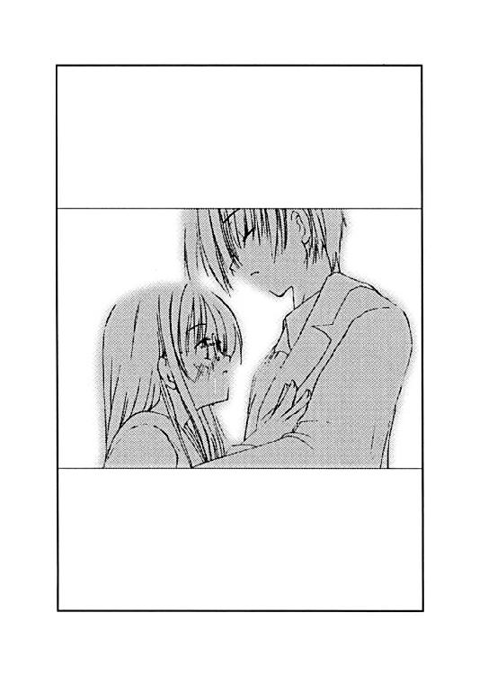
こんなに近くに秋葉を感じたのは、初めてだった。でも、秋葉が何を考えてるのかわからないのも確かだった。
彼女のために伝える言葉が思いつかない。こんなに苦しんでいたことを知らなかった自分を許せないのに、そのために怒る言葉も思いつかない。
「乃木坂さんの言う通りかもしれない」
考えなしに正吾はそんなことを口にしていた。
「違うって言ってあげたいけど、自信がない。きっと双海ちゃんに同じことを言われたら、噓でも違うって言えたと思う。でも、乃木坂さんには言えない。一人で苦しんで、そのことを一言も言わない乃木坂さんには言えないよ」
正吾は秋葉のことを知りたくて、さらに強く抱きしめる。でもそれでも何も届かない。言葉は浮かばず、辛さが増すだけのような気持ちになる。
胸が苦しかった。秋葉のぬくもりを感じても、気持ちを理解できない自分が許せなかった。
どうして、自分はそうなんだろう？ また同じ問いを自分に発していた。
「知ってたのに、どうして俺は無視できたんだろう。乃木坂さんを出迎えた時の笑顔を知ってたのに、どうして君が来るのを知ってて、俺は市ヶ谷先輩のところに行けたんだろう？」
自分の言葉で、あの時のことで自分はそれで満足してしまったというのがわかった。
「乃木坂さんが喜んだのがうれしかったんじゃない。乃木坂さんを喜ばした自分がうれしかったんだ......そうだったんだな。俺って酷いヤツだよな」
言ってしまうと、正吾の涙は止まらなかった。
なんて嫌なヤツなんだろう？ その涙の理由に正吾の胸はさらに苦しくなる。
「ごめん、乃木坂さん」
言ってもしょうがない言葉だ。そうは言っても正吾は止められなかった。
「俺は乃木坂さんみたいに、言ったらどうなるかとかわからない。先のこととか全然わからない。だから思う通りに行動すればいいと思ってた。でも、それは自分のことしか考えてないからだったんだな」
トーカのおかげで皆と仲良くなれた。秋葉とも付き合えるようになった。それがハッピーだって思ってた。だから、これでいいんだって思ってた。
でも、本当にそれでいいのかなんて考えなかった。
「乃木坂さんが俺のこと好きだって知ったから、俺と付き合えば幸せになれるんじゃないかって、俺はそう思ってた。でも、本当はそうじゃなかった。俺は楽な方に逃げただけじゃないか。乃木坂さんのためだって思って、俺は本当にそれでいいかなんて考えもしなかった。だから、こうやって乃木坂さんを傷つけて泣かせて......なのに、何にもわからないんだ」
言いながら、千尋に言われたことを思い出した。千尋に言われた通りだ。自分はそうやって楽な方に逃げる人間なんだ。
友達なんだから相談してくれって千尋が言ったから、千尋に相談した。でも、それで千尋が本当に嬉しいかなんて、考えてはいなかった。
秋葉が自分のことを好きだと知って、自分はそれを利用した。それだけなんだ。
本当に真剣に考えたら、秋葉の気持ちを知っても、それに気付かないフリをするべきだったとわかったかもしれない。
秋葉が幸せになる相手が現れるまで、自分のことを忘れてしまうまで無視し続けるべきだったのかもしれない。
「秋葉」
小さくそんな声が聞こえた。
「秋葉って呼んで」
「え？」
「乃木坂さんじゃなくって、秋葉って呼んで」
秋葉は小さくそう繰り返す。正吾は何を言っているのかわからず、反射的に繰り返す。
「......秋葉？」
「はい」
秋葉が短く返事をした。それだけで、正吾はふいに抱きしめていた秋葉が柔らかくなったように感じた。
「今はそれだけでいいです」
秋葉の言葉が聞こえて、彼女の手が自分を抱きしめるのを感じた。
「秋葉？」
「はい」
また秋葉は正吾の腕の中で柔らかくなり、でも抱きしめる力はぎゅっと強くなる。
「私、幸せなの。ただ、秋葉って呼ばれるだけで。樹里子や美貴が言っても、自分のことを呼んでるんだなって思うだけだけど、正吾クンが呼んでくれると、幸せなの」
またぎゅっと秋葉は正吾を抱きしめた。そしてその目線が少し上がる。それを感じて正吾の目線が下る。
目が合った。涙が溜まった目がお互いを見ていた。歪んだ自分がその目に映っていた。それが驚く自分に変わる。
「正吾クンが好きだって言ってくれたのも幸せだった。その後だって幸せだよ。正吾クンはちゃんと考えてなかったかもしれないけど、正吾クンが間違ってたなんて思わない。正吾クンを好きになったのは間違いじゃないよ。私、それだけは絶対に確かだって思ってる」
「秋葉？」
「私、正吾クンの鈍いところも、何も考えないとこも好きなの。いつも鈍いのに、本当にわかって欲しい時にはわかってくれる正吾クンが好きなの。だから、無理して私の理解者になってくれなくてもいい」
「......じゃあ、どうすればいいの？」
相変わらず、秋葉の言っていることは全然、正吾にはわからなかった。でも、さっきまでとは明らかに違っていた。
だから、ゆっくりと秋葉が答えるのを見つめていた。それができた。
「こうして、たまに私のわがままを聞いてくれれば、それでいいです」
秋葉はそう言うと、また小さく呟いた。
「秋葉って呼んで下さい」
それを聞いて正吾は、今度ははっきりと疑問形ではなく彼女の名前を呼べる気がした。
「秋葉」
そして正吾は自分の心が和らぐのと、自分をぎゅっと抱きしめる秋葉の力を感じ取った。
「正吾クン、大きくなってる」
秋葉がそんなことを言った。言われて秋葉の顔を見ると、少し笑っていた。
「え？」
「前はもう少し目の場所が低かったんです。でも今はちょっと上を見ないと見えないんです」
そう言われて正吾は膝の痛みを思い出した。
秋葉と付き合うことになっての一か月、言われてみればいつものように膝が痛かった。それは背が伸びているってことだとは思っていたが、そんな自覚はあまりなかった。
でも秋葉はずっと自分を見ていて、少しずつ背が伸びているのに気付いてくれた。
「秋葉は変わったのかな？」
正吾は独り言のように呟いて、よく思い出せない自分に気付いた。
秋葉を好きになったあの十月一日の秋葉。次の日、学校新聞に載せてもらってもいいと笑った秋葉。その後、初めてのデートに出かけた時の秋葉。演劇を観てて眠ってしまった自分に怒った秋葉......。
思い出の中の秋葉はぼんやりしてて、今の秋葉とどう違うか正吾にはわからない。
「あまり変わってないかもしれませんね」
でも、秋葉はそんな正吾を責めたりせず、嬉しそうに笑うとまたぎゅっと正吾を抱きしめた。
時計を見ると、八時十分を過ぎたところだった。それでふと、正吾は我に返る。
「......教室に戻らなくていいのかな？」
「こんな顔じゃ戻れません」
確かに言う通りだった。正吾はじっと秋葉の顔を見て、その理由を確認する。目が赤いし、頰を伝った涙の跡もハッキリ残っている。顔も若干赤いかもしれない。さっきまで泣いていたのが、誰にでもわかってしまいそうだった。おそらくは自分もそうなのだろうと思うと、このまま教室に行くのは具合が悪そうだった。
「とりあえず、顔は洗うにしても......」
これからどうすればいいだろう？ そんなことを考えながら正吾は演劇部の部室を出る。それから顔を洗いにトイレに行って、帰り道にあることを思い出した。
広尾景子が一美に会う時間が迫っている。
「秋葉。広尾先輩に忠告しにいかないと」
顔を洗って戻ってきた秋葉にそう告げると正吾は迷わず走り出して、階段を駆け降りる。静かな四階とは違って、三階、二階、一階と降りていくと、人が多くて騒々しいのを感じる。そんな状況で秋葉が正吾に話しかけてくる。
「広尾先輩にどうやって忠告するんですか？」
言われていきなり足が止まる。思考も止まる。
「どうやってだろう？」
二回目のやり直しの時、面識もないし......と忠告しなかったのを思い出す。確かにどうやって言えばいいのかと言われると思い浮かばない。
「とりあえず、会ってから考えよう」
正吾は廊下を走ると端にある扉を越えて、体育館への渡り廊下へと出る。校舎の時計を見ると、そろそろ景子が来る時間なのがわかる。
「正直に言ってもわかってもらえないと思いますよ」
「それはそうだろうな......」
良いアイデアは思いつかない。しかしだからと言って都合よく運命が変わるわけもなく、広尾景子が今まで通り、校舎の方から渡り廊下へと出てきた。
「......う」
改めて話しかけようと思ってみると、景子はなんだかやはり違う空気を持った人間なのだとわかった。演劇部の女帝と呼ばれているだけあって、周りを威圧するような気配を感じる。面識もなく、また正直に言っても伝わりそうにないことを言うには、かなり手ごわい相手と言わざるを得ない。
ヘビに睨まれたカエル。そんな感じで正吾は景子が通り過ぎるのをじっと見てしまう。景子はもちろん知り合いでもなんでもない正吾のことなど歯牙にもかけていない様子だ。悠然とした態度のまま、体育館へと歩いていく。
「広尾先輩！」
それでも正吾は頑張って声を上げた。自分の名前を呼ばれたと気付いて景子が立ち止まり、正吾の方を振り向く。
「なにかしら？」
敵意ということもないだろうが、景子の視線になんとも話しづらい圧力を正吾は感じる。
「えっとですね......」
しかも話す言葉が見つからない。何も出てこない。
「なにかしら？」
景子が同じことを尋ねる。少し苛立ちを感じている気配が声にこもっている。
「体育館の舞台の袖の部屋があるじゃないですか」
正吾は意を決して言葉をつなぐ。相手の命がかかっているのだ。自分が少々変なヤツだと思われるくらい大したことではない。そう自分に言い聞かせる。
「あるけど、それが？」
「あそこのセットの足場。ちょっと不安定なので、部屋には入らない方がいいそうです」
事実ではあるが、なんだか微妙な言い方ではあった。さすがに景子もそれに違和感を覚えてしまった様子だ。
「あなた、演劇部の人間じゃないでしょ？」
「......あ、はい」
「じゃあ、なんで私にそんなことを？」
「それはその......」
正吾が言葉につまる。理由なんて上手く言えるわけがなかった。
「私たち、市ヶ谷先輩の知り合いなんです」
正吾への助け船だろうか、秋葉がそう言ってくれた。
「市ヶ谷さんのねえ」
景子はその名前を聞いて、少し間を開けると小さく呟いた。正吾と秋葉の二人を見て、また続ける。
「直接言いたくなかったということかしらね。私も嫌われたものね」
「いや、そんなわけじゃ」
正吾が慌ててフォローしようとするが、景子は手で制した。
「いいのよ。でも、わかったわ。危険だから近寄らない方がいいんでしょう？ ちゃんとそうさせてもらうわ」
景子は二人にもう行っていいと合図を送る。それで正吾は教室の方へと向かうことにしたが、途中でまたちょっと二回目のことを思い出した。
「景子先輩はさっきはキョロキョロとしてなかったな......」
しかし正吾が振り向くと、景子はキョロキョロと辺りを見回しながら体育館へ向かって歩いていた。どうやら、他人の視線を気にしているらしい。
「どうしたんですか？」
そんな正吾の行動に秋葉も振り返った。
「いや、広尾先輩がさ、キョロキョロとしてるんだけど」
「......何か探してるんですかね？」
「何を探してるんだろう？」
それが今回の事故の真相の鍵だろうか？ この場所に何かあるんだろうか？
この場所でとなると、一美と景子のケンカ。そして一美らしき人間が走っていったことが思い出される。
「全然わからないな」
またわからないことが増えた。そんな気がした。
謎の少年の正体のことも気になるし、景子の死の謎もわかってない。
「広尾先輩は何かするんですか？」
「いや、事故に巻き込まれて死ぬだけなんだけど......」
「でも、キョロキョロと動き回っているということは、何かやましいことがあるのかも」
「どうだろう。否定する根拠はないけど、肯定する根拠もないけど」
「けど？」
「俺はあの人がそんなに悪い人だとは思えないんだよな」
「この間もそう思ってたんですか？」
「あの人は真剣なだけだと思う。だから、すねて悪いこととかするようなタイプじゃないと思うんだ」
正吾はそう言って秋葉の顔色を窺った。特にこれという変化もない。
「こういう状況ではあるけど、俺、信じたいと思ってる。別に広尾先輩という話じゃなくて、できる限り多くの人を。双海ちゃんの時も、もっと信じてれば、今朝だって秋葉とケンカせずに済んだと思うし。人を疑って傷つくよりも、俺は信じて騙される方を選びたい」
「正吾クンはそれでいいと思います」
秋葉は少し嬉しそうに笑みを浮かべる。
「だから、信じることから始めよう。広尾先輩はいい人だ。だから、キョロキョロとしているんだ。それは何故だろう？」
「何故でしょう？」
でも、信じてもとりあえず進展はなさそうだった。
「正ちゃん！」
また正吾は自分を呼ぶ声を聞いた。その声に聞き覚えがあり、また呼び方に関しても同じだった。振り返るまでもなく、正吾は優子がやってきた合図だと気付く。
「優姉......」
正吾は今回は優子に何も言ってなかったことを思い出した。前回、ちゃんと書き置きを残しておくべきだと気付いていたのに、すっかりと忘れてしまっていたのだ。
過去の経験からすれば、ここで秋葉に誤解され怒られてしまう展開になるのがわかっていた。なのに、またしても食い止めることはできなかったのか。そう思うと正吾の心は重くなる。
「どうしたの、正ちゃん？」
そんな正吾と対照的に優子は笑顔を浮かべて、弁当を二つ取り出す。
「正ちゃん、朝ご飯も食べずに出かけていったから、お腹空かしているかと思ってお弁当を持ってきたんだけど」
「......ありがと」
正吾はもうどうとでもなれといった気持ちで弁当を受け取る。秋葉の顔を見ることはとてもできなかった。また、怒られてしまうという予感のせいだ。
「ありがとうございます、優子さん」
しかし正吾の予感に反して、秋葉の嬉しそうな声が聞こえてきた。驚いて秋葉の顔を見ると笑っている。
「......あれ？」
「どうしたんですか？」
驚いている正吾に逆に秋葉は疑問を感じているようだった。
「いや、まあ、それならそれでいいんだけど」
正吾はそれで気をとり直して、改めて優子の方を見た。彼女も不思議そうな顔をしている。まあ、それはいつものことかもしれないが。
「じゃあ私はお邪魔みたいだから帰るね、正ちゃん」
優子がそう言って去ろうとするが、秋葉が呼び止める。
「優子さん。一緒に食べませんか？ 私は朝ご飯食べてきましたから」
「そう言われてみれば、そうかもしれないわね」
優子はにこりと笑うとキョロキョロと辺りを見回して中庭の方へと歩き始めた。
「優姉、どこ行くんだよ？」
そんな優子を追いかけるように正吾が続く。秋葉もそれに従う。
「三人で食べれる場所っていったら、あっちの方かなと思って」
優子のそんな返答に秋葉は少し興味を持ったようだった。
「優子さんは、ここの卒業生なんですか？」
「そうよ。だから、この学校のことはあなた達より詳しいかもね」
「......忘れてなければだけどね」
正吾がボソリと呟くと、優子は静かに笑って、それからベンチを見つけてそこに座った。秋葉もそれにならい、正吾も秋葉の隣に座った。
「正吾クンは一人分、全部食べますよね？」
秋葉は弁当の一つを優子と二人で食べるつもりらしいことを正吾に告げる。正吾はうなずいて、自分の弁当を開けた。
この弁当を食べるのは記憶にある限り、二度目だった。やり直しの一回目は千尋と、秋葉とケンカをしたことを相談しながら食べたのだ。それを思い出しながら、少し苦い気持ちを感じながら正吾は、千尋が誉めていた卵焼きを食べた。
「二人ともお気に召さなかったかしら？」
そんな表情を優子が見ていたらしい。言われて秋葉の方を見ると、少しうつむいて暗い表情をしていた。
「いえ、なんだか美味し過ぎて......」
秋葉はそんなことを言いながら、またもう一つ卵焼きを口に入れる。それを味わうようにゆっくりと食べる。
「優姉は昔から料理だけは上手だよね」
正吾はそんな秋葉を見ながら、優子に向かってそんなことを言ってみたりする。優子はそれで気分を害したような態度一つ見せず笑っていた。
「そうなの。だから、料理ぐらいは誉めてもらわないとショックなの」
「美味しいです、すごく」
それを聞いて慌てて秋葉がそんなことを言った。
「ありがと」
優子はそう言うと、秋葉の持っている弁当箱から一つ卵焼きを取って口にいれる。それを見ていて秋葉はふと思い出したように尋ねることにした。
「そういえば、優子さん」
「何かしら？」
「優子さんはここの卒業生なんですよね？」
「そうだけど」
「部活は何をされてたんですか？」
「演劇部だったかしら」
「演劇部だったんですか？」
「ええ」
優子はそれがなんの意味があるのかわからず、不思議そうな顔を秋葉に向けていた。
「じゃあ、広尾先輩のことは知ってますよね？」
「広尾？ 広尾景子さんのこと？」
「あ、はい。そうです」
「知ってるわよ。一番優秀な後輩だったから。でも、優秀すぎるのも可哀想よね」
「それはどういう意味ですか？」
「最初はあの娘、先輩たちからイジメられてたのよね。私もその中の一人みたいなものだけど。彼女一人で頑張ってて、それがなんというか場を乱していたというか、そんな感じで」
「そう......だったんですか」
「でも、才能も実力もあるし頑張ってたから、次第に皆に認められるようになったけどね。でも、そんな彼女はなんだかいつも寂しそうだった」
優子はどこか遠い目をしてゆっくりとそんな話を続けていた。
「私は彼女は尊敬されたかったんじゃないと思う。一緒に頑張る仲間が欲しかったんじゃないかな。でも、人より才能があって、人一倍頑張る彼女に仲間はできなかった。演劇部の女帝とか言われて取り巻きができるようになったけど、彼女は前よりも孤独になってしまった。そんな気がしてた」
優子がそんな真面目なことを言いだすので、正吾はちょっと驚いてしまった。優子は普段はボケーっとしているが、妙なところで鋭いと改めて感じる。
「市ヶ谷一美さんは知ってるわよね？」
「あ、はい」
「あの娘が入部してくれて、私、本当良かったなと思ったの」
優子がそう言って、正吾に同意を求めるように視線を向ける。
「どうして？」
「あの娘のおかげで広尾さんは仲間を見つけられたと思ったんじゃないかしら」
「その割りにはいつもケンカしているような気がするけどなあ」
「あら、ケンカするほど仲がいいって言うじゃない？」
「それはそうだけど......」
正吾はやはりどこか優子はずれているんじゃないかと感じて、今度は自分から話題を振ることにする。
「優姉。広尾先輩がなんだかキョロキョロとして歩き回っているみたいなんだけど、心当たりある？」
「キョロキョロするのは、探し物をしている時じゃないの？」
「それぐらいは俺にでもわかるけど」
「そうねえ。なにかしら？」
優子はそう言いながら右手の人指し指で自分の頰を差すようなポーズになる。
「でも、こんなゴチャゴチャした日に探してるんだから、きっと大事なものよね」
「大事なもの......か」
正吾はそれはそうだろうなあ、と納得する。しかもこの時間に探しているということは余程のものなんだろうなあ、とも感じた。
「優子さん」
そんなことを正吾が考えている間に、秋葉がまた優子に話しかけた。
「優子さんにとって、正吾クンはどんな風に見えるんですか？」
「正ちゃんは、見た目通りよね」
優子がそう言って正吾を見ながらクスリと笑った。
「それはわかりやすいってこと？」
正吾が不満そうにそう言うと、優子はまた笑う。
「それもあるけど、人の痛みに鈍いくせに、おせっかいだってこと」
「そういうこと、思ってても言うかな、実際......」
「でも、優しくて良い子よね」
今度は優子は秋葉に確認するように、そっちを見て言った。秋葉は気付いて嬉しそうに笑ったようだった。
「そうそう、正ちゃんはもう忘れてるかもしれないけど、昔、こんなことがあったのよ」
また優子の視線が正吾に戻ってきた。正吾は何を言いだすのだろうとドキドキとする。
「正ちゃんが小学六年生の時、私と一緒に帰ったことがあって、その時、いきなり女の子にぶつかったのね。正ちゃん、あの頃から、いつも、ぼ──っとしてたから、走ってきたその娘をよけられなくて、しかもその娘、何も言わずそのまま走っていっちゃって」
「そんなことあったっけ？」
「あったのよ。で、まあそこは普通は怒る場面じゃない。でも、正ちゃんは起き上がるなり、こんなことを言うわけ。『さっきの娘、泣いてたけど、どうしたんだろう？』って。それで私がわからないって言うと、いきなりその娘のこと追いかけていったの。泣いてたその娘が気になったみたいで、すごく必死で走ってた」
「......覚えがないけどな」
「でも、結局見つからなくてね。すごく正ちゃんは悔しそうな顔をしてたわ」
優子はそこまで言うと秋葉の方を見た。秋葉は黙ってそれを聞いているらしい。
「私はそれで気になって、その娘のことを自分なりに探してたんだけど、三日もしたら正ちゃんはそんなことあったのかも忘れてたの。参っちゃうわよね、本当」
優子がそう言って笑うと、さすがに正吾は居心地の悪さを覚える。
「わざわざオチを付けてくれなくてもいいのに......」
「でも、とっても正ちゃんらしいエピソードでしょ？」
「かもしれないけど」
正吾がそう言いながら、弁当の残りを食べ終える。優子は見て取ると、それを立ち上がって受け取った。
「お弁当箱は私が持って帰るから」
「あ、うん。どうもありがとう」
「どういたしまして」
優子はそう答えると、そのままニコニコとした顔で離れて行く。正吾は優子を見送りながら、さっきから無言の秋葉に気付いた。
「......どうかしたの？」
「その正吾クンが探してた女の子」
「え？」
「その女の子って、私かもしれません」
正吾はそんな秋葉の言葉に驚いてしまう。自分が小学六年生の時ということは、秋葉も小学六年生の時だ。それは考えてみると、秋葉の妹、冬華が死んだ頃のことだったのかもしれない。それを正吾が気付いたのがわかったのか、秋葉は言葉を続ける。
「あの頃、私は毎日のように泣いてたから」
「そうなんだ」
正吾はどう言っていいのかわからなかった。でも、秋葉はそれで正吾を責めたりするつもりはないようだった。ただ、小さくこんなことを告げるだけだった。
「もし、そうだとしたら私は、正吾クンを四年間も謝るために探していたのかもしれませんね」
「......俺は忘れてたのにね」
「そうですね」
秋葉はそんな正吾の言葉がおかしかったらしく、小さく笑っていた。
○
正吾と秋葉は教室に戻らず、そのまま屋上へと向かった。
そこにいるはずの双海に会うためだったが、途中で正吾は自分たちを追いかける足音に気付いた。
「乃木坂さん、そのまま上っていって」
正吾は小声でそう告げる。
二人が上るのに合わせて階段を上る足音。正吾はそれを聞くと、そのまま秋葉に上へと向かわせ、自分は三階に上ったところで階段を離れて様子を見ることにする。
「......まだ上に行くのか？」
小さく呟きながら、様子を探るような仕草で上を見ていたのは、例の少年だった。正吾はそんな少年を壁の後ろに隠れて、じっと観察する。
（こうして見ると、普通なんだけどな）
じっくりと彼を見たのは、これが初めてのような気がした。正吾にとってこの少年は自分を睨んでいるか、それとも逃げていくかどっちかだけだった。
だが今の当惑する彼は、自分と同じく普通の人間のようにしか見えない。
「なんで、教室に戻らないんだろう？」
また小さく呟いて、少年は階段を上り始める。それを見て、正吾は壁の向こうから出て彼を追いかけることにする。
しずかにゆっくりと少年の後を追いかける正吾。
「！」
しかし少年はすぐに気付いたようだった。その足音が早くなる。
「待て！」
正吾もそんな少年に合わせて走り始める。少年は四階まで上ると廊下の方へと走る。屋上へは上れないのを知っていたのかもしれない。
だが、今度は今までとは少し状況が違っていた。この時間の四階は人込みがなかった。
誰もいない廊下。そこを走るなら、正吾の方が少年より速かった。次第に二人の距離は縮まり、正吾は少年の背中をつかんだ。
「離せよ！」
少年が叫ぶが、正吾はもちろん離さず、そのまま力を入れて引き寄せる。それでも少年が暴れるので、正吾は彼を壁に押し付けてその動きの自由を奪う。
「君は一体、誰なんだ？」
かなり大きな声だったかもしれない。さすがに冷静にはなれなかった。今まで何度となく自分の前に現れた謎の少年を捕まえたのだから。
「......そういうお前こそ、誰だよ」
しかし少年は例の怒りの視線で正吾を睨んでそんなことを言うだけだった。
「俺を追いかけてただろう？」
「そうだったかな」
あくまでとぼけるつもりらしい。正吾はそれを感じて、少年に向けて厳しい視線を投げる。
「なんだよ、俺が何かしたのか？」
「まだしてないな。でも、この先、することになるんだろう？」
正吾はじっと少年の顔を見つめた。少年はその言葉に反応したようだった。
「なんのことだか」
しかし、それでもとぼけて見せようとする。正吾はそんな彼の態度に、どこかでこんなやり取りをしたことがあったんじゃないかという錯覚を覚えた。
「このままだと君は死ぬことになるんだぞ。それでもいいのか？」
「......なんで、お前がそんなこと知ってんだよ！」
少年がそんなことを言って叫んだ時だった。
「正吾クン」
秋葉が正吾の行動に気付いて追いついてきた。少年を壁に押し付けている正吾の手に触れて、秋葉はこんなことを言ってきた。
「信じることから始めよう。正吾クンはそう言ったじゃないですか」
「......そうだった」
正吾は少し冷静になるとゆっくりと少年をつかんでいた手を離した。少年はそんな二人を見たまま、壁に背をつけたまま立っていた。
「......あんた、乃木坂秋葉だろ？」
少年がそう言って沈黙を破った。正吾は自分どころか、秋葉のことも知っているという事実に驚きまた少年を睨んでしまう。だが秋葉はそれに気付いて、正吾を咎めるように視線を向けてくる。
それから秋葉はまた少年に向き直ると、なんだかいつもの無表情な顔に戻ったようだった。
「何か事情があるなら、無理に話さなくてもいいですから」
「......じゃあ、なんなんだよ」
「でも危ないから、体育館には行かないでください」
「心配しているわけかよ、名前も知らない俺を」
「そういうことになりますね」
秋葉は穏やかな口調で告げると、正吾に目配せをしてここはこのまま去ろうと合図をする。正吾は少し釈然としないものが残るが、秋葉に従いその場を離れようとする。
「待てよ」
そんな二人を少年が止めた。それで正吾は思わず立ち止まり振り返る。
「ふ、不公平だから名前だけは教えてやるよ。俺の名前は真鶴一尋だよ」
「真鶴って......もしかして？」
正吾は言われて、ある少女のことを思い出した。自分の数少ない友達。
「チヒロの弟だよ。悪いか？」
「いや、悪いことはないけど......」
なんで千尋の弟が自分をつけ回してたんだろう？
そういえばあの十月一日の時、朝、千尋にこっそりと追われていたことを思い出す。それとどこか共通する何かを感じてしまう。
と、そんな時、特別教室のドアが開いて、千尋が現れた。焦っていて気付かなかったが、そこは新聞部の部室の前だったらしい。
「あれ、なんで一尋がここにいるの？」
千尋は状況を理解できてはいないが、例によってあまり気にしていないようだった。しばらく考えていたが不意にニヤリと笑みを浮かべる。
「一尋、ちょっと頼みがあるんだけど」
「なんだよ。どうせ、嫌だって言っても、やらせるつもりなんだろ？」
「さすが、私の弟。よくわかってる！ ショーゴ。悪いけど、この子は借りてくから」
千尋はそう言うが早いか一尋をつかんで、そのまま走り去る。
「......いや、別にいいけど」
正吾は嬉しそうに走っていく千尋を見送りながら、そう小さく呟いていた。秋葉もどういう状況か摑みかねているらしい。無言で千尋と一尋が去っていくのを見送っている。
「どうなってるんだろう？」
しばらくして正吾はそう尋ねたが、もちろん秋葉には明確な答えなどなかった。
「どうなってるんでしょう？」
秋葉から返ってきたそんな言葉に正吾は改めて首をかしげると、そのまま当初の予定通り双海のところへと向かうことにした。
とりあえず、それくらいしか考えが浮かばなかったのだ。
○
屋上へ続く階段の先に、双海は隠れていた。
「やっぱり、ここにいたんだね」
「......はいです」
双海は申し訳なさそうに、自分を探しにやってきた二人に、小さく言葉を返した。
うつむき加減の背の低い双海の顔を見て、正吾はすぐに気付いた。そこにいる双海は正吾の記憶の通り、やはり髪形がいつもと違ってポニーテイルだった。朝会った時は、双海はいつも通りの髪形だったし、ポニーテイルにするはずがないともハッキリ言っていたはずだ。
「双海ちゃん、その髪形は？」
言われて双海は慌てて頭を隠すが今更、それでどうなるわけでもない。それに気付いて観念したように、彼女は腕を降ろした。
「なくしちゃったんです」
消えてしまいそうな声で双海が呟いた。それはきっと正吾への返事というよりは、いたたまれない自分への言葉なんだろうと正吾は感じる。
「なくしたって、一体、何を？」
「お姉ちゃんからもらったリボンです」
「リボンを......」
言われて正吾は、一つの謎が解けたのをはっきりと感じた。
髪形が変わった双海が隠れていたのは、リボンをなくしてしまったからだった。
いつも一美の側にいるはずの双海が一美から離れているのは、考えてみれば一美に対する何かしらの後ろ暗さからとしか思えない。
「大事にしなさいって言われてたんです」
双海はそう言うと、もう泣き始めていた。ずっと一人でここで不安に耐えていたのだが、話せる相手を見つけて双海は逆に安心してしまったのかもしれない。もう泣き始めると双海は止まらないようだった。それに気付いて秋葉は双海に近づく。
「大丈夫。きっとリボンは見つかるから」
「本当ですか？」
「うん。私たちも探してあげるから」
「でも、無理です。今日は人がたくさん来てるから、見つけるなんて無理です」
双海は秋葉の言葉にさらに不安になってしまったようだった。正吾はそんな二人を見ていて、どうしたらいいだろうと考えてしまう。
探してあげたいが、今はもっと他にするべきことがあるような気がする。まだ解けてない謎が多すぎる。今、心当たりのない双海のリボンを探し始めて大丈夫なんだろうか？
「待てよ、そうか......」
だが、そこで不意に正吾はあることに気付いた。
「双海ちゃん。リボンのことを他の人に話した？」
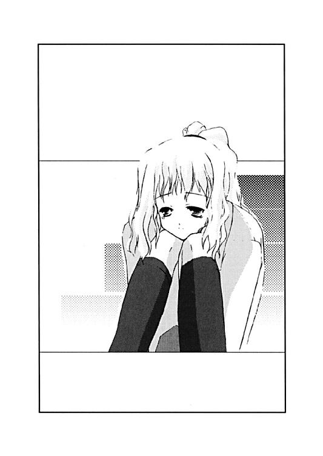
「......はい。一人だけですけど」
「その一人って言うのは、広尾先輩のことだよね？」
「そうですけど、どうしてわかったんですか？」
双海は泣くのも忘れるくらい驚いたようだった。だが、正吾はそれが当然という顔をして、それから笑ってみせる。
「リボンはすぐに見つかるよ、双海ちゃん」
「本当ですか？」
「うん。俺の考えが正しければ、きっとあそこにあるはずだ」
正吾のそんな言葉に、秋葉もその答えを待っているようだった。
「それってどこなんですか？」
「体育館だよ。広尾先輩が探してたのは、双海ちゃんのリボンだったんだ」
○
「広尾先輩！」
正吾が叫んで急に走り始めた理由は考えるまでもなかった。
なのに秋葉は自分が動けなくなるのを感じてしまった。
正吾の声に驚いたのかもしれない。でも、それよりも、正吾が走り出した理由が予想外だったからかもしれない。
まだ、演劇部の発表の時間まではかなり残っているはずだった。だから広尾景子が、体育館に来ているハズはないのだ。
しかし目の前の現実は、それを否定する。
景子は確かにその場にいて、今、問題の体育館の舞台の袖の部屋へと入ろうとしている。自分たちは体育館の入口のところで見ていて気付いたのだから。
「あっ！」
双海が短く驚く声を上げたらしい。それが秋葉の耳に届いた。
そして、そんなことを思っている間に、秋葉の目の間で正吾がスゴイ勢いで走って、離れていくのが見えた。
──運命が変わってしまったの？ だとしたら、それはいつ？
そんな疑問を抱えたまま、秋葉は正吾を追いかける。でも、足の速さが全然違っていた。
「正吾クン！」
思わず叫んでいた。だが正吾には届かなかったようだ。正吾はそのまま走っていく。
──運命が変わってしまったんだ
秋葉は走りながら、静かにそんなことを思った。
──原因はきっと私だ
そうも秋葉は思った。
景子に体育館に近づくなと言ったのが、逆に彼女がそこに双海のリボンがある可能性を早くに気付かせてしまったんだ。
演劇部の関係者は今日は体育館に集まっている。双海が朝、リボンをなくしたなら、きっとその辺りだろうと考えるのは自然な成り行きだった。
事故に巻き込まれるのを止めたつもりが、逆に巻き込まれる時間を早めてしまった。しかも、それは自分の言い方が悪かったのだ。
景子が一美にライバル意識を持っているのは知っていたはずなのに。一美の名前を出して、それで安心していた自分に気付いた。
──なんで気付かなかったんだろう？ それがマズイことになるって
秋葉はそう思うが、それ以上のことは何もできなかった。
「正吾クン！」
秋葉は正吾の名前を呼んで、さらに不安が増すのを感じた。
正吾はきっと気付いている。それがわかった。このままでは景子が舞台装置の下敷きになって死んでしまうのだ、と気付いている。だから止めるつもりなのだと、秋葉は気付く。
そしてまた不安を感じた。
「正吾クン！」
秋葉の足では正吾に追いつくことはできなかった。悩みや不安を抱えている秋葉はいつもより足が遅かったかもしれない。でも、正吾は迷いなく一心不乱に走っていく。
遠ざかった正吾が扉の向こうに飛び込むのがわかった。
「広尾先輩！」
正吾の叫び声が聞こえた。そして正吾が視界から消える。扉の向こう、体育館の舞台の袖の部屋の中に消えてしまったのだ。
それから何かが落ちる音と振動が立て続けに起こった。
「正吾クン！」
秋葉は、その音が何を意味するのか知っていた。
舞台装置が崩れたのだ。それが十一月十三日の運命なのだ、と秋葉は正吾に聞かされていた。
「正吾クン......」
秋葉はもう走れなかった。正吾を呼ぶ声もかすれるようにして消えるのがわかった。
それでも秋葉はゆっくりでも前に進んでいた。双海は入口のところに立ったままなのだろうか。近くにいるらしい気配はなかった。
部屋に入った秋葉は、崩れ落ちた舞台装置を見つけた。木目調の床板の上に、倒れて壊れた足場と小道具が散乱している。
そして一人の少女が壁に背を向けて、そんな落下物を見つめていた。それが広尾景子だとすぐにわかった。
「正吾クンは？」
秋葉は自然に広尾景子が見ている場所へと視線を向けていた。
彼女の視線の先、木目の床の上には重そうな鉄の柱や木箱が散乱していて、その下には一人の少年が倒れていた。
「正吾クン！」
秋葉はまた正吾の名前を呼んでいた。
しかし返事はない。秋葉の耳に届いたのは、異常に気付いて走ってくる生徒達の足音。そして状況に気付いて上がる悲鳴だけだった。
「正吾クン？」
そんな声にかき消されるほど小さな声。
しかし応える声が聞こえた。
「秋葉？」
かすかな声。騒がしい部屋の中では消えてしまうはずのその声が聞こえた。それで秋葉は慌てて声のする方向へと走った。
「正吾クン！」
秋葉はまた名前を呼ぶ。その声に床に倒れていた少年が動いたのが見える。
ゆっくりと自分に乗っていた落下物を払いのけて、彼は体を起こすと今度は仰向けになってそのまままた倒れてしまう。その倒れた少年は間違いなく正吾だった。
「正吾クン！」
「......大丈夫だよ、たぶん」
起き上がれないまま正吾が小さくそんなことを呟くのが聞こえた。秋葉は正吾の近くによると彼の顔をのぞき込んだ。
「また心配させたみたいだね」
秋葉が何か言おうと思う前に、正吾が言った。秋葉は慌てて否定するために首を横に振る。
「正吾クンが無事なら、それでいいです」
「無事かどうかは、ちょっと自信がないけど」
正吾はゆっくりと立ち上がろうとする。途中、少しバランスを崩し、秋葉に寄り掛かるが、それでも一回、首を回すと彼は直立する。それから彼はオデコに触れて、慌てて手を離す。
「ここが一番、重傷かな？」
正吾が苦笑いするのが見えた。見るとオデコには大きなコブができていた。
「本当に大丈夫なんですか？」
秋葉に言われて、正吾は確かめるように辺りを見回す。
「あそこに倒れてたら、死んでたかもしれないけどね」
正吾は部屋の中央を指さす。そこは一回目の時、広尾景子が死に、二回目には彼が死んだ場所だった。
「舞台装置が崩れてくるって気付いた時、そこから逃げさえすれば、死なずには済むんじゃないかなと思ったんだ。だから広尾先輩を突き飛ばして、俺もそこから離れようと思ったんだけど......」
「だけど？」
「途中で転んで、下敷きになったわけ」
正吾は苦笑いを浮かべると、またコブの存在を意識する。それから正吾は景子の方を見て、彼女の様子を確認する。
景子は状況を理解できないまま、正吾の方を驚いて見ていた。
「先輩、大丈夫ですか？」
そんな景子に正吾が尋ねる。言われて景子は急に我に返ったように立ち上がると、何事もなかったかのように汚れた制服をはたいて、それからスッとした姿勢になった。
「大丈夫よ」
それから景子は毅然とした口調で答えた。
「人のことを心配している場合なんですか？」
しかし秋葉はそんな声を聞いていないかのように、正吾に話しかける。正吾は驚いて秋葉の方を振り返った。
「ごめん」
「いくら、どこに落ちてくるか知ってたからって......」
そこまで言いかけて、秋葉はもう何も言わなくなった。でも、怒っているわけではなかった。
秋葉は泣いていた。
「ごめん。無茶したよな、実際」
正吾は改めて、足場が崩れた場所を見て確認するように言った。
「いくら知ってるからってできないかもしれないとは思ったんだ。秋葉をまた泣かしてしまうかもしれないとも思った。でも、だからって広尾先輩を見捨てるような俺が無事だったからって安心してくれるとは思えなかったんだ」
正吾は頭をかいて、それから秋葉の肩に手を乗せる。
「だから、信じてやってみようと思った。広尾先輩を助けられる俺になれるって。なれなきゃダメなんだって」
「......うん」
秋葉が小さくうなずくのが見えた。その拍子に彼女の涙が落ちるのが見えた。
「秋葉のこと泣かせてばっかだよな、俺」
正吾は呟きながら、秋葉の頰に触れた。
それで秋葉は少し上を向いて正吾の顔を見る。涙の溜まったままの目は焦点があってなかったかもしれない。赤くなった顔が見えて、正吾は何でこんなに秋葉を泣かせてしまっているのかと改めて感じてしまう。
しかし秋葉の口元が笑みを浮かべる。
「私、泣くのはそんなに嫌いじゃないかもしれない。私、泣いてる時は正直になれる気がする。いつも何考えてるかわからないって言われるけど、泣いてる時はわかってもらえるような気がするから」
そう言うと秋葉はまた少し視線を落とした。正吾はそんな秋葉が少し照れているのかなと感じて、ほっとした気持ちになる。
「......そうかな」
「私、すごく嬉しくて泣いてるの。私が好きになったのが正吾クンで本当に良かったって」
「ありがと......」
そして心に余裕ができたせいだろうか。周りの視線が自分たちに集まっているのを正吾は感じた。見回すとよく知らない演劇部員たちに混じって、双海や一美の顔が見えた。
「私が貴博のところに行っている間にまた色々あったみたいだけど」
一美がそう言って、正吾たちの方に歩いてきた。なんだか不満そうな顔をして、正吾と秋葉、そして景子の方を見つめた。
「......えっとですね」
正吾はそう言って秋葉から離れると、景子の元へと歩いた。
「広尾先輩が双海ちゃんのなくしたリボンを探してくれてたんです」
「景子先輩が？」
一美が信じられないという顔で景子を見るが、景子は不本意そうな顔をして双海の方へ歩き出した。その右手には確かに双海のリボンが握られていた。
「お姉ちゃんにもらった大事なものなんでしょ。しっかりなさい」
景子がそんなことを言って双海にそのリボンを渡す。イマイチ状況がわからないままの双海だったが、それが自分のリボンだと理解して満面の笑みを浮かべる。
「あ、はい。ありがとです」
双海は受け取ったリボンをぎゅっと抱きしめて、それから何度も景子に頭を下げる。双海は急に泣きそうな顔をして、景子をじっと見つめた。
「ごめんなさいです」
「別に謝られるようなことじゃないわ」
「リボンのことじゃないんです」
「じゃあ、なんのこと？」
「双海は先輩のこと死んじゃえって思ってたんです」
双海の言葉に景子は少しだけ驚いたようだったが、すぐにそれもおさまる。
「大事なお姉ちゃんをいじめる悪い人だからかしら」
「です。でも、先輩は双海のリボンを探してくれるいい人だったんです」
「そんなことイチイチ気にすることじゃないわよ」
景子はそう言って話題を切り上げて、その場を去ろうとする。しかし双海は普段からは想像のつかないほどの素早さで景子の腕をつかんで引き止めた。
「......まだ何かあるの？」
「双海は先輩を呪い殺そうとしてたんです」
「は？」
その言葉には景子だけじゃなく、周りの人間も驚いてしまった。
「先輩がお姉ちゃんをいじめるから、殺してやろうと思って、クラスの人に教えてもらって殺そうとしてたんです」
「......そうなの」
「でも、呪っていることが他の人に知られたら、その呪いは双海に返ってきて、双海は死んでしまうんです。でも、それはきっと自業自得です。いい人の先輩を呪い殺そうとする双海は死んでしまった方がいいです」
もはや景子も何を言っていいのかわからないようだった。その場に集まったものたちも、双海の真剣な告白に言葉を失っていた。
「......そういうことだったのか」
「......みたいね」
そんな状況でなんとか思考が働いていたのは正吾と一美くらいだった。今朝、双海に事情を聞いた時の彼女の頑な態度の理由がこんなことだったとは思いもよらなかった。
「まさか、呪い殺そうとしてたなんて」
一回目のやり直しの時、双海が自分のせいだと思ったりしたのも、この辺が理由だったのだろう。そもそも十月一日の事件の時、現場に神社を選んだのも、この呪いの流れであの場所を見つけたからかもしれない。正吾はそんなことを思った。
「あなたの呪いなんて、私に効くわけないでしょ」
双海の告白を遮ったのは景子のそんな言葉だった。
「え？」
「あなたの呪いは全部祓ってたの。だから、あなたの呪いは無効。私は死なないし、皆に知られてもあなたは死なないわよ」
景子はそう言うと少しかがんで双海の顔をのぞき込んだ。
「だから、安心しなさい。あなたを泣かすと、うるさい人がいるから」
「......はいです」
双海は景子にそう答えると、ほっとした様子を見せる。
「景子先輩。ご迷惑をかけたみたいで、すみません」
一美がそんな状況を見ていて、二人の間に割って入るように話しかけた。
「双海のリボンも探してくれてありがとうございました」
「別にあなたに感謝されるようなことじゃないわ」
景子はそう言うとその場を去ろうと歩き始める。一美がそれを追いかけようとしたところで、景子が不意に立ち止まり振り返る。
「お礼を言ってる暇があったら、ちゃんと本番のことを考えてほしいわね。あなた、ちょっと妹さんのことを気にしすぎだわ」
「......そうですか。それはご忠告ありがとうございます」
憮然としながら一美はそう答えた。景子はそんな一美を確認して満足したのか、今度はそのまま部屋を出ていってしまった。彼女を心配していた演劇部の部員達もそれに続いた。
それで、騒然としていた現場はいきなり静かになってしまったようだった。
「あの人も何を考えてるんだか」
一美の不満そうな声が沈黙を破る。正吾はいつもは鋭い一美がそんなことを言うので、なんとなく笑ってしまう。
「青山君はわかるってわけ？」
「広尾先輩は、市ヶ谷先輩に余計なことを心配して欲しくなかったんですよ、きっと。あの人、劇の成功を楽しみにしてるだけですから」
「どうだか」
一美はそうは言いながら、正吾の言葉を否定できずに少しイライラしているようでもあった。それから双海の方を見て、ため息をついた。
「でも、あの人の方が双海の気持ちをわかってたってのは事実なのよね」
「今日に限ってはそうかもしれませんね」
「やっぱりダメね。私、演劇のこととなると周りが見えなくなるみたい」
一美はそれだけ言うと黙ってしまった。正吾はなんとなく、あの十月一日のことを彼女は思い出しているんじゃないかと思った。そしてそんな彼の気持ちを肯定するように、一美はボソリと呟いた。
「お姉ちゃん、失格よね、私って」
「双海ちゃんは、そんなこと思ってないと思いますけどね」
正吾はそう言うと、秋葉の方を見た。秋葉もそれを聞いていたらしく、うなずくと小さく答えた。
「大丈夫ですよ、きっと。先輩はちゃんと頑張ってますから」
「だと、いいんだけど」
そう言うと一美は双海の方に歩き、何か話してそのまま部屋を出ていく。おそらく、劇の準備があるからというような話だったんだろうと正吾は思う。それで、自分たちも教室での喫茶店の仕事があるのを思い出す。
「船堀さん、怒ってるかな......」
「怒ってますよね......」
秋葉も正吾の言葉に何を考えているかわかったらしく、そんなことを言う。
「そういえば、双海ちゃん。秋葉のエプロンは、どこかな？」
「......あ、家に忘れてきてしまいましたです」
言われて双海はしばらく考えて、オロオロとして申し訳なさそうな声をあげた。
「俺のせいかな、やっぱり」
一回目と二回目の時はちゃんと双海は持ってきていた。朝、いきなり市ヶ谷家を訪れたのが、原因なのは明らかだった。
「すみません」
でも、双海はそんな事情を理解することはできるわけもない。縮こまって謝っている。
「いや、双海ちゃんが悪いわけじゃないんだ。頑張って作ってもらったのに......ごめん」
正吾はそう言いながら、またあることを思い出した。
「そうだ。エプロンは余ってるんだった」
「え？」
「千尋がエプロンを着るのが嫌で逃げてるから、その分のエプロンが余ってるんだよ」
しかしエプロンは余ってなかった。
「......君は、ここで何してるんだ？」
正吾があてにしていたエプロンは、違う人間に使用されていたのだ。もちろん千尋が着ているわけではない。
「見ればわかるだろ？」
不満そうに答えたのは、千尋の弟の一尋だった。
「見ればわかると言えばわかるんだけど」
教室内を探すが千尋の姿はない。どうやら一尋は千尋の代わりにウェイトレスをさせられているということらしい。
それがわかってもどう言えばいいのかわからず、正吾は秋葉と、そして一緒についてきた双海の反応を見てしまう。秋葉も双海もイマイチ状況を摑めないという顔をしている。
「やっと来たのね。まったく委員長なのに、秋葉ったら」
そんなところに、少し機嫌悪そうに樹里子がやってきた。
「学校に来てるのは真鶴さんから聞いてたけど、こんな時間まで何してたの？」
「込みいった事情があって、ごめんなさい」
秋葉が謝ると樹里子は怒るのは止めて、少し穏やかな表情に戻る。
「まあ、何にもないのにサボるような秋葉じゃないだろうしね。秋葉の分も一尋君が働いてくれてたから」
「そうなんですか。ありがとうございます」
秋葉がそう言って一尋に感謝すると、一尋はなんだか照れ臭かったらしい。少し顔を赤くした。
「......俺は単にチヒロに言われたから手伝っているだけだよ」
「それにしても、いくら千尋に言われたからってエプロン着てウェイトレスとかするなよな」
正吾がそうボソリと呟いた。小さな声のはずだが、一尋はしっかり聞いていたらしい。途端に機嫌が悪くなった。嚙みつくように正吾を睨みつける。
「お前が抜け出してフラフラしているせいだろ？ チヒロが困ってるって言うから着てるだけで、そうでなかったら、誰がこんな服着るか！」
そんな一尋の言葉に反応したのは、双海だった。
「その服ダメですか？」
いきなりの彼女の発言に正吾が振り返ると、双海は泣きそうな顔をしていた。
「えっと......」
一尋はどうやら自分の言葉が原因と気付いてどうしたものかとオロオロし始める。そんなところに何か起こっているのに気付いたのか、ちょうど千尋がやってきた。
「そのエプロンは、この双海ちゃんがデザインしてくれたものなんだよ、一尋」
「え？」
一尋はそれで、状況を理解したようだった。
「いや、この服は悪くない......です」
慌ててフォローするがどうにも噓臭い。双海はそんな雰囲気を敏感に感じ取って、またうつむいてしまう。
「悪くない......どころか、けっこう好きかな、俺」
「けっこう好きですか？」
双海は尋ねながらもグズリと泣きそうになっていた。
「いや、けっこうどころかかなり好きだよ。可愛いし」
「似合ってるよね」
千尋がフォローなのかそんなことを言う。
「そうそう似合っている。なんというか、俺のために作られたんじゃないかって、錯覚するほどの素敵なデザインかなあ......なんて思ってたんだ、実は」
「......本当ですか？」
双海は少し落ち着いたようだった。それに気付いて一尋はさらに続ける。
「本当だよ。俺、こんな可愛いエプロン見たことない。今日だけじゃなくて、これからも着たいかなあ」
「それじゃ、今度作ってあげますから着て下さい」
「え？」
「噓なんですか？」
またジワリと涙がにじむ。
「いや、本当だよ。絶対本当。くれるなら、俺は喜んで着るよ。約束する」
「じゃあ、あとでサイズを測らせてください」
双海が笑顔を取り戻したようだった。しかし一尋は微妙な顔をしている。
「いいよ。うん、必要だね、サイズ......」
「一尋は女物の服が似合うから、エプロンだけじゃなくてもオッケーかもよ」
千尋がそう言って一尋の頰を左右に引っ張る。無理にでも笑えという合図らしい。
「そうそう。俺、自分で言うのもなんだけど女物の服が似合うんだよ」
双海はそんなことを言う一尋をじっと見て、それからニコッと笑った。それは一尋の言う通りだと思ったということだろうと周りの人間は理解する。それを知ってか千尋が呟く。
「ま、一尋が私より女っぽいのは事実かな」
「チヒロは俺のことをそんな風に見てたのか......」
一尋はなんだか逆に腹が決まったらしかった。
「じゃあ、俺は仕事に戻るから」
彼はそう言って、ウェイトレスの仕事に戻った。
「ある意味潔いヤツだよな、千尋の弟って」
正吾はそんな姿に呟きをもらし、千尋はそれを静かに肯定した。
「そうだね。その辺は男らしいって気がする」
○
「結局、皿洗いはする運命なのかな」
「いいんじゃないですか。こういうのもけっこう楽しいですし」
正吾と秋葉は裏方に回され、一緒に皿を洗っていた。午前の番だった貴博と美貴は、どこに行く予定もないらしく、そんな二人を手伝ってくれていた。
「まあ、乃木坂は正吾と一緒ならなんでもいいんだろうけどね」
「だよね」
客は午後に入って減る一方だったのですることもなくなって、すぐに落ち着いてきた。
「そういえば、貴博、その格好」
一休みしたところで、正吾は今更のようにそれに気付いた。
貴博は下にジャージを着ている。それはつまり、コーヒーをズボンにこぼされてしまったということに違いなかった。
「あ、これ？」
しかし貴博はなんだか上機嫌でジャージを横に引っ張って、それをアピールして見せる。およそファッションセンスにうるさい彼の行動とは思えなかった。
「私がコーヒーをこぼしちゃったのよ」
美貴がそんなことを言って、少し縮こまるが、貴博は相変わらず上機嫌だった。
「だったら、なんで貴博は喜んでいるわけ？」
正吾はそういえばと思い出す。一美に貴博の危機を忠告したし、一美も貴博のところに行っていたと話していた。貴博の機嫌の良さはその辺りにあるらしい。
「一美がさ、俺の危機に現れてくれたんだ。今日は演劇で忙しいから勝手にしてろとか言ってたんだけどさ」
正吾は言われて、一回目のやり直しの時のことを思い出す。それで、あの時の自分の代わりを一美がやったということだろうと理解する。
「って、ことは一美さんが......」
それ以上はさすがに言えなかった。言わなくても貴博の反応を見れば、正吾は想像通りだとわかった。
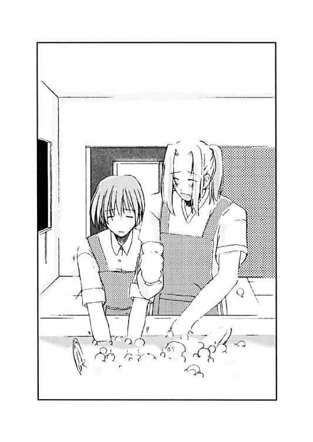
「一美さんがどうかしたんですか？」
状況を理解できないのは秋葉だけだったらしい。当然の疑問を正吾に尋ねてきた。
「いや、秋葉は知らなくてもいいかなあ、きっと......」
正吾はそう言うと時計を見て、改めて事件がまだ解決していないことを思い出す。
「ちょっと、また出かけてきてもいいかな？」
今度は秋葉は理解できたが、貴博と美貴はわからなかったらしい。
「どこ行くんだよ、乃木坂とデートか？」
「いや、そうじゃなくて......」
正吾は言われて、確かに一人で出かけた方が良いように感じる。
「私も一緒に行きます」
秋葉はそう言うが、正吾はそれを断る。
「二人して抜けると、また船堀さんに怒られるだろうし、すぐに戻ってくるから」
正吾はそれだけ告げると、もう一度時計を見て、教室を出ていった。
まだ、事件が起こるには早い時間のはずだった。
事故の方は食い止めることができた。
双海がなくしたリボン。それを景子が探していて、舞台装置の下敷きになるという悲劇。それを正吾は食い止めた。
しかし今日、これから事件はまだ起こるのかもしれない。
あの一回目のやり直しの時とは随分と状況は変わっている。でも、運命はそれでも歪みを修復しようとして動くものだと、正吾は知っていた。
しかし皿洗いをしている秋葉が今更、さらわれたりするのだろうか？
教室でウェイトレスをさせられている一尋が、演劇部の部室で犯人に殺されるだろうか？
秋葉がさらわれないなら、樹里子だって事件に巻き込まれないんじゃないだろうか？
そんなことを思うが、事件の全貌は未だに謎だった。
犯人の手がかりも全然ない。前の時は犯人を見ることができたが、今回は一度も見ていない。正吾が見たのは、すでに脱ぎ捨てられたあの悪魔の衣装だけだった。
「一体、誰なんだろう、犯人は？」
正吾は、劇場に変わっていたトーカの世界のことを思い出す。
あそこにいた人間の中に犯人がいるのだろうか？ そんな疑問を感じ、正吾は、いないかもしれないとも思う。トーカが問題にしていたのは、あくまで偶発的に起こった『事故』に過ぎないはずだ。あの世界も、その『事故』を解決しようとしている正吾のイメージの世界みたいなものなのだろう。だとすれば、もうあの世界にヒントは期待できないかもしれない。
それでも正吾は何か思い出せればと思って記憶をたどった。
「悪魔の衣装が飾ってあった部屋にいたのは一年一組のヤツラだったんだよな」
そう呟いても、正吾は何の意味があるのかはわからなかった。
「やっぱり秋葉に相談した方がいいかもしれないな」
正吾は探したいところもないのだから、むしろ皿を洗いながら秋葉と状況を確認する方がいいんじゃないかと気付いた。
だが、それは少し遅かった。
「貴博、秋葉は？」
教室に戻ってきた時、正吾は嫌な予感がした。
そこにいるべき人間が誰もいなかったからだ。
ウェイトレスをしているはずの一尋がいなかった。それを見張っているはずの樹里子もいない。そして裏でお皿を洗っているはずの秋葉の姿もなかった。
「いや、戻ってきてねえけど」
いたのは貴博だけだった。美貴の姿もない。
「戻ってきてない？」
「お前が戻って来ないから、船堀と一緒に探しに行ったんだけどな」
貴博はのんびりとそんなことを言っていた。しかし正吾が真顔なのに気付いて、何かマズイことが起こったらしいことを察したようだった。
「なんかあったのか？」
「いや、まだないけど、これから起こるかもしれない」
「......また乃木坂が死ぬってのか？」
「乃木坂さんは死なないと思うけど、さらわれるかも......いや、もうさらわれたかもしれない」
「心当たりはないのかよ」
「体育館だ。体育館に探しに行くと、途中で船堀さんに会うんだ」
正吾はそこまで言うと急いで駆け出した。それを貴博が追いかけてくる。
「しゃあねえな。一緒に探してやるよ」
「ありがと」
二人が階段を降りていくと、二階の踊り場のところで樹里子の姿が見えた。その光景が正吾の記憶の中の一回目と重なる。
それで安心すると同時に、正吾は確実に運命の再現が行われているということを自覚する。
「青山君！」
青い顔をして樹里子が正吾に話しかけてきた。これも同じだった。正吾はそれで知ってはいるのだが思わず尋ねてしまう。
「......どうしたの？」
それで立ち止まった正吾を置いて、貴博はそのまま走っていく。これも同じだ。
「先に行ってるぜ！」
そんな貴博を見送りながら、正吾は落ち着きを取り戻しつつある樹里子に尋ねる。
「何かあったの？」
「秋葉が、秋葉が連れてかれちゃったのよ」
「誰に？」
聞かなくても答えはわかっていた。一回目の時は一尋のことだと思ったが、今回はそれが違うのを正吾は知っている。
「悪魔みたいな格好した人が、秋葉を連れていったの！」
「悪魔？」
「そうなんかヒラヒラした黒い服を着た人だったと思う。その人が秋葉を捕まえると、そのまま走り出したの。私、追いかけたんだけど、見失ってしまって......ごめんなさい」
「いや、船堀さんが謝ることじゃない。俺が目を離したのが悪かったんだ」
正吾は、自分が運命を甘く見ていたことを自覚する。事故のことばかりじゃなく、今日がこういう日であるのは、決められた運命だったのだ。
どういう形であれ運命は元に戻ろうとして、正吾が作り出した変化を打ち消そうとする。
「俺は体育館の方を探してみる。その服は演劇部の衣装なんだ。何か手がかりがあるかもしれない」
「それじゃ私は演劇部の部室の方を調べてみるわ。もし見つからないようなら、そっちに後で来てくれる？」
「わかった。それじゃっ！」
正吾はとりあえず、一回目と同じように行動して、そのまま階段を降りていく。
しかしそこで正吾は異変に気付いた。
一階はスゴイ人込みだった。体育館へと向かう人が集まっているらしい。階段を降りたところで正吾は立ち往生してしまう。
どうやら一回目とはタイミングが変わっているらしい。まだ雨が降ってくる気配もなかった。
「外から行くか？」
そう思って見回すが昇降口の方も人が集まっていた。そこへ続く廊下も人で溢れている。
「どうしてこんな時に......」
正吾は焦る気持ちを感じて、どこか通れる場所はないかと改めて見渡す。しかし、人込みの中を抜ける以外に進むことはできそうになかった。
「......待てよ」
その時、正吾の頭の中で一つの考えが浮かんだ。そして、それがどうやら正解だということを正吾は直感した。
「そうか、そういうことだったのか。なんで気付かなかったんだ、こんなことに......」
「もう体育館に行って来たの？」
そう言った樹里子はなんだか慌てているようだった。
演劇部の部室である美術室。その中で樹里子は立っていた。部屋の中の配置は正吾の記憶の通りだった。しかしまだ糸は張り巡らされていないし、樹里子が縛られてたりもしていない。そして、一尋が殺されていたりもしなかった。
「途中で引き返してきたんだ。混んでて戻ってくると時間がかかりそうだったから」
「そうなの。私の方はここを調べようと思ってたんだけど......」
「まだ、調べ始めたところってことだね」
正吾は言いながら迷わず、配置替えされて壁のようになっているロッカーの後ろのスペースへと潜り込む。
「そっちに何かあるの？」
樹里子が心配そうに尋ねてきたが、正吾は短く答えるだけだった。
「秋葉がいる」
「秋葉が？」
樹里子が驚く間に、正吾はロッカーの後ろで縛られている秋葉を見つけだしていた。声を出せないようにハンカチで口を塞がれているが、正吾が来たのに気付いて低く声にならない声を上げる。
「すぐ、外すから」
正吾は落ち着いた口調でそう言うと、秋葉に近づいてハンカチを外し、縄を解いた。
「正吾クン、助けに来てくれたんだね」
自由になると嬉しそうに秋葉は正吾に抱きつく。
「また心配かけたみたいだけどね」
正吾はそう言うと追ってきた樹里子の前というのもあったのか照れて秋葉から離れる。
「正吾クン、あのね......」
秋葉はそう言って状況を説明しようとするが、正吾はそれを止めた。
「俺を探してる途中、いきなり意識を失って気付いたらここにいたんだろう？」
「そうですけど、どうしてわかったんですか？」
「もうわかったんだ。この事件のことが」
正吾の言葉に秋葉は驚き、続きを期待するが正吾はそのまま黙って何も言わなかった。
「どういうことなの？」
沈黙を破ったのは樹里子だった。それを聞いて正吾が彼女の方を向く。
「今はちょっと説明しづらい」
正吾はそれから秋葉の方へと向き直る。
「秋葉は教室に戻っていてくれないかな。最後の仕上げをしないといけないから」
「私も残ります」
秋葉は毅然とした口調で告げるが、正吾はハッキリとそれを否定する。
「秋葉はここにいちゃいけないんだ」
「どうしてですか？」
「ここにいると、良くないことが起こるかもしれない。俺のことは心配ないから、教室で待ってて欲しいんだ」
言われて秋葉はまた何か言おうとしたが、それを飲み込んだようだった。それで、しばらく考えて口を開く。
「わかりました。正吾クンがそう言うならそうします」
正吾は秋葉の言葉にうなずき、秋葉はそれにうなずき返す。それから正吾が通ってきた隙間を抜けて教室へと帰っていく。
「それで、最後の仕上げっていうのはなんなの？」
樹里子はそう言いながら正吾の方をじっと見ていた。正吾は苦笑いを浮かべる。
「片づけかな、ここの」
「は？」
そして正吾は樹里子が驚いている前で、そのままロッカーや荷物を片づけ始める。
「なんで、青山君が片づけるわけ？ ここは演劇部の部室だし」
「まあ、でも秋葉をさらった犯人が配置を変えたみたいだから」
正吾がロッカーを持とうとすると、樹里子も手伝おうと近づいてきた。
「自分の彼女には手伝わせないあたりは、ちょっと好感が持てるけど......でも、犯人を探さなくてもいいの？ また秋葉がさらわれるかもしれないじゃない？」
「大丈夫。手伝いの件も犯人の件も、もうすぐ片づくよ」
正吾はそれから少し考えて、言葉を続ける。
「あと、五分もしないうちに片づくんじゃないかな？」
「どういうこと？」
わけがわからないという顔で樹里子が尋ねる。正吾はすぐにはそれには答えず、ロッカーを元の場所に戻してから、少し息をついた。
沈黙した二人のせいで、部屋に静寂が満ちた。そこに足音が響いてくる。
「いや、もう片づいたみたいだ」
正吾はロッカーを動かしたせいで見とおしの良くなった扉の方を指さした。それを合図にでもしたかのように扉が開いて、一人の少年が入ってきた。
それは一尋だった。
「やっぱり、キミが悪魔だったんだな」
正吾の言葉に一尋は固まり、じっと正吾の方へと視線を投げる。教室で見た時とは別人のような怒りの視線だ。だが、正吾が睨み返すと、一尋はそのままその場を逃げ出した。
「あ......」
気付いて樹里子が短く声を上げる。だが、正吾はどうでもいいかのように、そのままその場に立っていた。
「青山君、追わなくてもいいの？」
「その必要はないと思う」
「だって、彼が犯人なんでしょう？ 秋葉も教室に戻ってるし、彼が戻ったら......」
樹里子が心配そうに話すが、やはり正吾は特に慌てる様子を見せない。どころかむしろ余裕さえ感じさせている。
「船堀さんだって、彼が誰か知ってるんだろ？」
「真鶴さんの弟でしょ？ 教室でウェイトレスをしてた」
「それだけじゃないはずなんだ」
不意に正吾が真顔になった。言葉と表情に樹里子は驚く。
「え？」
「船堀さんと一尋くんは知り合いなんだろう？」
「同じ中学ではあったけど」
「もうとぼけなくてもいい。俺は、もうわかったんだ」
「なんのこと？」
「犯人は悪魔の方じゃなく、王子の方だったんだってね」
その言葉に樹里子の表情が明らかに変わるのがわかった。正吾はそれでも続ける。
「そして、その王子は船堀さんなんだ」
長い沈黙があった。じっと樹里子は怒った表情を浮かべたまま正吾を睨んでいた。
先に沈黙を破ったのは樹里子だった。
「いつから気付いてたの？」
「体育館に行こうとしたら、人が多くてとてもじゃないが行けそうにないと思った。それで、気付いたんだ。こんなところで悪魔の格好をして秋葉をさらったりできるはずがないって。俺一人でも通り抜けられないのに、船堀さんが騒いでいる中をさらって逃げたりなんて、誰にもできるわけがないんだ」
正吾の答えに樹里子はまた沈黙した。もう言うべき言葉もなかったのかもしれない。
「じゃあ、どうして船堀さんが、秋葉がさらわれたと言ったのか？ それは船堀さんが犯人だから以外に考えられない」
「私はただの協力者かもしれないわ」
「そうも思ったけど、きっと違うんだと思った。市ヶ谷先輩に劇の台本のことを聞いていたから、船堀さんの目的がなんとなくわかったんだ」
正吾はそこで一度言葉を切ると、何も言おうとしない樹里子にハッキリと告げる。
「船堀さんは俺と秋葉を別れさせるために、一尋君と手を組んで一芝居打つつもりなんだってね。この後、俺が体育館から戻ってくる前に、悪魔の格好をしたヤツに彼は殺されるってことになっていた。そういう台本だったんだ」
樹里子はそれに何も答えなかった。黙って怒りに耐えているらしい気配が漂ってくる。
しかし正吾にはすでに確信があった。一回目のやり直しの時、なぜか四人死んだのも、今はタダの勘違いだったとわかる。
トーカの言った通り、死んだのは三人だったのだ。
一尋は実際には死んではいなかった。ただ、正吾を脅えさせるために樹里子の描いた筋書きの中での演技に過ぎなかったのだ。
「考えてみれば、色々とおかしなことが多かった。わざわざこんな人込みが多いときを選んでなんで人をさらったりする必要があるんだろう？ 秋葉が目当てならもっと確実な方法がいくらでもあるはずだ。どうにもこの事件は芝居じみている、そう思った時、これがそもそも芝居なんだとわかったんだ」
「......もう全部わかっているってわけね」
樹里子がゆっくりとそう呟いた。その声は怒りに震えている。
「で、私をどうするつもり？」
樹里子が改めて正吾を睨みつけてきた。
「そういうことは考えてなかったな」
正吾は力の抜けた答えを返す。しかし樹里子は逆に興奮したようだった。
「それで私に情けをかけてるつもり？ 秋葉を教室に帰したのも、このことを彼女に知られたくないとか私が思ってると考えたんでしょ？」
「そうかもしれないけど。俺は船堀さんが悪い人だとは思えなかったから、どうしてこんなことをしたのか知りたかったんだ。俺は船堀さんを信じたいから」
慌てて反論するが、樹里子はおさまりそうにはなかった。
「何が信じたいよ。私のこと犯人だと疑っておいて」
わめくように、正吾に詰め寄りながら樹里子が叫んだ。だが正吾はそれには静かにハッキリと答えた。
「犯人なのは事実だよ」
「随分ときついことを平気で言えるのね」
樹里子は小さく呟いた。まさかそんなことをハッキリと告げられるとは思いもよらなかったかもしれない。そんな驚きの中で、正吾はさらに続ける。
「でも、船堀さんは悪い人なんかじゃないと思う」
「私は青山君を騙して、秋葉と別れるように仕向けようとしたのよ？ 一尋が死んでいるのを見て、私を見捨てて逃げるところを秋葉に見せつけて、二人を別れさせてやろうと思ってたのよ。それも、もうわかってるんでしょ？」
「それはそうだけど、だからってそれが悪い人だと思う理由にはならない」
「何を言ってるわけ？ 余裕のつもり？ どうせ私が何やっても上手くいかないとでも言いたいわけ？」
嚙みつくように樹里子が尋ねる。答えを待っているわけではない。自分の思いをぶちまけているだけだった。
「そうじゃない！」
それを正吾が叫んで止めた。樹里子はその声に驚き、また言葉につまる。
「船堀さんは死ぬつもりだったんだろ？ 俺が船堀さんを本当に助けるようなら、もう死んでしまいたいって思ってたんだろ？」
正吾は尋ねながら、一回目のやり直しの時の自分の死に際を思い出していた。
あれは自分が間違って、犯人の罠を作動させてしまったのかと思っていた。でも、今となってはハッキリとわかる。あれは、樹里子が自分で作動させたのだ。
樹里子はあそこで正吾が怖くなって逃げ出すと思っていたのだ。でも、正吾は逃げなかった。だから樹里子は、自分が間違っていることに気付いたのだ。
正吾は自分を見捨てて逃げるような人間ではない。秋葉が選んだ正吾はそんな人間だと彼女は知ったのだ。
だが、目の前の樹里子はそんなことは知らない。抱える状況のギャップが樹里子の猜疑心を増しているようだった。
「なんで、そんなことがわかるのよ」
樹里子は感情的になって叫ぶ。
「あなたに何がわかるのよ。秋葉の気持ちなんて、少しもわからないくせに。秋葉に好かれてるってだけで、秋葉と付き合って......。ズルイじゃない。そんなのズルイじゃない。今までは全然そんなそぶりもなかったくせに、いきなり付き合い始めて」
樹里子はもう自分でも何を言ってるのかはわからないのかもしれなかった。ただ目の前の正吾が許せないのかもしれない。自分が考えたことをことごとく覆されたのが許せなかったのかもしれない。
「俺はズルイかもしれない。きっと船堀さんの方が秋葉のことをわかっているとも思う」
正吾はだから考えなしに素直に自分の思っていることを言うだけだった。
「......何それ？」
「でも、わかっていることばかりが、大事なわけじゃないと思う。わからないことがあってもいいと思う。それでお互いに傷つくことがあっても、いいと思う。それが後で、必要だったんだって思えるなら」
正吾は黙っているままの樹里子の顔を見つめた。
「俺は船堀さんが羨ましいよ。自分が死ぬのも厭わないほど秋葉を好きなんだから。俺はそこまで好きだって自信はない。だから、信じたいんだ。船堀さんの気持ちが間違ってないって。それで本当に死んでしまうのは間違ってるけど、船堀さんの好きだって気持ちは絶対に間違ってないと思う」
「だったら、だったらどうして、私はこんなに惨めな思いをしないといけないのよ。陥れようとしていた人に説教されて、自分の気持ちを肯定されて......。間違ってないなら、どうして私はこんな気持ちにならないといけないのよ！」
樹里子はうつむき、手で自分の胸元をぎゅっと摑む。話すにつれて手にこもる力はどんどんと増していく。
「市ヶ谷先輩だって、そうじゃない。私の台本を喜んでくれて、私には才能があるって言ってくれたのに、私がこうした方がいいって直したら急に反対して。結局、あなただってあの人だって同じよ。私なんかどうとも思ってない。だから、そんな適当なことが言えるのよ」
「それは違う」
正吾が反射的に否定した言葉に、樹里子も反射的に否定する。
「違わない。違うはずない」
樹里子は叫んで、正吾を突き飛ばして部屋から飛び出そうとする。正吾はそれでもバランスをとると、樹里子の腕を握って彼女を止める。
「市ヶ谷先輩は船堀さんのことをちゃんと認めている。俺のことは信じなくてもいい。でも、市ヶ谷先輩のことは信じて欲しい」
「馬鹿じゃないの？ なんでそんなこと言えるわけ？」
「市ヶ谷先輩は俺とは違ってちゃんと人を見てる。きまぐれとかそんなんで船堀さんを選んだんじゃないはずだ。台本だって、最初の台本が好きだったんだ。直した台本は上手くなってるけど、嫌な話になっているって、市ヶ谷先輩は言ってた」
「......嫌な話に？」
「先輩も俺と同じ気持ちなんだと思う。人を好きになった気持ちが間違ってたなんて、そんな話になんてしたくないんだ。俺は直す前の台本も、最終的に市ヶ谷先輩がやるつもりになった台本のことも知らない。でも、きっとそういう話なんだと思う。そうなんだろ？」
正吾の言葉に樹里子は動かなくなってしまった。それが何を意味するのかは正吾にはわからなかった。ただ、もう感情的に叫ぶ気配はなくなっていた。
「......離してよ」
静かに樹里子が呟いた。
「え？」
「離してって言ってるの。あなたの言う通りかどうか確かめるわ。市ヶ谷先輩が、最終的に台本をどうしたのかは私も知らない。だから、確かめるわ」
その言葉に正吾の手が緩んだ。樹里子はそれを知って、ゆっくりと腕を引く。
「私の気持ちが間違ってたかどうか、それでわかるんでしょ？」
樹里子はそれで落ち着きを取り戻したらしい顔になると、そのまま部室を出ていく。
「船堀さんは間違ってないよ。俺はそう信じてる」
正吾はそんなことを樹里子に告げるが、樹里子は何も聞こえなかったのか行ってしまった。
正吾はそんな樹里子が見えなくなるまで待つと、教室に戻ることにする。
階段は静かだった。どこの教室も随分と静かになっているような気がした。きっとそれはもう文化祭が終ろうとしてるからなのかもしれないと正吾は思う。
「......秋葉」
秋葉は正吾に言われた通り、教室で待っていたようだった。廊下で正吾が来るのをキョロキョロと待っているのが見えた。そんな秋葉が正吾の顔を見つけて、その表情が明るくなるのがわかった。
「正吾クン」
秋葉が自分の名前を呼ぶのが聞こえた。正吾はその声で、また心配させてしまったんだろうなあと思った。
「犯人はどうなったんですか？」
「......どうなったんだろう？」
別にとぼけるつもりはなかった。だが、どうにもなってないというのが正吾の正直な気持ちだったのかもしれない。
「正吾クン？」
「いや、きっともう大丈夫だから」
「......犯人は誰だったんですか？」
それでも心配らしい。秋葉にそう尋ねられて正吾が言葉につまる。
「わからないんですか？」
「いや、わかってはいるけど......」
正吾が答えに窮しているところに、貴博が中から現れた。
「無事に解決したのか？」
「たぶんね」
「そっか。良かったな。じゃあ、劇を観に行くか」
貴博はそう言うと体育館へと向かおうとする。
「そろそろだっけ？」
続こうとする正吾を秋葉が腕をつかんで止めた。
「犯人は誰なんですか？」
「......それは言えない」
「どうしてですか？ でも樹里子は教えてもらったんですよね？」
「そうなるかな」
「どうして私には言えなくて、樹里子には言えるんですか？」
秋葉は少し怒っているようだった。いや、本当はすごく怒っているが、それを隠そうとしているのかもしれない。
正吾はそれに気付いて秋葉の気持ちを思った。
確かに納得できないだろうと感じた。でも秋葉に本当のことを言う気にもなれない。
「私に言えないのは何故なんですか？」
「それも言えないんだ」
正吾は言ってしまって秋葉が傷つくのがわかった。そして言葉につまった。もうこれ以上何か言えば、秋葉を傷つけるだけだろうと感じた。
でも何も言わないのも秋葉を傷つけるだろうとも思う。
「乃木坂はさ、正吾が何か後ろ暗いことをしているとでも思ってるわけ？」
沈黙した二人の間に貴博が入ってくる。
「え？」
「正吾が自分の保身のために、乃木坂に黙ってるようなヤツだと思ってるわけ？」
「......そうは思いませんけど」
「じゃあ、それでいいだろ？ 無事に解決したって言ってるし、正吾は器用に噓をつけるようなヤツじゃないんだしさ」
貴博はそう言うと、秋葉に向かって笑いかけた。
「そうですよね」
それで秋葉は何かを思い出したようだった。ゆっくりとその時のことを思い出しているらしく、目の焦点が少しぼける。
「あの時も正吾クンは言ってたんだよね。犯人が誰かは知らない方がいいって。でも知りたがった一美さんを、私は止めたんだよね」
「そういうこと。そのうち犯人の方から乃木坂の方に話が来るさ。だから、それまで待ってればいいだろ？」
「そうですよね」
秋葉は小さくうなずいて、摑んでいた腕を離した。
「正吾クンがそう言うなら、私、信じます」
秋葉はそう言って正吾の手を握る。
「ありがと」
正吾はそれを握り返すと、そう答えた。
「......言ったのは俺なんだけどね」
貴博がそんなことを小さく呟いて歩き始める音が聞こえた。だが正吾はそれを追いかけることはできなかった。
急にぐらりと世界が揺れたかと思うと、彼はそのまま意識を失ってしまったのだ。
○
目覚めると劇場だった。
見覚えのあるトーカの世界の劇場だ。すでにステージには灯がついている。
どうやら倒れた拍子に何かあったらしく目覚めるのに時間がかかったらしい。そんなことを正吾は理解する。
「大丈夫、正吾クン？」
トーカの声が聞こえた。トーカはステージの上でふわりと浮かんで、椅子に座ったままの正吾を見ている。
「......たぶん」
言いながら正吾は立ち上がり、歩き始めた。少しバランスが怪しい気もしたが、それもすぐに気にならなくなる。
「今回もなんとかなったのかな？」
ステージに上りながら正吾が尋ねる。
「うん。ありがとう、正吾クン」
トーカはそう言うと床に下りて、上ってきた正吾の周りを歩き始める。そんなトーカを追ううちに正吾はステージの上の景子に改めて気付いた。
「なんで気付かなかったんだろう。広尾先輩が双海ちゃんのリボンを探してるって」
「なんでだろうね」
トーカはいつものように、そんな答えとも言えない返事をする。正吾は今度は一美の姿を目にして、一回目のやり直しの時のことを思い出した。
「市ヶ谷先輩が逃げるように去っていったのは、広尾先輩がリボンを握っていたからだったんだな。死んだ広尾先輩が双海ちゃんのリボンを持っていたら、あの人ならそれを持って逃げたりするかもしれない。俺はそんなことも考えなかったんだな」
口にすると貴博がなんだか怪しかったのも、一美をかばっていたからじゃないかと思えた。実際のところはどうかはわからないし、今となってはどうでもいいことなんだと正吾は思ったりもした。
「市ヶ谷先輩も貴博も信じられる人間だって知ってたのに、なんで疑ってたんだろう？」
「本当に疑ってたの？」
「......どうだろう」
トーカは困った顔で正吾が答えたのがおかしかったらしい。小さく笑うと立ち止まった。
「もっと早く気付いてれば良かったって思ってる？」
「それは思ってるかな。二度目で船堀さんのことにも気付いていれば、もう少しなんとかできたんじゃないかって思う。俺って本当に鈍いよな」
「そうだね」
トーカはあっさりと肯定すると、正吾の顔を見てまた笑ってみせる。
「......やっぱり鈍いよな」
「正吾クンはそんな自分が嫌い？」
トーカにそう言われて、正吾はちょっと悩んでしまった。二度目の後、泣いていた気持ちをもう忘れてしまったような感じがした。思い出せないわけはない。でも、今はまた別の気持ちになっていた。
「けっこう好きかもしれない。なんだか情けないけど」
そう言うとなんだか笑っていた。
鈍い自分が好きと言って笑っている自分。それに気付いて正吾は驚いてしまう。
昨日までは絶対にそんなことは思ってなかったはずだ。それを改めて思う。
「良かったね、正吾クン」
トーカはそう言ってまた笑うとトコトコと歩き始める。ステージを降りて、扉の方へと向かって行く。正吾はそれに気付いて、慌てて追いかけた。
「ありがとう、トーカ」
「感謝するのはこっちの方だって言ったでしょ」
「でも、俺は本当に感謝してるんだよ」
「それは言わなくてもわかるよ。正吾クンはわかりやすいから」
トーカはそう言うと指を空に向けて笑った。
「トーカ。もう会えないのかな？」
そんな笑顔を見て、正吾は少し寂しそうに眉を寄せた。
「また事故が起こったら、正吾クンに頼む気ではいるけど、どうなのかな。もう会えないかもしれないし、すぐに会えるのかもしれない」
トーカもそれを口にしながら少し寂しそうな表情を浮かべる。
「会えないと寂しい？」
「寂しいかな、やっぱり」
「じゃあ、信じて。またいつか私に会えるって」
「そうだな」
正吾はそう言うともう悲しそうな顔をするのはやめた。
トーカをもうこれ以上困らせたくはなかった。だから笑顔で別れを告げることにする。
「また会おうな。今度はもっとゆっくりと会えるといいかな」
「そうだね」
トーカがそう言って扉を指さす。ガタンと揺れて、また帰る準備ができたことを告げる。
「正吾クンは、私が選んだとびっきりの人だから」
「......ありがと」
正吾はそれだけ言うと笑ってノブに触れた。
途端、扉が無数の破片に分かれて、その間から光が溢れる。正吾はその光に飲み込まれたかのように重力感覚を失っていく。そして消え去った床の下へと落ち始める。
「じゃあね、正吾クン！ お姉ちゃんによろしく！」
トーカの声が聞こえた。正吾はそれに答えるために精いっぱいの声を張り上げた。
「またね、トーカ！」
その声が届いたどうかわからない。正吾は闇の中にそのまま落ちていき、また意識を失ってしまった。
○
白い天井が見えた。そして薬品の匂いがしていた。
「......ここは？」
どこなんだろう。そう思いながら、なんとなく保健室なんじゃないかと正吾は思った。
あまり寝心地がいいとは言えない硬めの白いベッド。申し訳っぽい雰囲気の白い掛け布団。そこにいる自分に気付いて、その考えは確かなものとなった。
「そうか、あの後、保健室に運ばれたんだな」
正吾はそして額に湿布が貼られているのに気付いた。どうやらコブを冷やすためのものらしいが、どうにも目に染みる。
それから、ふと横に誰かがいるのがわかった。
「秋葉？」
思わず、その名前を呼んでいた。確信があったわけではなかった。ただの望みだけだったかもしれない。でも、相手はその名前に応えてくれた。
「気がついたんですね？」
その声だけで正吾にはそれが秋葉だとわかった。さらに彼女が顔をのぞき込んできて、正吾は安心した気持ちになる。
「トーカが秋葉によろしくだってさ」
そう言った自分に秋葉は少し呆れた様な顔をした。
「ごめん。また心配かけたかな」
「そうですね」
秋葉は言いながら自分が険しい表情をしているのに気付いて、少し慌てた仕草をする。自分が不機嫌なのを正吾に見られたくないと思っているのかもしれない。
「......貴博は？」
「赤井さんたちは劇を観に行きました。一美さんの晴れ舞台ですから」
「そうだろうな」
ということは、もう劇は終りかけているのかもしれない。正吾はなんとなくそう思って、観に来てくれと一美に言われた時のことを思い出してしまう。しかしそれはやり直しの一回目の時のことだったと気付いて、ちょっとだけ安心する。
「秋葉は観にいかなかったんだ」
ずっと側にいたのなら聞くまでもないことだった。正吾の言葉に秋葉は少し暗い表情を見せる。正吾はそれで慌てて上体を起こして、秋葉の方を見る。
「ごめん。俺のせいだよね」
「そうじゃないんです」
「え？」
「正吾クンをここに運んでくれたのは、赤井さんなんです」
「......だろうね」
「真鶴さんたちも手伝ってくれました。でも、赤井さん達は劇を観に行ったんです。正吾クンは大丈夫だからって、私も一緒に行くように誘われました。後で正吾クンを悔しがらせてやろうって言われました。でも、私は正吾クンが心配でずっとここで待ってたんです」
「......ありがとう」
正吾はそう言いながら、また秋葉が何を言いたいのかわからなくなってしまっていた。
「待っている間、私ってつまらない人間だなって思ってました。待ってても何もできないってわかってるのに、正吾クンが心配でここでじっとしてるだけ。だから皆のために頑張って疲れている正吾クンに楽しい話もしてあげられないんです」
「でも、そのおかげで、最初に秋葉に会えたんだよね」
正吾はそう言って笑ってみせる。秋葉はそんな正吾の言葉に驚いた。
「俺はきっとそんな秋葉だから好きになったんだと思う」
「そうなんですか？」
「だから無理して、貴博や千尋に合わせなくていい。違う人間なんだから、違ってていいよ。俺は俺で、秋葉は秋葉。貴博は貴博だし、千尋は千尋だよ。俺のために頑張ってくれるのは嬉しいけど、俺と同じになろうとするのは違うと思う」
正吾はそう言って黙って聞いている秋葉に言葉を続ける。その顔色からは秋葉が何を考えているかはわからなかった。でも正吾ができるのはいつだって同じだった。
自分の思うように素直に行動するだけだ。今の自分が噓をついているわけじゃないと正吾は思うと、もう言葉は自然に出てくる。
「俺も秋葉も自分の嫌なところって、たくさんあると思う。でも俺は俺のまま、もっとよくなっていきたいんだ。だから秋葉も、秋葉のままでいい。いや、秋葉のままがいい。秋葉のまま、もっと好きになれる自分になって欲しい......そんな気がしてるんだ」
「難しいですね」
秋葉は小さくそう呟く。でも秋葉の表情は笑みに変わっていく。
「すぐには無理かもしれないけど、きっと、いつかそんな自分になれるよね。ううん。なるように頑張る」
秋葉はそう言って自分に納得するように二度うなずき、それから正吾のことをじっと見つめた。
「私、正吾クンが好きだから」
そして笑っている彼女の唇がそう告げる。それからその唇が正吾に近づいてきて、彼のオデコに触れた。
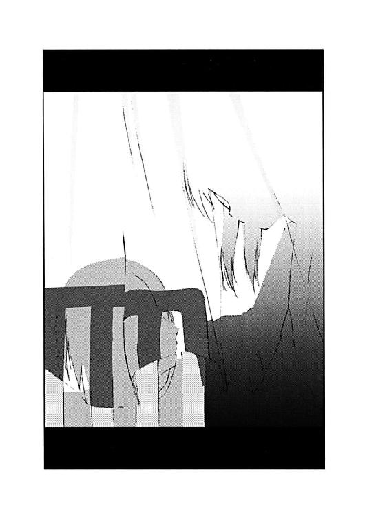
それはまるで怪我を治すための魔法のような口付けだった。
エピローグ そして犯人は自白する
雨はもう止んでいた。それでも暗くなりキャンプファイアーが始まるまでの時間で校庭が乾ききるということはなかった。
正吾は少しぬかるんだ土の上を歩きながら、前を歩く少女を追いかけていた。
その少女の名前は船堀樹里子。正吾は文化祭終了後に、戻ってきた彼女に呼び出されたのだった。しかし会話はなかった。呼び出したというのに、樹里子は黙って歩いているだけだった。
校庭の真ん中でキャンプファイアーの炎が揺れていた。照らされてできた影が樹里子の背中に移るのが見える。
「私のことをかばってくれたんですってね」
随分と歩いた後、樹里子がやっと話題を切りだしてきた。
「かばったというかな......」
「そのせいで、秋葉とケンカしたんでしょ。一尋から聞いたわ」
「一尋？ 貴博じゃなくて？」
「一尋よ。彼、あの後もあなたのこと追い掛けてたみたいだから」
「なんで、そんなことを？」
「......あの子も少し複雑なところあるから」
「はあ」
イマイチよくわからないと正吾が声をあげると、樹里子は本来の話題に戻す。
「で、青山君は秋葉とケンカしたわけよね？」
「いや、ケンカって程じゃないけど」
「十分、ケンカよ。秋葉にとってはケンカ」
「そうかな」
正吾は、そうかもしれないとも思う。
「なんで、そんなことをするわけ？」
「なんでって言われても、船堀さんのこと言うわけにいかなかったし」
「言わないせいで、秋葉とケンカして別れることになるとか思わないの？」
「......そう言われると、思わなかったな」
正吾が素直にそう言うと、樹里子は立ち止まって振り返った。それで、その顔には笑みが浮かんでいるのがわかった。
「青山君って、本当に鈍いのね」
「今日は、かなりその辺を自覚したつもりなんだけどね」
正吾は苦笑しながら小さく呟いた。
「ありがとう。助かったわ」
不意打ちのように樹里子はそんなことを口にする。
「は？」
「あなたのおかげで色々助かったからありがとうって言ってるのよ」
正吾はまったく意味がわからず、樹里子の方を見るくらいしかできなかった。樹里子はそんな正吾を見ながら、また笑った。すこし意地悪な笑い方だったかもしれない。
「どういう心境の変化なんだって思ってるでしょ？」
「いや、全然意味がわからないだけなんだけど......」
「劇は観た？」
樹里子は正吾の疑問には答えず、話題を変えたようだった。
「いや、気を失っている間に終ってた」
「人に観ろって言っておいて随分といい加減ね」
「......そう言われると返す言葉がないな」
「あなたの言う通りだったわ」
樹里子は正吾が会話についてくるのを確認もせず、また話を続ける。
「市ヶ谷先輩が選んだ劇は、最初に私が書いた台本の通りの内容だったわ。そして、中身もあなたが言った通り。気持ちを否定したりしない、甘ったるい奇跡の物語」
樹里子は自虐的なもの言いではあったが、不愉快そうな表情ではなかった。なんだかそんな自分を楽しんでいるように見える。
「あなたの言う通りだったってことよね。それがわかったら、私、泣いてた。なんで私があんな台本を書いたのか。私は、秋葉に自分のことを好きになって欲しかったんだなって、わかった。そういう気持ちで書いてて、それでハッピーエンドの話にしてたんだって」
「だったら、そのままの方が良かったと思うけど」
「そうなんだけど、秋葉があなたと付き合い始めたから、私はそれで恥ずかしくなったんだと思う。勝手に自分で夢を語ってたことが。好きだから幸せになれる。そんなことあるわけないんだって思って、自分で書いた台本なのに、すごく嫌になった。そんなのを自分が書いたってことだって認めたくなかったのかもしれない」
樹里子は黙って、じっと正吾の方を見つめた。正吾はそれでやっと会話に追いつけた気持ちになる。
「でも、市ヶ谷先輩はそれを変えるのを反対した。だからケンカになったんだ」
「そう。でもね、今ならわかる気がする。あの時は、私が否定されたのかと思ってた。でも、市ヶ谷先輩は、逆に私を肯定しようとしてくれてたのよね。それがわからなくて、私、あの人と衝突して......すごく情けない。あなたがいなかったら、私、ずっとすねたまま気付けないままだったかもしれない」
「そうだとすると、俺は格好いいね」
正吾は笑っていた。そんな大層なものじゃない。それは自分が一番わかっていた。でも、人に言われるとやはり嬉しい気持ちにはなる。
見ると樹里子も笑っていた。
「あ、ありがとね。散々なことしておいて今更だけど」
「いや、感謝したいのはこっちの方なんだ」
正吾はそう言って、少し真面目な顔をしたつもりになった。樹里子がそれを見て笑ったところを見ると結果は伴わなかったらしいのがわかる。
「俺、昨日までは何も考えてなかったと思う。船堀さんがいてくれて、少しだけだけど秋葉のことをちゃんと考えられるようになれた気がする。気がするだけなのかもしれないけど、それで俺は優しい気持ちになれた気がするんだ。だから──」
正吾は少し間をおいて続ける。
「ありがとう」
樹里子は自分に向けられたその言葉がまるで理解できないようにじっと正吾の方を見ていた。そして沈黙が続き、不意に彼女は下を向く。
「あなたって本当に憎たらしい人よね」
樹里子が小さな声で呟いた。それがあまりに小さく突然だったから正吾には聞き取れなかった。なので、思わず聞き返す。
「え？」
でも樹里子はもう繰り返さない。ただ、こう言って、秋葉のところにもう行くように手で合図する。
「あなたが、女の子だったら良かったのになって思っただけよ。そうしたら、こうやって争うこともなかったのにねって思ったの」
「でも、こうして話せたんだし、別に争うのも悪いことじゃないと思うよ」
「あなたみたいに鈍い人はそうでしょうけど、私はもう沢山よ」
樹里子はそう言いながら、少し呆れた様子をみせてはいたが笑っていた。それで正吾もつられるように笑ってしまう。
「......けっこう気にしてるんだけどな。その単語」
「そういや、なんでキャンプファイアーやってるんだろう？」
樹里子と別れて、秋葉を探しているうちに今更のように正吾はその疑問にぶちあたった。
二度目のやり直しの朝、雨が降るからキャンプファイアーはお流れだと考えていたのも思い出される。
地面が濡れているのに気付いていたのに、なんでそれに気付かなかったのか自分でも謎だった。突然の雨に薪は濡れてしまったはずだ。すぐ乾くほどの雨ではないのは、足下の土が証明している。
「あら、正ちゃん。乃木坂さんはどうしたの？」
自分を呼ぶ声が聞こえた、正吾の自分の鈍さへの考察は中断される。正吾のことを『正ちゃん』と呼ぶのは優子しかいない。
「優姉、まだ学校にいたの？」
「用事が少しあったから」
「用事？」
いまさら優子にどんな用事があったというのだろうかと正吾は思ってしまう。
「頑張ってる正ちゃんに、お姉さんからプレゼントをしようと思ってて」
「プレゼント？」
「キャンプファイアーができるようにと思って、薪を雨から守ったのよ」
「は？」
どうも話の流れが見えない。
「体育館から青いシートを持ってきてかぶせておいたの」
「体育館から？ 青いシート？」
「演劇部が使っていた舞台の袖の部屋に適当な大きさのシートがあったから借りたのよ」
正吾は言われて思わず固まってしまった。
そういえば、朝はあの場所は床が青かった。でも舞台装置が崩れた時には木目が見えていた。
「って、ことはもしかして優姉のせい？」
「え？」
「いや、こっちの話。それにしても、なんで雨降るってわかったの？ 天気予報じゃ晴れって言ってたと思うけど」
「そんなの空を見てればわかるし、それに、私、途中からは知ってたのよ」
「は？」
「天使が夢の中に出てきてね、あと三回、同じ日を繰り返せって言われたの。だから、知ってたのよ。信じられる？」
「天使？ 三回繰り返す？」
「信じられないかな、やっぱり。こんなことばっかり言ってるから、私、電波入ってるとか言われるのよねぇ」
「もしかして、その天使って、エイミって名前じゃないのかな？」
優子は言われて、本当に驚いたという顔をする。
「なんで、知ってるの、正ちゃん。そうそう、ほら、今日、劇のヒロインやってた市ヶ谷一美さんみたいな感じの天使でね。でも、少し大人びてて優しい感じだったかな」
あきれてモノも言えない感じの正吾。それに気付いて、優子はいつものごとく尋ねる。
「あら、正ちゃん、私、また何かマズイことしたかしら？」
「......かなりね」
とは言いつつも、正吾は笑っていた。
確かに気付いてしかるべきだった。あれほど露骨にトーカの世界でヒントが出ていたのに、なんでわからなかったんだろうと正吾は思う。そう考えるととても優子を責める気にはなれなかった。
「でも、優姉のおかげな部分もあるし、ありがと」
「え？ なんのこと？」
「いや、うん。説明すると長いからさ」
「そうなの？ まあ、正ちゃんが喜んでくれたならそれでいいけど」
「あと、素敵なプレゼントありがとうね」
「どういたしまして」
優子はそう言うとニコリと笑った。
「そうだ、優姉。あの俺が小学六年生の時探してたって女の子だけど......」
正吾は秋葉から聞いた衝撃の事実を告げようとする。しかし優子がそれに割り込むように尋ねてきた。
「乃木坂さんがどうかしたの？」
「......知ってたの？」
「知ってるわよ。だって私、あのあとちゃんと探したんだから。でも、正ちゃんが忘れてたから黙ってたってわけなの」
「じゃあ、あの話は？」
「そうでもしないと正ちゃん鈍いから気付かないかなと思って」
「......そうですね」
正吾はもう何も言えなくなってしまった。
「正吾クン。ここにいたんですか？」
そこに秋葉がやってきた。それで正吾は改めて優子に感謝して別れを告げる。
「ありがとね、優姉」
「はいはい」
それから正吾は秋葉と一緒にキャンプファイアーの見える適当な場所に陣取って座ることにする。
「さっきのはどういう意味なんです？」
「このキャンプファイアーは優姉のおかげなんだ。あの人が、雨から薪を守ってくれてたんだってさ」
「そうなんですか」
秋葉はイマイチ意味がわかってないという感じではあったが、正吾が笑っているのが嬉しかったらしい。合わせるように笑っていた。
「優子さんって面白い人ですよね」
「時々、会うだけなら、俺もそれには賛成だけどね」
視線を炎の方に向けると、生徒達が炎を囲んで暴れているのが見えた。なんだかそれを遠巻きに見ているのがもったいなく思えてきて、正吾は秋葉の手を引いてそっちへ向かうことにする。その途中、なぜかふと思い出したことがあった。
「そういえば、今回は秋葉のエプロン姿を見そこねた」
「え？」
あまりに唐突で秋葉もついてこれなかったらしい。
「一回目と二回目のやり直しの時は見たんだけどな」
「ズルいよね、正吾クンは。私の知らない私をたくさん見てる」
「言われてみると、そうかな」
「でもエプロンなら着てあげる。近いうちに正吾クンの家にお料理を作りに行った時にでも」
「それっていつ？」
「でも、もうちょっと待って欲しいかな。今すぐは無理」
「なんで？」
正吾に尋ねられて、秋葉がはにかんだような笑みを浮かべた。それが近づいた炎に照らされてなおさら赤く見えた。
「だって優子さんより料理下手な私じゃ私、納得いかないから」
正吾はそんなことを言う秋葉に驚く。
秋葉は正吾の知らないそんな顔を持っていたと気付いて、また正吾は自分が本当に鈍いんだなと思わされる。
でも今はそんな自分がちょっと嬉しくなって笑ってしまった。
あとがき
おひさしぶりです。新井輝です。
......って、あんまり良い挨拶じゃないですが、気付くと前作『少女がくれた木曜日』から半年も時間が経ってました。
前作を書いた時点で、すでに続編のアイデアは色々あったので、それを書く方向で動いてはいたのですが、途中で、
「この話の前に文化祭の話をしておかないといけないんじゃないか？」
という疑問を感じ、結果、半年も続編が出ないという展開になってしまいました。
本当に見通しが甘いというかなんというか......。続編を待っていた方には本当に申し訳ないことをしてしまったと思っています。すみませんでした。
前作『少女がくれた木曜日』ですが、読者の方や同業者の方から本当に多くの反響をいただきました。
その数たるや担当のＫ藤さんが驚くほどで、なんでもあのファンタジア文庫の人気シリーズ『ザ・サード』と同じくらいの勢いだということなのです。
正直、これには作者の僕も驚きました。読んだ方は言うまでもなくわかっているとは思いますが、とにかくこのシリーズは、なんということのない地味な話なので、
「なんとなく好き」
というくらいの人はいても、感想をこんなにも多くの人から送っていただけるとは思っていなかったのです。いや本当、どうもありがとうございました。
でも一番驚いたのはミステリー文庫の先輩作家・あざの耕平先生からの反響。僕はあの人は『Ｄクラッカーズ』の作品イメージ通りの方（※１）だと思ってたので、
「やっぱりハッピーエンドっていいですよね」
なんて言われるとは夢にも思ってなかったんです。以来、『Ｄクラッカーズ』の読み方が少し変わった気がします。
......と、ちょっと脱線しましたが、今回も返事の代わりに小新聞作りますので、感想などいただけると嬉しいです。
「『少女がくれた木曜日』って、まるでゲームみたいですね」
という意見を何人かの方に言われました。僕もそのつもりで書いていたので、ちゃんと伝わったのかなあとか思ったりしたわけです。
どこでどういう分岐が起こって、その結果どういうストーリー展開になっていくのか？
その辺を色々と考えて、一番、ハッピーエンドらしいハッピーエンドのストーリーを選んだのが、『少女がくれた木曜日』という作品だったんじゃあないかと僕は思ってます。
というわけなので、男性読者の一部から、
「僕は千尋とくっついて欲しかったです！」
という意見をいただいた時も、
「あぅ、そっちのエンディングの方が良かったのか......」
とか思ったりしました。
ちなみに個人的に一番面白そうだなと思っているのは、一美とのエンディングです。友情よりも愛をとらねばたどりつけない修羅の道！ って、やっぱりダメっぽいですね......。
さて、最後にいつものことではありますが、色々と御迷惑やお世話になりながらこの本が出たわけなので、その辺り、ほんの一部ですが感謝の言葉を贈りたいと思います。
命を削りながら富士見書房で大活躍の上、僕の作品も担当してくださっているＫ藤さん。
愛情のこもった挿し絵を描いていただいている久瀬たかし先生。
とあるキャラクターのネーミングと設定のアイデアをくださった塩原あきらさん。
今でも「本当にあなたは本を読まないですね」など、的確なアドバイスをいつも僕にしてくださる水城正太郎先生。
そして何より、前作を読んでくださった皆さん。本当にどうもありがとうございました。
よろしければ、これからも応援いただければと思います。
ちなみに三巻は冬のペンションを舞台に、千尋と正吾の友情をメインに描く、少しコメディっぽいノリの作品になる予定です。お楽しみに！
ＰＳ 先月、前作のあとがきで紹介した別の出版社さんから出ると言っていたシリーズの第二巻が出ております。
『ルーンウルフは逃がさない！２』（ファミ通文庫・６４０円）というタイトルです。
本作とはかなりノリが違いますが、興味のある方はどうぞ読んでやってください。
二〇〇一年 八月 新井 輝
※１ 『Ｄクラッカーズ』の作品イメージ通りの方：『Ｄクラッカーズ』は、ヤク中の美少年が主人公の、麻薬取り引きを巡る謎を追い掛ける作品です（微妙に不正確）。
DEAR2
あの娘を信じる金曜日
新井 輝
平成24年7月12日 発行
発行者 山下直久
発行所 株式会社富士見書房
〒102-8144 東京都千代田区富士見1-12-14
http://www.fujimishobo.co.jp/
(C)2001 Teru Arai, Takashi Kuze/Fujimishobo